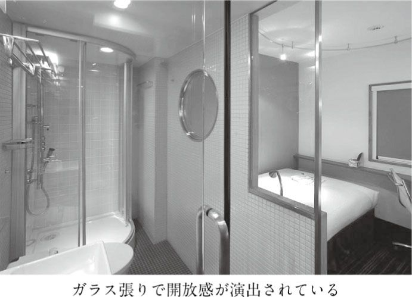
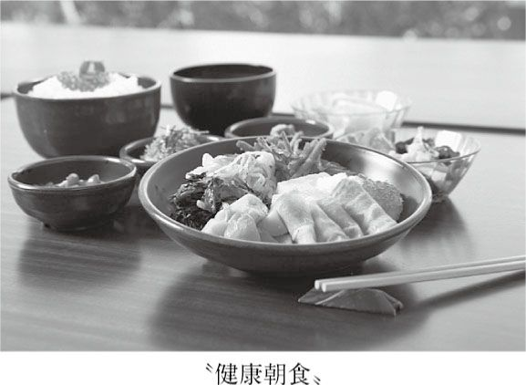
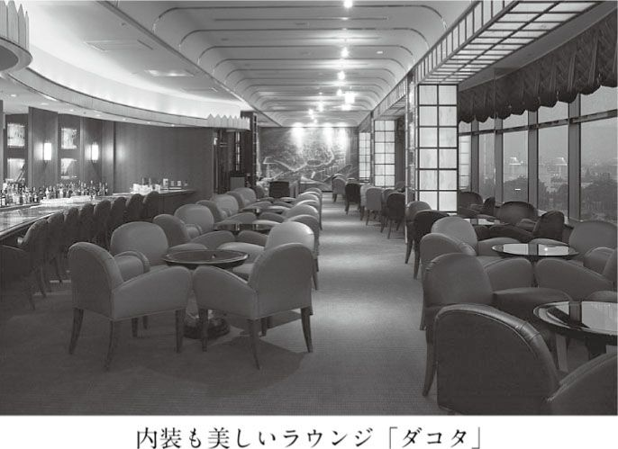
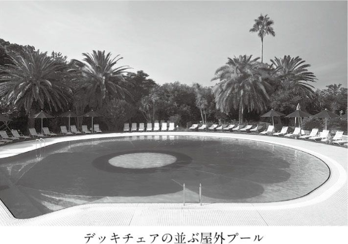

| おひとりホテルの愉しみ | |
| 富田 昭次 | |
| (2009) | |
おひとりさま文化って？
ほんのひと昔前、女性がひとりで行動するには相当の勇気が必要だった。以前に、私と同年輩の知人の女性がこんな風に嘆いていたことを思い出す。
「ああ、男の人って、うらやましい。ひとりでも、仕事帰りに焼き鳥でビールを一杯、なんて楽しめるのに、女性はそれができないのよねえ」
国は違うけれど、十数年前に香港に行ったとき、こんな話を聞いた。マクドナルドがＯＬの間で人気が出たそうだが、その理由はひとりで気安く夕食を取れるからだったという。
そう言えば、日本でも同様な例があった。定食屋として女性に人気の高い大戸屋である。働く女性がひとりでも、昼夜を問わず安心して家庭的な食事ができるということで女性の支持を集め、一気に多店舗化が進んだ。外食市場では、供給がようやく需要に追いついた瞬間だった。
女性にとっては外食でさえ大変なことだから、旅行となれば、なおさらのことである。
一九九〇年代の終わり頃、新聞に「ひとり客ってなぜ旅館に嫌われるの？」という見出しの記事が載った。その記事は、温泉地などの日本旅館は「おひとりさまお断り」のところが圧倒的だと報じている。旅行会社の窓口には「女ひとり旅の宿」と謳ったパンフレットも並び始めていたが、全体から見ればその数も少なく、大半が繁忙期を除くなどの条件付きで、料金も割高なことが多いというのだ。
では、ひとり客はなぜ嫌われてきたのか。その記事によると、旅館は部屋が広く、複数人数を受け入れることで経営が成り立っているので、利用者がひとりだと経営効率が下がること、また女性ひとり客の場合だと、経験上だろうか、自殺でもするのではないかという恐れがあり、安心してひとり客を受け入れられないのだそうだ。
一方、その記事によると、九三年に月刊誌『旅』が初めてひとり旅特集を組んだら五〇万部が完売、それ以来、毎年ひとり旅特集を組み、好評だという。旅館のひとり利用の需要は増えるだろうというのが、この記事の結論だった。
＊
この記事が掲載された頃、おひとりさま向上委員会なるものが設立された。提唱者は岩下久美子さん。私もあるホテルのパーティで知り合い、「近いうちに雑誌で対談しましょう」と言ってくださり、楽しみに待っていた。が、それから間もなく、彼女の事故死を告げるニュースに接し、驚くと同時に悲しい思いをしたことがある。
それはともかく、同委員会は現在も活動中で、そのホームページの冒頭にはこう記されている。
「『おひとりさま』とは、人間として当たり前の個が確立できている女性のことです。
家族や恋人、友人と過ごす時間は大事。でも、自分の時間も大切。一人の時間も楽しく豊かに過ごせる――そんな大人の女性のことです。
『おひとりさま』への道は、究極の女磨き。おひとりさま向上委員会では、女性ひとりでの食事や旅を応援します」
この委員会が設立されて、一〇年を迎えようとしている。パソコンで「おひとりさま」を検索してみたら、約二二六万件もヒットした（二〇〇九年一月現在）。この委員会の設立がきっかけとなって、「おひとりさま」という言葉は完全に市民権を得たように思える。
しかし、気になることが一つある。「『おひとりさま』は個が確立できている女性」という定義である。男性の場合は当てはまらないのだろうか。
以下は、マスコミの報道や周囲の動向を見ての大雑把な印象だが、今日、行動力においては女性の方が優っている印象を受ける。一般的に、男性は仕事の面では活動的であっても、余暇においては行動範囲が極端に狭くなる傾向にあるのではないだろうか。外食や旅行といったお楽しみの分野では、女性の方が圧倒的に情報量を保有し、実行に移しているように見えるのである。いまや、男性向け委員会の設立が必要な時代になってきたのではないかと思えるほどなのだ。
ひとりの時間を豊かに過ごす
さて、本書『おひとりホテルの愉しみ』である。前出の「おひとりさま」の定義は別にして、女性にも男性にも手に取っていただきたいと考えているが、私は男なので、ホテル業界で主流となっている女性向けプランを体験することができない。それでも、最近は男性向けプランも徐々に増えてきているので、多少そのことに触れることはできるだろう。しかし、本書の最終的なミッション（最近のホテル業界では、この言葉がよく使われます）は、ひとり向けプランの有無にかかわらず、ホテルの世界を積極的に遊んでいただくことである。また、練達の女性には「あら、そういうところもあるのね」と、お楽しみのリストに加えていただくことである。
＊
ところで、読者の中には、こんな素朴な疑問を抱く方もいるだろう。おひとりホテルなんて淋しくないの？ 楽しいの？ ひとりきり、ホテルで何をするの？ と。
淋しさについて心配している人は、先ほどのおひとりさま向上委員会の「自分の時間も大切」という言葉を思い出してほしい。最初は、ひとりでいることが淋しいと感じる人もいるだろうが、経験を重ねることによって、ひとりでいることの快適さ、時間を自由に使える楽しさを知るようになるのではないだろうか。聞くもの、見るものが、深く染み入ってくることを感じるようになったら、あなたもひとり旅やおひとりホテルが病みつきになるはずだ。
では、ひとりきりで何をするのか。結論から言えば、何をしても構わないのである。スパ・エステで〝ゴッドハンド〟に身を委ねるもよし、日頃の寝不足を癒すもよし。読書に耽るのもいいし、音楽をじっくり聴いてもいい。この際だから思い切ってバーに飛び込み、バーテンダーにお酒のことをいろいろと教わろうと考えるのも悪くない。高い所からボーッと外を眺めるだけでもいいのだ。
温泉地の旅館では人目が気になってしにくいこともあるが、適度に放っておいてくれて、食事の取り方も自由なホテルなら、過ごし方はあなたのお望み次第なのである。いつも眺めていた憧れのホテルで、素敵な一日を過ごしていただこう。
でも、もともとひとり暮らしなのに、わざわざ近くのホテルに泊まる必要があるの？ こんな疑問を抱く人もいるだろう。
私も長年ひとり暮らしなので、その気持ちが分からなくはないが、例えば東京に住んでいる人が東京のホテルに泊まっても大いに気分転換を図ることができ、旅行の気分に十分浸れるのではないだろうか。
私の経験から言えば、周囲の風景が変わるだけでも、人の心は躍るものだと思っている。見慣れた部屋の家具から離れるだけで、マンネリズムに陥った生活から抜け出せ、非日常的な雰囲気を楽しめるはずだ。
仮に、いま住んでいる部屋よりも狭いビジネスホテルの部屋に泊まったとしても、普段とは違う時間の過ごし方ができると思う。逆に、自分の身の回りの物が必要最小限しかないから、読書に集中できたり、ものごとがゆっくり考えられたりする。
それでも、部屋が狭すぎるよと思ったら、外に出て近くの公園や庭園、美術館、博物館などを訪ねてみたりするといい。何も無理して部屋にずっとこもっている必要はないのである。この場合は、ホテルはあくまで小旅行や観光の拠点として考え、ちょっと寝に帰るだけと思えばいいのだ。
ビジネスホテルに泊まり、近くに高級ホテルがあれば、そのホテルのラウンジを利用したり、翌朝、朝食をいただきに出向いていってもいい。
そうすれば、ビジネスホテルだって、実は立派なおひとりホテルになり得るのである。
＊
次にホテル選びだが、目的や予算によって、あるいはホテル利用の習熟度によって変わってくることは言うまでもないだろう。
年に一度の自分へのご褒美と一念発起して、とか、ホテルの真髄とはどういうものか、この目でしっかり見てみようといった意識があれば、超高級ホテルに泊まるのもいい。その経験が自己投資となって価値を生み、見聞が広がり、心が豊かになることだろう。
ただし、これは自分の世界とはあまりにも違いすぎると思ったり、背伸びをしすぎてしまって堅苦しさばかりを感じたら、せっかくお金を使った意味がないかもしれない。こういう人にとっては、高級であればあるほどいいというわけにはいかない。
また「遠くの親戚よりも近くの他人」じゃないけれど、遠くのリゾートや温泉地へ行くよりも、近くの都市ホテルやアーバンリゾートに行く方が、時間的にも、費用的にも、そして心理的にも負担が少ないはずだ。それに、いくら人気のあるリゾートホテルでも、レストランに入って見渡したらカップルや家族客ばかり、では肩身の狭い思いをするだけである。
いろいろ考えてみると、まず、ハードルを低くしてホテルを選ぶのがおひとりホテルを楽しむ順当な第一歩だろう。そして、身の丈に合ったホテル選びをしていきながら、次第にグレードを上げていくことが、おひとりホテルで満足を得る秘訣であり、末長く、何度も楽しめる方策だと言える。
＊
光文社新書では、〇二年春に『「極み」のホテル』を、〇四年春に『東京のホテル』を上梓した。その後、外資系ファンドが新しい所有者になってリブランド（施設やサービスを見直し、改装を行なうとともに名前も変えてしまうこと）を積極的に進める例が多く見られるなど、日本のホテル業界はいまどんどん変わってきている。
そこで本書では、〇四年春以降に開業したホテル、前作、前々作で触れられなかったホテル、既存のホテルの中で、注目すべき変貌を遂げてきているホテルを中心に、新しい体験を述べることにした。また、ホテルに宿泊するとなれば、どういう客室なのかということが最大の関心事になると思われるので、客室の観察にやや力点を置いた。と同時に、最近は快眠機能の充実や浴室改善、スパ・フィットネス施設の開発が大きな流れを生んでいるので、いわばホテルのリラックス機能に関しても紙数を割いた。
念のために付け加えれば、最近は変化が激しいので、まずは冒頭の第１章と第２章でホテルの最新動向を捉えることで、おひとりホテルの予習をしていただけたらと思う。
それでは、誰にでも可能なおひとりホテルの楽しみ方を追求してみよう。
目 次
六本木周辺の都市観光を楽しもうと、ザ・ビー赤坂というホテルに宿泊し、その翌朝、歩いて一〇分ほどのザ・リッツ・カールトン東京に朝食を取りに行った。そのときのことである。四五階にあるレストランの窓際のテーブルに案内され、座って何気なく隣のテーブルを見ると、英字新聞が何紙も置かれていた。
ふむ、どうやら、おひとり用のテーブルが用意されているようだ、と思いながら、ブッフェの朝食をいただいていると、やがて初老の白人の宿泊客が新聞を手に持ちながら、そのテーブルに着いた。
「いやあ、新聞に囲まれてしまったよ。全部読み切れるかなあ」
ウェイターにそんなことを言いながら、白人男性は笑った。
「このホテルのサービスは本当に素晴らしいよ」
私が食事をしていたとき、ひとり客は私とその白人男性だけだった。当日、そのホテルにどれほどのおひとり宿泊客を数えたかは知らないが、白人男性は自分のためにわざわざテーブルを用意してくれていたのだと思ったに違いないし、実際そうであったのだろう。まさにおひとりホテルにふさわしい光景を見せていただいた。
そう言えば、私も感心したことがあった。スタッフに「リッツ・カールトンと言えば、ブルー・ゴブレットだけど、ここは違うんですね」と話しかけると、彼の口からすらすらと答えが出てきたのである。
「このレストランは緑色と濃い茶色を基調にしているものですから、ブルー・ゴブレットは合わないだろうということで、あえて使わないことにしました。確か、世界のリッツ・カールトンでもここだけのはずです」
その昔、青いガラスは裕福な家庭のステイタス・シンボルになっていて、リッツ・カールトンの美しいコバルトブルーのグラスは、ひとつの象徴になっていたが、このレストランだけは使用していないのだ。私は新しいリッツ・カールトン・トリビアを仕入れることができ、ちょっと得した気分になった。
リッツ・カールトンの特色は「ミスティーク」にあると言われている。フランス語で神秘的な、という意味である。利用客に「あれ！ どうして？」と思わせるようなもてなしで今日の名声を築いてきたと言える。
ミスティークを生み出すのは、このホテルチェーンの理念や歴史、組織などをよく学んだ感性豊かな従業員である。だからこそ、先ほどの会話も淀みなくできるのだ。実際、「スタッフと話すのが楽しみで、リッツ・カールトンに泊まるんだ」と言う旅行者もいるほどだという。
ところで、私は先ほど「歴史」と書いたが、このリッツ・カールトンという名前は、一九世紀から二〇世紀にかけてのホテル王セザール・リッツと、彼が開業に携わったロンドンのカールトン・ホテルに由来する。だから、新しいアイデアを盛り込みながら、古き良き時代の優雅なホテルを再現しようとしているのが今日のリッツ・カールトンと言えるだろう。「紳士淑女をおもてなしする私たちもまた紳士淑女である」という有名なクレド（信条）からも、歴史を重んじる哲学が伝わってくる。
そのホテルが九七年の大阪に次ぎ、〇七年三月、東京・六本木に開業したのである。防衛庁の跡地を再開発した東京ミッドタウンにあって東京で一番高い建物、高さ二四八メートルのミッドタウン・タワーの一～二階と、四五～五三階を占める形での営業である。
客室は四七～五三階にあり、二四八室を数える。最も狭いものでも五二平方メートル。フォーシーズンズホテル椿山荘東京などでも実績のあるアメリカの有名なデザイナー、フランク・ニコルソン氏によって、ウォーム＆モダンをテーマに内装が施されている。
ホテルの顔となるロビーは四五階。先ほどのレストランや和食堂、バーラウンジが配されている。そして四六階には、二〇〇〇平方メートルの広さを誇るスパ＆フィットネス施設が展開されている。
開業時、このホテルのロビー階には多くの人々が押し寄せた。東京ミッドタウンという新しい街に対する興味もあっただろうが、ホテル自体への関心も強いものがあったようだ。
それは大阪の成功と人気ぶりから来ているようで、広報担当者も「お客様の間で王冠とライオンを組み合わせたマークがすっかり浸透していることに驚いています」と言っているほどだ。ホテルがシンボルマークで認識されるというのは珍しいことのように思うが、大阪のホテルがそれだけインパクトの強い存在感を示してきたからだろう。
さて、いま外資系最高級ホテルが注目されている。第６章で後述するように、このリッツ・カールトンをはじめ、外資系ホテルが〇七年までに相次いで開業し、おひとりホテルの楽しみ方がぐんと広がってきた。
では、どういうホテルが開業したのか、改めて振り返っておこう。〇二年以降の東京では、次の外資系最高級ホテルが開業している。
① 〇二年 フォーシーズンズホテル丸の内 東京
② 〇三年 グランド ハイアット 東京
③ 〇五年 コンラッド東京
④ 〇五年 マンダリン オリエンタル 東京
⑤ 〇七年 ザ・リッツ・カールトン東京
⑥ 〇七年 ザ・ペニンシュラ東京
そして、〇九年にはシャングリ・ラホテル東京が開業する。既存の外資系ホテルの進出を考え合わせると、錚々たる顔触れが東京に集結したことになる。
また、この間の〇五年には、プリンスホテル・グループの旗艦的存在であるザ・プリンスパークタワー東京（開業時は東京プリンスホテルパークタワー）も開業していて、高級ホテルの市場はずいぶん厚みを増したような印象を受ける。
もっとも、①のホテルの客室数はわずか五七室だし、②～⑥で最も客室が多いのは②の三八九室で、客室数の面から見ただけでは、東京の市場全体に与える影響は、それほど大きいものがあったとは言いにくいようにも思える。
むしろ、頂上決戦が激化したと言った方がいいかもしれない。これら高級ブランドの中には「市場をピラミッドにたとえれば、全体の五パーセントの頂上の部分が私たちのお客様である」というような認識を持っているホテルもあるので、そういう意味での顧客の争奪戦は激しさを増しているかもしれない。
それはともかく、利用者にとってみると、前述したように楽しみは広がってきたし、こういう外資系ホテルで働いて、それぞれのホテル企業の教育を受け、高度な経験を積む人の数が増えることは意義深いように思える。これは大いに歓迎すべきことだろう。
こうした中、〇六年秋に、世界最大級のホテル・グループ、インターコンチネンタルホテル・グループ（以下、ＩＨＧ）が全日空ホテルズとの提携を発表、業界に大きな衝撃が走った。事実上、全日空ホテルズの運営の主導権を、ＩＨＧが握ることになったのである。
それに伴って、全国にいくつもあった全日空ホテルの中の直営ホテルがリブランドされた。例えば、代表格の東京全日空ホテルはＡＮＡインターコンチネンタルホテル東京と変わり、そして〇七年一一月の千歳を皮切りに、富山、金沢、広島、那覇、成田、大阪、新潟、福岡の各全日空ホテルは順次ＡＮＡクラウンプラザのブランド名に変更されたのである（那覇の場合は沖縄ハーバービューホテルから沖縄ハーバービュークラウンプラザへと改称し、新潟の場合はホテル新潟が同様にリブランドされた）。
クラウンプラザは〇八年五月現在で、世界に二九九軒を数え、さらに一〇〇軒以上のホテルが開業準備を迎えているという高級ブランドのホテル。その特色について、ＩＨＧは「スタイリッシュで洗練された、革新的なサービスや商品を提供するブランドである」と説明している。
また、今回のリブランドで、新たに高層階の二二～二三階にクラブフロアが設けられたというので、その客室を利用してみた。
クラブフロアというのはエグゼクティブフロアとも呼ばれ、もとは出張旅行が多い多忙なビジネスマンに繰り返し利用してもらおうということで、海外のホテルで開発された特別階のことである。宿泊料金は通常の階の客室よりもやや高めに設定されてはいるが、多くの特典が得られるので、最近はレジャーが目的の宿泊客の間にも人気が出てきて、よく利用されるようになってきている。
それだけに、特別階を充実させようというホテルが増えてきている。近年では〇五年に、パンパシフィック横浜ベイホテル東急（当時はパンパシフィックホテル横浜）が特別階の「パシフィックフロア」を改装、専用ラウンジを新設しているし、同じ年、ハイアットリージェンシー東京（当時はセンチュリーハイアット東京）が三八〇平方メートルという国内最大級の専用ラウンジを完成させている。
いや、この傾向は外資系ホテルに限ったことではなくなってきている。近年、業績・人気とも上向いている東京・渋谷のセルリアンタワー東急ホテルでは〇七年、それまでの三階層・四九室から五階層・九二室に増やし、専用ラウンジに当たるサロンも七四平方メートルから一八二平方メートルに改装・拡張している。
また、中には、専用ラウンジを設けないで、客室のしつらいをグレードアップさせた特別階も登場している。東京・池袋のホテルメトロポリタンはやはり〇七年、客室最上階の二四階にメトロポリタンフロアを開設した。シモンズ社製のベッドや加湿機能付き空気清浄機、高音質のスピーカーなどを備えて、客室の居住性を高めている。
このメトロポリタンの特別階のエレベーターホールにはアロマオイルの芳しい香りが広がっているが、セキュリティドアを設けて、安全性もしっかり高めている。
一般的に、こうしたクラブフロアはエレベーター内の所定の差し込み口にカードキーを差し込むなどしないと、自室の階には行けない仕組みになっているので、女性のおひとりホテルとしても安心して利用できるのではないだろうか。
その日、私は夕方五時過ぎに到着したので、カクテルタイムで一時間ほど、朝食では一時間半ほど、常備されている新聞や雑誌を読みながら、専用ラウンジで過ごした。
一般的には、高層階にラウンジが設けられているが、このホテルのラウンジは二階にあったレストランを改装したものと聞いた。十分な広さがあり、高級感のある落ち着いた内装に仕上げられている。
居心地がいいので、実は、カクテルタイムの終わり頃にもう一度利用しようと思っていたのだが、先ほどの「ご案内」を読むと、プール＆サウナが通常料金三一五〇円のところ、特別料金の一〇〇〇円で利用できることが分かった。その誘い文句に惹かれて泳ぎに行ったところ、泳ぎすぎて疲れてしまい、二度目のラウンジの利用は断念してしまった。惜しいことをしたと、いまでも後悔している。
でも、おひとりホテルを楽しむ上で、この専用ラウンジの存在はとても大きく感じられた。身の置き場所が増え、ホテルでの過ごし方に幅が生まれるのだ。レジャー目的の宿泊客が注目するのも納得の話である。
そのほか、「ご案内」によると、このクラブフロアには次の特典が与えられている。ラウンジ内のビジネスブースにパソコンやプリンターが置いてあって、それらを自由に使えたり、専従スタッフによるコンシェルジュ・サービスも受けられると記されている。いざというときに、周辺観光の相談に乗ってくれる相手がいるというのは頼もしい限りである。
そして、レストランやバーの利用料金が一割引になるのも特典の一つ。細かいところでは、客室に備え付けのミネラル・ウォーターが一本無料となっている。実は、こういう、少額なものでも無料サービスというのは、案外うれしいのである。利用者心理を捉えているということであろうか。
眺望は、向きによって主に二つに分かれる。大阪駅周辺の超高層ビル群が見える側と、ホテルのすぐそばを流れる堂島川が眺められる側である。堂島川に沿って高速道路も走っている。個人的な好みを言えば、堂島川の方の眺めに軍配が上がるだろうか。
個人の好みは別にして、リブランドされて、もう一つ際立った特色が生まれている。オリジナル快眠プログラムとして「スリープ・アドバンテージ」なるものが導入されたのである。
これはすべての宿泊客に無料で提供されるもの。詳しくは第５章で触れることにするが、入浴剤や低カフェインのほうじ玄米茶といったアメニティ五種類に加え、五種類の枕や三種類のアロマオイルなどの貸し出しアイテムが用意されている。
「スリープ・アドバンテージ」は全国のＡＮＡクラウンプラザホテルに常備されていて、ひとつのホテルグループが快眠をテーマに、ここまで用意してくれるのは珍しい。私はラベンダーのアロマオイルを届けてもらい、ベッドに就いた。こういう香りに包まれて眠るというのは、とても心安らぐものだ。
ところで、今回のリブランドでは各レストランも改装されたが、おひとりホテルで利用する場合は、「ザ・ダイニング」をお薦めしよう。奥まったところに入口があり、小ぢんまりとしていて、ひとりでも落ち着ける雰囲気がある。料理は生クリームやバターの使用を極力抑えた点が特色で、野菜もたっぷりのヘルシー・メニューになっている。夕食をひとりで取るのは気が引けるという人は、昼食で利用するというのはいかがだろうか。
新幹線の新神戸駅。多くの人はその駅前の、地上三七階建ての超高層ビルの存在を知っているだろう。八八年から営業を続けてきた新神戸オリエンタルホテルのことである。
そのホテルが〇六年一二月からクラウンプラザ神戸として営業している。同じクラウンプラザでも、こちらは大阪とは全く異なる背景を持っている。
少し詳しく説明すると、モルガン・スタンレー不動産ファンドが〇四年二月に従来の持ち主であったダイエーの子会社から取得、その後、約二年の歳月をかけて、ほぼ全館の改修工事を実施したものである。そして、同ファンドのホテル経営会社であるパノラマ・ホスピタリティがＩＨＧとフランチャイズ契約を結び、クラウンプラザにリブランドしたというわけである（なお、ほかのＡＮＡクラウンプラザと成立した背景が違うからだろう、利用した〇八年一〇月現在、前述の「スリープ・アドバンテージ」は、神戸の客室では見られなかった）。
ともかく改修後のクラウンプラザ神戸はグレードアップしたが、後で触れるように、利用の仕方によっては、ビジネス旅行の流れの中でも宿泊できるようなホテルである。なぜかと言えば、シングルの客室が割合と多いからだ。通常階に限ってみれば、五一六室のうち一〇八室が一五～二〇平方メートルのシングルである。だから「ひとりだと気後れしてしまいそう」という心配は無用なのだ。
以前にアメリカで聞いた話だが、ビジネスマンはその都市の一番いいホテルの一番安い部屋に泊まるのが良しとされていた。商談先の信用が得られ、予算と状況に応じてさまざまな付帯施設が使えるからである。これは、おひとりホテルでも当てはまるように思う。豪華な雰囲気に浸りながら、そのときの予算や目的に応じて過ごし方を選べるからである。
クラウンプラザ神戸にはあらゆる施設が揃っているほか商業ビルも隣接しており、そちらで食事を取ることもできる。こういう使い勝手のいいホテルこそ、おひとりホテルにはふさわしいホテルなのである。
さて、神戸でも、三〇～三二階と三七階を占めるクラブフロアを利用した。こちらには三七階に広々とした、眺望のいい専用ラウンジがある。大阪と同様のサービスを行なっているのは言うまでもないが、時間帯が少し違っている。
例えば、カクテルタイムは午後五時半から七時半までで、七時半から九時半まではナイトキャップタイムとなっている。前者では酒類とオードブルが提供され、後者ではオードブルがなくなり、酒類とソフトドリンクが提供されるという内容だ。
それから、こちらのホテルにもヘルスクラブがあるが、屋内プールやジムを利用する際のロッカー使用料、つまり入場料一〇五〇円が無料となっていた。
そこで、私は作戦を立てた。大阪のリベンジではないけれど、夜の間ラウンジを二回利用したいと思い、夕方は「アンサナ・スパ」へ行き、その後にラウンジでカクテル、それから軽い夕食を取りに出て、ナイトキャップのために再びラウンジに戻るという計画である。幸い、屋内プールは午前七時から利用できるというので、そちらの方は朝食前にと考えたのである。
バンヤンツリーは九四年にタイのプーケット島に開業したスパ・リゾートホテルで、バンヤンツリー・スパはこれを発祥としている。私もこのホテルには開業の翌年に滞在しているが、当時はスパを利用しなかった。今日のスパの隆盛が予測できていたら利用したのにと、後悔しきりである。
個人的な後悔はさておき、クラウンプラザ神戸では、それまで文化教室として利用していた場所を改装し、〇七年一月にこのスパを開設した。全部で八室を数える個室は、すべて二人でも利用できるというツイン仕様で、ゆったりした空間に仕上がっている。ひとりで利用すると、かなり広く感じられる。
トリートメントを受ける前、畳敷きの部屋も見せてくださった。まるで旅館のような佇まいが面白い。
私は九〇分の「イブズ・シークレット」を受けた。バリの伝統的な技術を取り入れたマッサージで、血液循環を促して緊張を取り除き、良い睡眠サイクルへと導いてくれるものという。プーケット島のバンヤンツリーの学校でひと通りの技術を学んだというセラピストの女性の手が、私の体を揉み解してくれる。
至福の九〇分が終わると、彼女が部屋のブラインドを上げた。すると、幾分黄色みを帯びた満月が低い位置で煌々と輝いていた。身も心も癒された瞬間だった。
そう言えば、見下ろした足下の市街地は、異人館街と呼ばれる地区である。借り切り状態の屋内プールでひと泳ぎし、専用ラウンジで朝食を済ませると、異人館街へと向かった。
異人館街の中心部へは、徒歩一〇分ほどで着いた。観光名所がホテルから近いと、忙しいビジネスマンにも便利だろうな、などと思った。
例えば、神戸での仕事が夕方の早い時間に終わり、翌日は午後に出社すればいいというようなとき、さまざまな施設が揃ったこのホテルで、これまで私が書いてきたような形でくつろぎ、翌日の午前中は異人館街まで足を延ばして観光を楽しみ、それから新神戸駅で新幹線に飛び乗ればいいわけである。仕事とホテルでのくつろぎと近隣の名所観光。三点セットの揃った、こんなビジネス旅行はいかがだろうか。
前述のように、外資が既存のホテルを取得して改装し、リブランドによって施設を刷新したりサービスを充実させる――こういう傾向が強まってきたのが、ここ数年のことだが、さらに言えば、閉鎖したホテルを甦らせる、そんなことも外資の力で行なわれるようになってきた。
かつて、後白河法皇が統治していた広大な法住寺殿があった京都の東山七条。名所の三十三間堂と智積院に挟まれ、京都国立博物館の向かい側という絶好の立地に、外資系のハイアットリージェンシー京都（以下ハイアット京都）がある。いま、京都で最も人気の高いホテルのひとつである。
このホテルは、以前は京都パークホテルとして存在していた。七一年に創業し、八〇年には欧州調のロビーを持つ本館が新築され、営業を続けてきた。
しかし、〇五年一月に閉鎖した。経営会社の丸玉観光はその翌年に倒産しており、苦境に立たされての閉館だったようだ。
そのホテルを、前出のモルガン・スタンレー不動産ファンドが購入し、約四五億円の費用を投じて改装、こうして〇六年三月に開業したのがハイアット京都なのである。
もっとも、改装で活躍したのは日本人だった。株式会社スーパーポテトの杉本貴志氏が総監修を務め、コンテンポラリー・ジャパニーズをコンセプトに、日本の伝統・文化を現代の感性で表現したのである。
杉本氏には、いまから二四年前にお会いして、お話を聞いたことがあった。氏が七八年に手がけた東京・渋谷の家庭料理「まる八」の斬新性に衝撃を受け、取材をさせていただいたのである。そして、このホテルを見て、私は、三〇年を経ても、氏は先頭を走り続けていると感じた。一度閉鎖したホテルは、見事、デザインの力で甦ったのである。
それにしても、賑わっている。混雑する紅葉の季節に入る前にと思って早めにやって来たのだが、どうやら、婚礼の季節に当たってしまったようだ。
私は客室へと急いだ。日本の伝統美は、客室に入っても、意外なところで見せてくれた。全体は白木を使いながら、照明は行灯風という具合で、ほの明るい雰囲気になっていて、壁には、木の一部を刳り貫いた渋みのある一輪挿しが掛かっている。
その中で、ある部分が華やかな色彩を放っていた。よく見ると、ベッドの頭部の壁に、和服の布地がタペストリー風に組み合わされているのである。
聞けば、江戸時代から大正時代にかけての和服地を使用したのだという。私の部屋は、赤、桃、黄、緑、紺と、色とりどりの布地が可憐に存在を主張している。なるほど、これこそが日本の伝統・文化を現代の感性で表現したものなのだと思った。と同時に、外に見える日本庭園の緑とも違和感なく呼応し合っていて、高級旅館と比肩し得る空間構成に感じ入った。
そんな高級旅館と比肩し得るホテルでも、スパは存在していた。京都見物に来て、スパを利用する人がいるのだろうかという根本的な疑問を持つ人がいるかもしれないが、これは、スパは一流ホテルの必須施設になってきている傾向の表われと言えるだろう。
スパについては後述するので、ここではあまり詳しくは触れないが、京都でスパを開設したと言えば、先輩がいる。その名も京都ロイヤルホテル＆スパである。ハイアット京都の一年前に本格的なスパを開設している。
そのほか、外資系ブランドに限って見てみると、ウェスティン都ホテル京都が「インルームスパ」を行なっている。こちらは、自室でトリートメントを受けるというもの。ウェスティンでは世界各地で「インルームスパ」を実施していて、そのために独自の移動式ベッドを開発したほどである。
それに、京都のホテルと言っても、利用するのは観光客ばかりではない。京都およびその周辺に住む人々も出入りする。だから、京都のホテルでスパが増えても、何ら不思議ではないわけだ。
さて、軽い夕食を済ませ、時間を置いた後、ハイアット京都のスパ「ＲＩＲＡＫＵ」へと向かった。
こちらのスパも一〇の個室を数え、しかも鍼灸も受けられる本格派である。私は鍼灸の経験がないので、一番基本的なアロマテラピーのボディ・トリートメントを受けた。ちどりやオリジナル・アロマから柑橘系のオイルを選び、女性セラピストの手に身を委ねることにした。ちどりやとは、京都の舞妓・芸妓さんの美容コスメで人気を得ている老舗銘柄だ（このほか、このスパではフランス製の「ＹＯＮ‐ＫＡ」が使用されている。いずれも自然の素材にこだわったものである）。
繭玉でフットケアを受けた私は、ベッドの上に横たわった。壁掛けのお洒落なデザインのＣＤプレイヤーから流れてくる優しい音楽を聴きながら、トリートメントの心地よさに浸った。
スパから部屋に戻った私は、就寝まで時間があると気づき、「東山」へ赴いた。ここは炭火焼と割烹のメインダイニング、寿司、バーで構成されている和食空間である。京都の古い民家をイメージして造られていて、古い錠前や皿、さらには古い本までが装飾の一部として利用されている。見ているだけでも楽しくなる空間である。前出の杉本氏はかつて、私の取材で「繁昌する店を作るという発想はしない。依頼主の趣旨を汲み取った上で、自分の内なるものを表現したい。少数の人でも理解し、納得してくださる空間を創造したい」と語っていた。これならば、多くの人がくつろげるのではないだろうか。
私は、バーカウンターに座った。女性がひとり、腰掛けていたので、ひとつ間を置いて腰を下ろした。
やがて、新しいお客様が入ってきたため、その女性は私の隣に移動してきた。横目で盗み見すると、若くて美しい女性だ。
「葉巻の煙がご迷惑ではないですか」と私が言うと、「たばこの煙は苦手ですけど、葉巻の薫りはいいですね」という返事。歓迎してくれたと思い、しばし、言葉を交わした。ほのかに京都言葉の抑揚を感じたので、尋ねると、やはり京都の人だった。以前からこのホテルに関心があったので、勇気を振るって、ひとりでこのバーに来たのだという。
「私、京都に住んでいることに、いつも誇りを感じているんです」
彼女からこんな素敵な言葉を聞いた。
さて、翌朝。六時に目覚ましをセットしたものの、その一五分前に、どこかのお寺の鐘で目が覚めた。たっぷりとしたお湯に浸かれる浴室で体を温め、再び「東山」で庭園を眺めながら朝食を取り、周辺観光に出かけた。徒歩圏内にある三十三間堂、智積院、京都国立博物館、豊国神社、河井寛次郎記念館などを、じっくりと時間をかけて巡った。後には「京都に住む誇り」という彼女の言葉が心の中を大きく占めていた。
外資系ホテルや外資系ファンドが買収したホテルと言えば、高級ホテルを連想する人も多いと思うが、今日では中級ホテルやビジネスホテルまでと、その領域はどんどん拡大している。例えば、フランスのアコーグループはオフィスビルを取得してホテルに改造、〇四年一〇月にメルキュールホテル銀座東京を開業した。オフィスビルをホテルに転用したというのは初めてだろうか、さすが世界の市場をリードしてきた外資系ホテルである。
天井高が幾分低いかなというように、オフィスビルの名残を感じさせる部分もあるが、壁には花柄が描かれ、バーガンディ・カラーという赤ワインを連想させる色調を利用するなど、フランスのホテルらしい華やいだ雰囲気を漂わせている。
付帯施設はビストロ一ヵ所のみだが、東京メトロ有楽町線の銀座一丁目駅と直結しているという利便性があるためか、室料は若干高めの設定のようだ。でも、高級ブランド品をじっくり品定めしながら買い物を楽しみたいという女性には、近隣のホテルモントレ銀座とともに使いやすいホテルと言えるだろう。
さて、そこで冒頭に挙げたザ・ビー赤坂である。こちらは七三年に東レの経営で開業した赤坂シャンピアホテルを、イシン・ホテルズ・グループ（コラム②参照）が取得して改装、〇五年一一月に営業再開したホテルである。
同グループは順調にホテル数を増やしてきているが、中でも注目したいのがザ・ビー・ブランドの開発だ。ホテルバーデン六本木を取得し、ザ・ビー六本木に改装して〇四年三月に開業、以後、このブランドのホテルを増やしてきている。

このホテルを選んだ理由はいくつかあった。地方から上京してくる知人がたびたび使用していたこと。そして先に記したように、東京ミッドタウンまで徒歩で行ける距離にあったこと。それから、観光が目的だったので、最低限の設備があればいいというのも理由だった。
何しろ、このホテルにはバスタブがないのである。その代わり、ドイツ製のシャワーブースが設置されている。真横から湯が噴き出すボディ・シャワーも付いているので、体が十分温まるという仕組みだ。
汗を流すために、早速使ってみた。従来の狭いユニットバスに入って浴びるシャワーよりも遥かに心地よかった。開口部の曲線がスマートなデザインだし、前述のように浴室のドアがガラス張りになっていたり、浴室の壁に丸い窓が開いていたり、壁や床が高級感が感じられるタイル張りというのも快適性につながっているのかもしれない。
どんな人が利用しているのかを見てみようと、予定を早めてロビーに下りていった。そこには、二四時間無料サービスのコーヒーマシンが置いてあり、チェックインのとき「いつでもコーヒーをどうぞ」と教えられていたからである。
コーヒーカップを片手に、備え付けの新聞や雑誌をめくりながら、フロントをちらちらと見ていたら、若いビジネスマン、ビジネスウーマンが次々と入ってくる。外国人や母娘連れの人たちも来た。
母娘連れの人たちは、もしかしたら、泊まりがけでスパ・トリートメントを受けにきたのかもしれない。このホテルは、ビジネスホテルのような位置付けでありながら、もともとピアノバーであったところを改装したカジュアルなスパを併設している。心地よい個室で、仲のいい二人が一緒にトリートメントを受けることもできるのである。
こういうコーヒーのサービスはいいなと思いながら、ヒューマン・ウォッチングを楽しんだ。そう言えば、有名なロック・ギタリストのエリック・クラプトンは、趣味の格闘技見物のため、お忍びで定宿のキャピトル東急ホテルに滞在していたとき、ロビーのソファに座ってはヒューマン・ウォッチングを楽しんでいたそうだ。
ザ・ビー赤坂は小規模なホテルながらも、ロビーでくつろぐことを教えてくれるホテルでもあった。
＊
この章では外資系ホテルに絞って話を進めてきたが、それでも多彩な楽しみ方があることをご理解いただけたのではないだろうか。ホテルにはそれぞれの特色や個性があり、人それぞれの目的や需要に応じられるようになってきているのである。
ホテルをある程度固定したイメージで捉えていた人も、ここで見方を変えてくださればと思う。それぞれのホテルの特徴を知ると、「今度はあのホテルに泊まろう」といった選ぶことの楽しみも感じるようになるはずである。
では、次の章では、その選ぶ楽しみを、最近とみに充実してきているホテルの「くつろぎ機能」に注目しながら感じていただこう。
【コラム①】いまから楽しみな新規開業ホテル （参照元へ戻る）
本書が発行されて数週間後、三月二日に新しい外資系最高級ホテルが開業する。シャングリ・ラホテル東京である。場所は、東京駅に隣接した丸の内トラストタワー本館の二七～三七階。七一年にシンガポールで開業したホテルで名声を築き、いまは香港を拠点に、主にアジア太平洋地域でホテルを展開している外資ブランドである。
二〇二を数える客室は、最も狭い部屋でも五〇平方メートル。〇四年に誕生したオリジナル・ブランドのスパ「氣（ＣＨＩ）」も併設されるほか、二〇メートル屋内プールからは皇居側の展望が楽しめるとか。名前の通り、地上の楽園、理想郷を目指しているようだ。
一〇年秋には、永田町にザ・キャピトルホテル東急が開業する。東京ヒルトン時代にはビートルズを迎え入れ、キャピトル東急時代には三大オペラ歌手の滞在先となるなど多くの伝説を残したホテルを改築するもの。二九階建ての高層ビルの一八～二九階が約二五〇の客室となり、スパも計画されている。外資系最高級ホテル並みの施設とサービスを目指す模様だ。
少し先の話だが、大幅な改装工事を経て、一一年頃には営業が再開するのではないかと言われているのが東京ステーションホテル。江戸川乱歩や松本清張、川端康成、森瑤子ら著名作家の逸話が残る日本初の駅舎ホテルがどのように変貌するのか、こちらも大いに期待したいところだ。同系列のホテルメトロポリタン丸の内（第４章参照）の上を行く高級感を持たせるのではないだろうか。
六一年開業の老舗、パレスホテルは老朽化により〇九年一月に休業、一二年営業再開の計画で改築される。丸の内の超一等地の立地条件を持つこのホテルの変身も、また楽しみだ。
注目ホテルが大阪、横浜、仙台にも
東京以外にも注目ホテルの開業が控えている。一〇年三月の完成が予定されているのがセントレジスホテル大阪だ。東京・汐留の計画を途中で断念、代わりにコンラッドが進出したので、リッツ・カールトン同様、大阪でのお披露目が最初の外資ブランドとなる。
場所はビジネス街の大阪・本町。御堂筋に面しており、立地条件は申し分のないところ。二七階建てのビルの一一～二七階を占め、一五九の客室はそれぞれ五五平方メートル以上になりそうだ。こちらにも、もちろんスパが計画されている。
横浜でも、大きな話題を呼びそうなホテルがお目見えする。今回の金融危機の影響がなければ、一一年には、赤レンガ倉庫近くにＷ（ダブリュー）ヨコハマが誕生する見込みだ。海外のホテル事情に詳しい人ならご存じだろう、Ｗは待望の外資ブランド。デザイン性に優れたホテルとして比較的若い世代に支持されていて、ライフスタイル・ホテルという地位を獲得している。センスのいい利用者のライフスタイルと呼応し合うホテルと評価されているからだ。
そして、いよいよ仙台にも外資ブランドが登場。三七階建て超高層ビル、仙台トラストタワーの一～三階、二五～三七階に、一室四〇平方メートル以上の約三〇〇の客室とスパなどを備えたウェスティンホテル仙台が入居する。一〇年八月の開業が待ち遠しい。
二二階でエレベーターを降りると、木の香りと柑橘系の果物と思しき香りに鼻をくすぐられた。そして耳を澄ますと、鳥のさえずりや緩やかな環境音楽が聞こえてくる。
部屋の鍵を差し込んでガラスのセキュリティ・ドアを開け、前に進むと、今度は森や木漏れ日を描いたような絨毯の廊下が伸びていた。左右の壁には、木の枝を表現した金属製のオブジェが飾られている。
導入部から都市ホテルとは思えない佇まいだと思いながら、客室のドアを開けると、和室のように靴を脱ぐ小空間があり、中へ入ると、奥には琉球畳の部屋が広がっていた。
とは言うものの、純粋な和室ではないようだ。部屋には、腰の低いソファやベッドが置かれている。和洋折衷で、両者のいいところを融合させた按配なのである。浴室は？ と見ると、たっぷりと洗い場が設けられた、これまた和洋折衷の浴室だ。
さあ、ここがどこだか、お教えしよう。日本の皇室や世界のＶＩＰもよく利用される大阪の迎賓館的なホテル、リーガロイヤルホテルである。
このホテルでは〇五年から〇六年にかけて「ザ・ナチュラルコンフォートタワーズ」という客室を、四階層・八七室を使って誕生させた。それぞれの階層に森や海、空や花といった基本テーマを与え、それに月や川、日というテーマをかけ合わせて内容に深みを持たせたら、三〇種類ほどの異なるデザインの客室が出来上がったという。ホテルのスタッフが覚えられるのだろうかと、こちらが心配してしまうほどバラエティに富んでいるのが凄い。
先ほどの私の部屋以外では、例えば、壁や天井を青色の和紙で飾り、星が瞬く夜の海を表現した部屋があったり、屋久島の森をイメージして樹木の絵を壁いっぱいに飾ったりと、実に多彩な装飾で、とてもここでは紹介しきれないほどのアイデアが盛り込まれている。
それにしても、なぜ、このような客室を作ったのだろうか。
前出の特別フロアの誕生に遡ること三年前の〇二年、このホテルでは、色彩心理学を装飾に応用した「スタイリッシュ・ラグジュアリー」という客室三九室の販売を開始した。例えば、「クワイエットブルー」として鎮静効果のある部屋を、「オレンジグロー」として活力回復効果のある部屋を創造した。それが評判を呼んだのである。
それで、次の改装では、ほかのホテルにない客室をもっと作ろうと頑張ってしまったのだ。で、そのとき、日本の自然を柱に据え、先ほどの基本テーマを設けたのである。
何しろ、欧米の物まねはやめようというのが発想の原点にあったとか。約一〇〇〇室規模の巨艦ホテルだからいろいろなことができるのだろうが、老舗の格式あるホテルらしからぬ？ 型破りな考え方が痛快だ。
まず目についたのが、青い絨毯である。色の濃淡によって縞模様が描かれている。よく見ると、その縞模様と交差する形で細かな線が描かれている。ホテルの人に聞くと、これらは海のさざ波を表現しているのだという。
ソファとベッドの間には、淡い青色の可動式ブラインドが下がっている。これは、川が海に注ぎ込む形をイメージしているのだそうだ。
説明を聞いてみないと、ちょっと分かりにくいデザインだが、カワセミのオブジェが可愛らしい彩りを添えているなど、全体としては、やはり珍しい内装の客室と言えそうだ。都市ホテルなのにリゾートホテルを連想させる客室なのであった。
老舗ホテルが頑張っている――このリーガロイヤルホテルを見ると、そう思わずにはいられないが、そんな老舗ホテルは、このほかにも登場してきている。
六四年竣工のホテルニューオータニ本館。このホテルが最近、劇的に変化した。
ひとつは〇七年に、客室の窓を「フルハイト・ウインドウ」にしたことである。これは、外側に接する壁全面をガラス張りにしたもので、窓の面積は改装前に比べて、約二倍の大きさになったという。これほど開放感あふれる客室に変身したのは見事と言うほかない。眺望を重んじる私にとっては、拍手喝采ものの客室である。
また同年、一一～一二階に「エグゼクティブハウス 禅」を開設した。こちらは、前章で触れたクラブフロアの一種と考えていいだろう。
約二〇〇平方メートルの専用ラウンジを有し、客室は禅をモチーフに装飾を施している。炭や和紙、竹、麻など古くから親しまれてきた自然素材を使用し、墨色、鼠色、金色、紅色、そしてさまざまな種類の茶色といった伝統色を用い、侘び・寂びを表現している。和風のしつらいの中でくつろいでいただこうというわけで、珍しい趣向の客室に仕上がっている。
ついでに説明しておくと、このホテルでは九四年から時差ぼけ解消のための商品開発、例えば照度の高い光で体内時計を調整するジェットラグ・ライトや、動物性たんぱく質を多く含む朝食メニューなどの開発に取り組んでおり、売り物のひとつになっているのだ。
この階の客室で最も大きく変化したのは浴室である。壁をガラス張りにして開放感を与え、座ったままシャワーが浴びられるようにした。この改装にはホテルの力の入れようが感じられる。浴室の改装には、ベッドのある居室に比べて費用が大きくかさむからである。
しかも、この浴室には、マッサージの機能を持ったボディ・シャワーも備わっている。このシャワーの浴び放題は快適だ。
それにしても、老舗のホテルオークラが大掛かりな工事を敢行してスパを開設したことは、スパの流行に乗り遅れてはならないという気持ちがうかがえて興味深い。というのも、昨今、新規に開業する高級ホテルには必ずと言ってよいほどスパが併設されているので、既存のホテルでもこぞってスパを新たに開設するか、営業してきたスパをさらに充実させる方向に動いているからである。
ハイアットリージェンシー東京は〇六年に、二七階のフランス料理レストランを改装して約五〇〇平方メートルのスパを設けたし、ウェスティンホテル東京は〇七年に、事務所があった四階に約七六〇平方メートルのスパを開いている。
そんな中、ホテル名にスパを冠して強調するホテルも現われてきている。
例えば、〇四年に開業したヒルトン小田原リゾート＆スパである。これは、九八年に当時の雇用促進事業団がスパウザ小田原として開業したホテル。後に小田原市が取得し、ヒルトンに運営を委託されて生まれ変わったのだが、スパと銘打つだけあって施設が充実している。
バーデ棟と呼ばれる別棟にはトリートメント用の個室のほか、ドイツのバーデンバーデンにあるカラカラ浴場を模した水浴施設があり、そこでは水中でのストレッチ運動が体験できるし、その上には天然温泉大浴場も備わっていて、まさに総合的なスパとなっているのである。
ＪＲ・小田急線の小田原駅から車で一五分程度と便利な場所にあり、客室のバルコニーからは相模湾を一望でき、開放感満点だ。
スパは美容と健康を増進させるということで女性を惹きつけ、その存在は、ホテルの人気を左右するようになってきていると言われるほど。そこで、スパとは何かといった基礎概念を解説したコラムや、女性たちのスパ体験座談会を後に掲載した。また、筆者の体験も本文中に記したので、併せて参照していただこう。
とまあ、そんなこんなで、高級ホテルは客室、レストランやバーといった料飲施設、そして宴会場に次ぐ第四の施設としてスパの営業に力を入れ、リラックス機能を高めてきているわけだが、他方、その対極にあるビジネスホテルは、最近どういう状況になっているのだろうか。
ホテルには三大要素というものがあって、それは「３Ｂ」だと昔から言われてきた。ベッド・バス・ブレックファストのことである。付帯施設の少ないビジネスホテルはまず、これが基盤となる。
余談だが、この三大要素が大切だと、しみじみ感じたことがあった。
いまから二〇年以上前の話だが、ニューヨークに出かけたときのこと。市内のホテルはどこも満室状態で、辛うじて、古いホテルの一室を確保できた。しかし、その部屋のベッドは柔らかすぎて寝心地が悪く、浴室も気持ちのいいものではなかった。
そこで仕方なく、翌日は空港近くまで移動し、モーテルよりは少し立派なホテルに投宿した。
さして期待はしていなかった。けれども、ベッドは大きくて、程よく硬く、浴室は清潔で、勢いよく湯が出るではないか。翌朝は明るい雰囲気のレストランで朝食を取ることができた。本当に人心地ついた気がした。宿泊客がリラックスできるためには「３Ｂ」がいかに大切か、私はこのとき、身をもって理解したのである。
その「３Ｂ」を重視し、リラックス機能を高めたビジネスホテルのチェーンがある。ラテン語で「光り輝く」という意味の言葉を名前にしたカンデオホテルズである。
愛知県の知多半島の中ほどに、半田という都市がある。江戸時代から酢などの醸造業が発展し、いまでも黒板塀囲いの蔵や、明治時代に建てられた赤煉瓦の巨大なビール工場跡が見られるという歴史ある町だ。
その中心地、名鉄河和線の知多半田駅から徒歩で二～三分の場所に、カンデオホテルズ半田がある。
大きな黒板塀を思わせるような自動ドアが開いたので、ホテルの中へと入った。「へぇ～」という軽い驚きの声が自分の口から洩れた。ビジネスホテルとは思えないような洗練されたしつらいのロビーが広がっていたのである。フロントの前にはゆったりした感じのソファが置かれ、書棚には洋書が何冊も収まっている。後でパンフレットを見て知ったのだが、それは「カンデオプラザ」と呼ばれる小空間だった。
私は取りあえず、予約したマッサージチェアルームへ向かった。このホテルにはいくつかの種類の部屋があり、旅の途中でリラックスソファルームを予約しようとしたのだが、それが叶わなかった。それで八〇〇円上乗せして、マッサージチェアの置いてある部屋を取ったというわけである。

私は外に出た。冷気に襲われたが、それも一瞬、私は借り切り状態の湯の中に飛び込んだ。近くを走る電車の音が夕闇に響き、旅情をそそられた。
実は、これも現地へ行って知ったことだが、曜日によって展望浴場の借り切りも可能なのだという。デッキチェアも置いてあり、暖かい季節には、借り切るのも一興だろう。
で、体が温まれば、今度はのどを潤す番である。先ほどの「カンデオプラザ」では各種ビールを用意しているということなので、階下へ下りていき、ドイツ製のオーガニックビールを飲みながら、アメリカ音楽のルーツをまとめた洋書を眺めてくつろいだ。
そして、外に出て簡単な夕食を済ませると、再び「カンデオプラザ」に落ち着いた。コーヒーの無料サービスも行なわれていた。部屋だけでなく、こうしてくつろげる場所がいくつかあるということに豊かさを感じる。ビジネスホテルの進化に感じ入った時間だった。

私の前に出されたお膳には、おかずのロールキャベツ・温野菜添えを筆頭に、ひじきの煮付け、サラダが二種類、卵焼き、しらすおろし、お新香などが並んで賑やかで、味噌汁にはなめこが入っている。これに、ジュースやコーヒーが自由に飲めて八〇〇円だから、確かに健康的だし、良心的であった（なお、現在ではブッフェ形式の朝食が提供されている）。
朝食に満足して部屋に帰り、そう言えば、と思い出し、窓から外を見下ろした。するとそこには、古い洋館が佇んでいる。前日は日が落ちてからの到着だったので、気がつかなかったが、朝、目を覚まして、その存在が分かったのだ。
その洋館は、国指定重要文化財の旧・中埜家住宅だった。「カンデオプラザ」でそのパンフレットを入手していたのだが、まさか部屋から見えるとは思っていなかった。
同住宅は明治四四（一九一一）年、酢の醸造で有名な中埜家の中埜半六が別荘として建てたもので、中世のヨーロッパで誕生したハーフティンバー様式が瀟洒な様子を見せている。現在は紅茶専門店「T'sCAFE」として利用されているので、午後はぜひそこで紅茶の時間を持とう、そう思って、市内観光に出かけた。
そもそも、名古屋から急行で約三〇分かかる半田に、なぜ私は訪れたのか。
昔ながらの景色が残る場所があるということは何となく理解していたが、実は、さしたる目的はなかった。久しぶりに愛知県犬山市の明治村を見学してみたくなり、それならば、途中下車して、後述するホテルアークリッシュ豊橋に泊まってみよう、と考えた。だから、予定は豊橋と犬山で二泊。そのまま帰ってもよかったのだが、何となく半田に惹かれたのである。
カンデオホテルズの名前は以前から聞いていた。強いて言えば、それが私の好奇心を刺激したのかもしれない。
同ホテルズは〇七年に岩手県北上市で創業、その後、熊本空港近く、静岡県島田市の郊外と開業が続いた。半田は〇八年四月の開業。それからも、長野県茅野市、広島県福山市、栃木県佐野市、三重県亀山市と開業が続いている。
急速にチェーン網を広げてきてはいるが、いわゆる大都市や有名観光都市への進出が見られない。利用する機会はそう簡単にやって来ないかもしれない。ならば、往復一時間あまり余計に電車に乗って、半田のホテルを試しに利用してみようと考えたのである。
その結果は、前述した通りである。満足できる滞在だった。
考えてみれば、高級ホテルは巨額の費用を投じ、いろいろと知恵を絞って企画されるものだから、一定の水準のものができるのは間違いのないところである。
すると、限られた費用と施設で運営しなければならないビジネスホテルの方にこそ工夫のしどころがあるのかもしれない。カンデオホテルズは、そんな背景の中で「３Ｂ」の在り方を見直したのではないだろうか。
そんなことを考えていたら、旧来のビジネスホテルとは一線を画した、リラックス機能充実の中級ホテルが増えてきていることに気がついた。前著『東京のホテル』では、宴会場をほとんど持たず、料飲施設も絞り込んだ形の宿泊主体型のホテルの出現について触れたが、その傾向が一段と強まってきていると言っていいのかもしれない。
例えば第５章でも触れることになる三井ガーデンホテル汐留イタリア街。このホテルの中心となるシングルとダブルは二〇・五平方メートルと、十分な広さがあり、内装も洗練されている。（参照元へ戻る）
私が利用したスーペリア・シングルは窓際にベッドがあり、中央に大きな机があるという、一風変わったレイアウトだった。座り心地のいい椅子が用意されているので、仕事をしない人でも、机の前に座って読書したり手紙を書いたりして過ごせる部屋である。
しかも、飾り棚の上にはｉＰｏｄも利用できるＣＤプレイヤーが置いてある。これは一部の部屋の設備にしか過ぎないが、ホームページを見たとき、本格的なエスプレッソが楽しめるコーヒーマシンを置く部屋もあることが分かり、迷った末、音楽を取ったわけである。
このように、このホテルには、さまざまな過ごし方に対応しようという姿勢が現われている。
最上階には大浴場を備え、客室の浴室にもひと工夫が施されている。シャワーカーテンのレールを湾曲させ、カーテンが体に付着しないようにしているのである。細かい目配りに感心してしまった。
一方、旧来のビジネスホテルでも、リラックス機能の向上を図り始めている。
東急インではマッサージチェアや一四〇センチ幅のベッドなどを設置した客室、コンフォート・シングルを設けるようになってきている。
ワシントンホテルでは一つランクを上げたグレイスリーというブランドを開発、〇八年一〇月にホテルグレイスリー田町を新規に開業したほか、銀座ワシントンホテルをホテルグレイスリー銀座に、札幌ワシントンホテルをホテルグレイスリー札幌に格上げしている。前者の田町では、浴室をシャワーブースのみに留めて、むしろ居室の方で開放感を感じてもらおうという趣向も見られる。
ともかく東京や大阪などでは、リラックス機能を高めた中級ホテルの厚みが増し始めているようだ。そんなホテルの中には女性向けのサービスを充実させてきているところもあるようで、おひとりホテルを楽しむ人々にとっては、選択肢が広がってきている。歓迎すべきことだろう。
こうした動きの中で、旧来の中級ホテルがリブランドにより、快適性をぐんと上げた例も見られるようになった。
一泊の間に、夕方と朝方の二度、浴室の湯にゆったり浸かったことがある。クロスホテル大阪を利用したときのことである。
大阪随一の繁華街・難波。地下鉄のなんば駅から徒歩数分の場所に、そのホテルはある。
もとは七九年に開業したホリデイ・イン南海大阪で、〇六年にホテルリーヴァ心斎橋と名前が変わり、さらに改装されて〇七年にクロスホテル大阪として開業したホテルだ。
照明を内蔵し、独特の雰囲気を漂わせる円形フロントでチェックインを済ませると、エレベーターに乗り込んだ。繁華街のど真ん中にあるということで、そのエレベーターには、カードキーを差し込まないと、自室の階に行けない防犯装置が施してあった。
自室の階で降りると、目の前は黒を基調とした空間が広がっていた。壁には樹木を写した大きな白黒写真。いま流行のデザインホテル的な雰囲気だ。
客室の内部も黒と白を基調とした装飾だった。ベッドの上に置いてある赤の小さなクッションがアクセントとして利いている。
窓際の机が広く、黒のハイバック・チェアがカッコよく収まっている。ベッドの横の電話機は、デンマークのヤコブ・イェンセンだ。
そんなシャープなデザインとともに、第一印象として感じられたのは、部屋が広いということだった。一万数千円のシングルでも二四平方メートルほどの広さがあるのだ。
なぜ、こんなに広いのか。その秘密は、最初にホリデイ・インとして建設されたことにある。ホリデイ・インではシングルでも二三～二四平方メートルで設計するという規格があり、その名残が今日でも生きているわけだ。
当日は日曜日だったので、四階にあるテナントのスポーツクラブは休業日だった（ここでは、スタジオで太極拳やヨガなどをもとにした「ボディヒーリング」などのプログラムが揃っている。興味のある人は利用してみてはいかがだろうか）。そこで私は、その日の疲れを取るべく、浴室を利用した。
いやあ、これが広い。洗い場も設けられているが、バスタブがまた大きいのだ。中級ホテルでは、特筆すべき大きさだろう。
いつものようにＢＧＭをセットして湯に浸かり、疲れを癒すと、バーへ下りていった。
女性バーテンダーに作ってもらったジントニックを一口飲んで、のどが潤うと、隣に座っていたスーツ姿の男性に「今日の野球、どうだったですか」と声をかけてみた。客室の居心地がいいと、気分も軽くなるようだ。
その人はそのバーの常連で大阪在住の方らしく、阪神タイガースの動向はしっかりつかんでいらっしゃったが、最近は大リーグに興味が移ってきているという。しばし野球談議に花が咲いた。
その雑談で、このホテルには外国人客も多いという情報を得た。これもまたホリデイ・インの遺産かもしれないと思ったが、ここで、思わず頰が緩んだ。客室のトイレも最新式で、便座に座って立ち上がると、自動的に洗浄される仕組みになっているのである。外国の方は驚くのではないかなあと想像し、密かにほくそえんだ。
翌朝、また浴室で湯に浸かり、朝食のブッフェではタコ焼きを頰張った。そして、頰張りながら、考えた。大阪のホリデイ・インがこのように変わったとなると、東京のホリデイ・インはどうなっただろうと興味が湧いた。大阪とは別の経営だが、八丁堀のホリデイ・イン東京も〇八年四月にホテルサードニクス東京とリブランドされたことを聞いていたからだ。
利用する機会は意外に早くやってきた。大阪から帰宅後間もなく、舞浜のホテルでの仕事が入り、それならば、その日は自宅に戻らずに、八丁堀で途中下車して泊まっていけばいいと考えたのである。
こちらもやはり、交通の便がよく、客室が広いということで人気があり、部屋は取りにくい状況だったが、二階のコーナーダブルという部屋を押さえることができた。
「サードニクスって、どういう意味なんですか」
「宝石の瑪瑙という意味なんです」
などとフロントの人と言葉を交わしながらチェックインし、エレベーターに乗ると、使用しているベッドのことが宣伝されていた。有名なアメリカ・サータ社製のベッドで、採用したポケットコイル構造（第５章参照）のマットレスの利点を説明していた。快眠機能への目配りを怠っていないことを強調しているかのようだ。
客室の内装は、クロスホテル大阪とは対照的に、茶色や緑色を主体にした落ち着きのある雰囲気である。
浴室を見てみた。こちらに関しては、大阪の軍門に降ったようだ。私の部屋はやや変形した形になっているので、そのせいか、大阪のような大型のバスタブを入れられなかったのかもしれない。
日が暮れるまでに、まだ時間がある。これまた、いつものように私は買ったばかりのＣＤの封を切り、往来を眺めながら、音楽に浸ることにした。
夜の帳が下りると、私はホテルから歩いて数分のところにあるお店に向かった。「Stand bar maru」である。
いまから二十数年前、雑誌の仕事で取材したことのある立ち飲み居酒屋、スタンドバーである。最近はビジネス街でこの種のお店が増えているようだが、ここは開業が八七年。元祖的な存在と言えるかもしれない。
それにしても、外から分かるほど、店内は凄まじいほど喧騒の渦が巻いている。
横浜の住人の私でも、東京のホテルに泊まると、旅情というものが感じられて人恋しくなるのだろう、こういう喧騒の中に身を置くと、ほっとすることがある。私は吸い込まれるように、中に入っていった。
カウンターを見ると、慣れた様子で飲んでいるおひとり男性が二人。私はその間に入った。少し間を置いて、ちょっとラフな格好をしている男性に声をかけてみた。
「今日は横浜から泊まりがけで来ているんですけど、こちらはよく利用されるんですか」
「ぼくですか。ええ、このカウンター、居心地がいいんすよ、ね」
聞けば、八丁堀に住んでいる方だった。
「築地に近いせいか、うまい魚も出してくれるんですよ。いいお店、選びましたね」
しばらくして、彼はお店の人に薦められて、イシガレイの刺身を注文した。
「少ないですけど、一緒にどうですか」
断るのは野暮と思い、ご相伴にあずかった。話の通り、歯応えよく、旨みのある刺身だった。その人の好意が味に深みを与えてくれたようだった。
先ほど、カンデオホテルズ半田を利用したとき、洋書を繰りながらくつろいだことを記したが、充実した蔵書を備える図書室が私を癒してくれたホテルがある。ホテルアークリッシュ豊橋である。
大正時代末期から今日まで路面電車が行き交うＪＲ・名鉄豊橋駅前。その地に、複合商業施設ココラフロントが完成したのは〇八年八月のこと。その翌月、ホテルは建物の上層部で開業した。
フロントは最上階の一六階。そこから専用エレベーターで客室階に下りていく構造である。こう記すと、ホテルに詳しい人はニヤッとされるだろう。そう、マンダリンオリエンタル東京と同じ構造なのである。
「一五階はクラブフロアになっています。ご宿泊の方はどなたでもご利用できます。コーヒーなどの無料サービスを行なっていますので、ぜひご利用ください」と言うベルガールの案内を聞きながら、一四階の客室へと向かった。
部屋に入ると、カーテンを開けてみた。床から天井まで窓が開いていた。幅は一メートル以上はあるだろうか。開放感が感じられる部屋から見えるのが可愛らしい路面電車というのも印象に残る取り合わせだ。
浴室は、と見ると、大きなバスタブが横たわっていた。しかも、バスピローが備わっている。ゆっくりとくつろげそうな客室だ。
書斎のような空間に戻り、書棚をじっくり見て回った。「豊かな架け橋」とか「日本の美意識」、「旅路」といったいくつものテーマに合わせて、本が揃えられている。中には古書も見られる。私も以前にあるホテルから依頼され、ラウンジの書棚に飾る本を集めた経験があるので感じたことだが、蔵書の内容がよく吟味されていると思った。コーヒーを運んできてくれた女性スタッフにそんな感想を話したら、こう教えてくれた。
「男の書斎という雰囲気に合わせて、ブックディレクターの方が揃えてくださったんです」
「へぇ～、そういう人がいるんですか。初めて聞きました」
実は、その後で部屋に帰ってから、机の引き出しの中を見たら、「ART of ARC RICHE TOYOHASHI」という小冊子が入っていて、ブック・ディレクターの人が紹介されていた。幅允孝氏。この方が「ある文化人の書斎」をテーマに、書棚に置く本を選んだようだ。
私は結局、チェックアウトするまでに数時間はこのクラブフロアで過ごしたことになるだろうか。思うままに大判の写真集を眺め、古書の匂いを嗅いで手触りを確かめ、敬愛する作家の著作を拾い読みして過ごした。このクラブフロア、この図書室は、私にとっては願ってもないくつろぎの空間だった。
路面電車に揺られ、昭和初期の名建築・豊橋市公会堂を眺め、吉田城跡を散策するなどして市内観光を楽しみ、ホテルに戻ってきた私は、炎が燃え盛る暖炉の前に落ち着いた。
このホテルには、ガスの炎が揺らめく暖炉がバーの中央に置かれているのである。
その炎を眺めながら、ときに私の席から見える絵画に視線を送った。地元・豊橋に生まれた森清治郎の名作『ガルタンプの流れ』である。フランスのガルタンプ川が、中世を思わせる町の風景とともに描かれた風景画である。
私は、この絵画を以前に見たことがあった。確か、ホテルオークラが開催したチャリティ美術展で、アンケート用紙に最も印象に残った作品のひとつとして挙げたものだった。比較的大きな作品で、描かれたその町に自分が吸い込まれていくような感じを覚えたのである。
その名画とここで再会を果たすとは夢にも思わなかったが、それとともに、私はもうひとつの縁を考えていた。
アークリッシュ豊橋の存在を知ったのは、関西を旅したときだった。旅先で見た新聞にこのホテルの小さな広告が載っていたのだ。どんなホテルか見当もつかなかったが、名前だけは手帳に書き止めていた。
それからしばらくして、東海方面の旅行を思いついたとき、このホテルの名前を思い出し、ネットで検索、ちょっと面白そうなホテルだと感じ、利用するに至ったのである。もし、その新聞広告を見ていなかったら、こんな形でこの名画に触れることはなかっただろう。
ホテルアークリッシュ豊橋のクラブフロアの一角にあった書斎は、男性が利用するに似つかわしい雰囲気に仕上がっていた。
近年、ホテルはレディースプランで女性に対して手厚いおもてなしを提供しているが、その意味では、こういう雰囲気の空間をよくぞ作られたと感心する。徐々にメンズプランが見られるようになってきてもいるし、まだ発展途上にあるとはいえ、〝男性復権〟は注目すべき傾向になりつつあるのかもしれない。
その始まりは、京王プラザホテルのメンズプラン「俺の時間」の発売だったと記憶する。〇三年の話である。その翌年にはホテルニューオータニやウェスティンホテル東京などが期間限定でメンズプランを発売、徐々に広がりを見せるようになった。
男性はモノ志向が強く、時間消費型の商品は売れないと言われてきた。だから、それまでの男性向けプランは朝食付きのビジネスプランが主流だった。
それでも、仕事抜きでゆっくりホテルに滞在したいという男性が増え始めたのだろう。さまざまな特典を加えたメンズプランが登場してきたのは、そんな声に応えた結果だった。
神戸の埋め立て地、六甲アイランド。そのほぼ中央に神戸ベイシェラトンホテル＆タワーズがある。そのホテルに私が注目したのは、ネットで「男の悠々自適 Ｔｈｅ ＯＦＦ」というメンズプランを発見したからだった。
......ええと、海が見える部屋で、ウッドデッキの屋内プールの使用が無料で、それに朝食付き。チェックアウトが午後三時まで延長できるのか。これで一万七〇〇〇円。関西出張にちょうどいいなあ......
そう思った私はホームページで予約し、宿泊することにした。その当日、フロントの人から「冷蔵庫の中身はすべて無料となっていますので、お楽しみください」と教えられた。
私はそのことについては見逃していた。ミネラル・ウォーターやジュースが何本か入っているくらいだろうと高をくくり、「あぁ、そうでしたっけ？」と間の抜けた返事をその場に残して、ベルガールの案内で部屋に向かった。
客室は、ネイビーブルーのベッドカバーがアーバンリゾートの雰囲気を演出していて、好ましい印象を覚えた。窓からは、隣の神戸ファッションプラザや高層マンション、六甲ライナー、そして海の上をゆっくりと滑るようにして走るコンテナ船が見える。
眺望を確認すると、冷蔵庫を開けた。
......えっ!? これ、全部飲んでも無料？......
その中には缶ビールやウィスキーのミニチュア・ボトルが数種類、それから焼酎など、ひとりでは飲みきれないほどのお酒とソフトドリンクが入っていた。何かの間違いと思い、フロントに電話を入れた。
「はい、冷蔵庫に入っているものは、すべて無料でございます」
私は、たちまち気が大きくなり、夕暮れまでまだたっぷり時間があるというのに、思わず缶ビールを開けてしまった。
翌日、チェックアウトのときフロントの人にこう尋ねたものである。
「お酒、残ってしまいましたけど、全部飲んでしまう人って、いるんですか」
「いやあ、なかなかいらっしゃいませんね。おひとりでは案外、飲めないものなんでしょうね（笑）。実はこのプラン、午後三時までお部屋が利用できるということで、ビジネスが目的の方の間でも人気があるんですよ」
私の酒量も人並みだったようである。
少しほろ酔い気分で、私は隣の神戸ファッションプラザの探索に出かけた。外は雨降りだが、雨に濡れずに行けるようになっているのだ。
同プラザにはさまざまな店舗やシネマ・コンプレックスのほか、ファッション美術館と、それに付随しての図書室などが入っていた。その図書室をぶらついてみた。蔵書数が約三万冊と多いのに驚いた。ことに洋書が充実している。閲覧者も結構いらっしゃる。
興味を引かれた洋書を何冊か眺め、ビールの酔いが完全に覚めたところで、ホテルの屋内プールへ。周囲がウッドデッキというのが珍しい。足触りがよく、高級感が感じられる。
泳ぎながら、さて、夜はどうしよう、もう一度、隣のプラザに戻ってみようか、と考えた。見たい映画がかかっていたのだ。割引料金のレイトショーも行なわれている。映画を見終わったら、そのまますっと徒歩でホテルへ戻れるなんて、なんと贅沢なんだろう。
翌朝は街路樹の下のテラス席でゆっくり過ごし、近くの神戸市立小磯記念美術館に足を運んだ。神戸生まれの小磯良平の作品を展示した瀟洒な美術館である。
また、六甲ライナーで二つ目の魚崎駅は、灘の名酒どころが集まり、「酒蔵の道」と呼ばれているところ。私は以前に見学したことがあるが、酒蔵群の見学も面白い。
神戸ベイシェラトンは、メンズプランの内容もしかり、周囲の施設も揃っていて、まさに男性が休日を悠々自適に過ごすのに絶好のホテルだった。
【コラム②】台風の目になった外資系ファンド （参照元へ戻る）
外資は日本のホテルを変える――前著『東京のホテル』では、いわゆる新御三家のフォーシーズンズホテル椿山荘東京、パークハイアット東京、ウェスティンホテル東京が日本のホテル事情を大きく変えたことを述べたが、その傾向は現在も留まる気配がない。新登場のブランドも含めて、著名な外資ブランドの進出はまだまだ増えそうな様子である。
ただし昨今は、裏事情が少し違ってきている。単に外資ブランドが増えているだけでなく、外資系ファンドによる既存ホテルの買収が顕著になってきたのだ。つまり、外資のうねりが一段とパワーアップしてきているのである。そこで、日本のホテル業界を席巻するその主なグループを紹介しよう。
まず、〇一年に京都ロイヤルホテル（当時）を取得して活動を始めたイシン・ホテルズ・グループ。世界的な企業であるソロス・リアルエステート・パートナーズとウェストモント・ホスピタリティ・グループが九対一の割合で共同出資して設立されたホテル資産経営会社である。ヒルトン成田や沖縄のサンマリーナホテルなどを傘下に収めている。
〇三年には二つのグループが活動を始めている。ゴールドマン・サックスのホテル資産経営会社アーコン・ホスピタリティと、ローンスター・ファンドのホテル資産経営会社ソラーレ・ホテルズ＆リゾーツである。前者はホテル日航成田やオリエンタルホテル広島などを、後者はシェラトンホテル札幌やホテル日航豊橋などを取得している。
リブランドされて、良くなるホテル
〇五年にはモルガン・スタンレー不動産ファンドのホテル資産経営会社パノラマ・ホスピタリティが誕生している。ホテルサンフラワー札幌と東洋ホテルを傘下に収め、それぞれラマダ札幌、ラマダ大阪にリブランドしている。
ここではごく一部のホテルの名前を挙げるに留めたが、多くの既存のホテルが相次いで外資系ファンドに取得され、あるホテルはリブランドされ、改装されてきているのである。
もとのホテル所有会社の台所事情が悪化したり経営方針の転換が起き、資金が潤沢な外資系ファンドがそのホテルを購入するという例が少なくないようだが、改装などで施設が刷新され、従業員の心持ちが向上すれば、利用者にとって歓迎すべきこと。しかし、昨今の金融危機がこれらのファンドの活動にどこまで影響を及ぼすか、大いに注目されている。
前著『「極み」のホテル』で「いまから十数年前、アーバンリゾートとかシティリゾートという言葉が人の口に上るようになった」と書いた。アーバンリゾートが人々の関心を集めたのは、それほど時間をかけて旅行をしなくても、近場のホテルで十分に気分転換ができることを知るようになったからだろう。
そのアーバンリゾートが、実はおひとりホテルの核心部分ではないかと、心中密かに思っている。ホテル内のさまざまな施設を使いながら、ひとりでも気軽にリゾート気分に浸れるからである。いや、さらに言えば、おひとりリゾートが体験できるのはホテルだけ、と断定してもいいのかもしれない。いまや、それほど、おひとりリゾートができるホテルが都心部とその周辺に増えてきているのである。
東京のお台場。ご存じのように、ここは絵に描いたようなアーバンリゾートで、すでに何軒ものホテルが営業中だが、その先発組のホテル日航東京が最近、大きな改装に取り組んでいる。〇八年で開業一二周年を迎えた同ホテルは同年七月、半分ほどの客室やレストラン、スパの改装を終え、〇九年三月には四二七全室の改装が終了の予定だ。一部の客室では浴室の壁に窓を開け、浴室からも外の景色が眺められるようにするなど、リゾート感をさらに強めようとしている。
それにしても、このホテルを見ていると、いつも心が安らいでくる。九八年、肺がんにより五二歳で早世した建築家・長尾宜子さんの手による、優美な曲線を描いた外観がそう思わせるのだろう。
また〇九年六月には、有明地区に七九一室という大型規模のホテルサンルート有明が開業する予定だ。
まだまだ発展するお台場だが、そんな中、私はお台場・有明地区のホテルトラスティ東京ベイサイドを利用してみた。
このホテルは、〇八年三月に開業した高級会員制ホテル、東京ベイコート倶楽部ホテル＆スパリゾートに隣接する形で、同年四月に開業した一般ホテルである。経営会社も東京ベイコート倶楽部と同じリゾートトラストだ。
二〇〇の客室を持つこのホテルは、付帯施設は夕食も取れるラウンジ程度に留まっているが、特色は、宿泊料金に比べて高級感が漂う内装にあると言えるだろう。
シングルは一四～一六平方メートルと決して広くない。だが、館内全体がニューヨークにあるようなホテルという雰囲気で、例えば客室内には、豪華客船が黄金時代を迎えていた一九三〇年代のニューヨーク港の白黒写真が飾られている。私好みの旅情を感じさせる写真で、これまでの日本のホテルにはあまり見られなかった趣味である。
先に触れたラウンジもまたジャズが響き渡り、いい雰囲気を漂わせている。スタンディング・カウンターで飲めば、一杯当たり一〇〇円少々安くなるというサービスも行なっている。
最寄り駅はゆりかもめの国際展示場正門駅で、ホテルはその駅から徒歩五分の場所にある。近くに東京ビッグサイトがあり、展示会などがあれば、その関係者や見学客で賑わいそうだが、もし、読者の中にそのような方がいらっしゃれば、いつものビジネスホテルでなく、予算を若干上乗せして、おひとりホテルをお洒落に楽しみ、ラウンジでくつろいでもいいのではないだろうか。ライトアップされた滝が見える、奥まった場所の客席に座ってのんびりしていただこう。
もちろん、東京ビッグサイトに縁のない人が利用してもいいし、時間に余裕があれば、合間を見て、ホテルとは全く雰囲気の違う温泉施設「大江戸温泉物語」あたりでくつろぎながら滞在するのも悪くないだろう。
そして、仕事の人もそうでない人も、翌日帰宅するときは、水上バスを利用してみてはどうだろうか。本数は少ないが、東京ビッグサイトから日の出桟橋まで、一五～二〇分程度の船旅が体験できるのだ。ゆりかもめも好きな乗り物だが、往復の交通機関に変化をつけると、楽しみもまた広がるはずである。
次は、お台場とは対照的な雰囲気のアーバンリゾートである。
かつての武蔵野の面影が感じられる森に包まれるようにして、一軒のホテルがある。フォレスト・イン昭和館である。
そのホテルを訪ねるため、私はＪＲ中央線の立川駅で青梅線に乗り換え、四つ目の昭島駅で下車した。すると、ホテルのシャトルバスが見えた。駅から徒歩七分程度と聞いていたが、自分を甘やかすために来たのだから、文明の利器は大いに利用しなくてはいけない、と思いながら乗り込んだ。
小さな幸運は天候にも及んだ。ホテルに到着すると、そのまま部屋に入るのも勿体ないという爽やかな気候で、鮮やかな緑の庭園と瀟洒なチャペルが目の前に見える一階のレストランのテラス席でのどを潤した。
そして、庭園を散策してみると、その奥が森につながっていたので、歩を進めてみた。この森は「北の森」という名で自然林地区として保存されてきたということで、まさに武蔵野の雑木林の風情をたたえている。お天道様は気まぐれだから、機嫌のいいときにと、チェックインも後回しに散歩に興じることにした。
このホテルは、昭和飛行機工業が九八年に開業したものである。同社は、戦前に「ダコタ」の愛称を持つ米国ダグラス社のＤＣ３などをライセンス製造していた会社で、所有する広大な敷地に昭和の森ゴルフコースなどスポーツ施設を開設、一大リゾート地として開発された中にホテルも存在する。
開業時から、ホテルには大浴場やドライサウナ、ミストルームなどの温浴施設もあり、パブリックコースでは関東有数の利用者数を誇ると言われるゴルフ場の利用者や宿泊客の疲れを癒してきた。そして、〇五年にはタイ古式マッサージの「スパ・ノアノア」とアロマオイル・マッサージの「ガラントリー」を増設し、スパとしての機能を充実させてきている。

私はその新しいスパ機能が増えた〇五年に滞在して「ガラントリー」を利用したが、施術の内容は申し分なく、感心したのは、こちらが何気なく質問した整体について、セラピストの女性がきちんと答えてくれたことだった。技術に加えて、セラピストの幅広い知識の確かさが、こうした施設の優劣を決めるとすれば、満足できるスパ体験だったと言えるだろう。
いや、スパに限らず、スタッフが研究熱心であることや商品知識が確かであること、さらに欲を言えば、会話が上手であること、こういうことはホテルのサービスが向上していくための大切な要素であると思う。
就寝前、最上階一〇階のラウンジ「ダコタ」のカウンター席に座ったときも、バーテンダーが飛行機をテーマにした内装のことなどについて、いろいろと説明してくれた。こういう楽しい会話こそ心を解きほぐしてくれるものと改めて感じた。

滞在中、別のスタッフから、こういうことも聞いた。会社を経営している三〇代の女性が月に一～二度、ひとりで泊まりにくるという話や、「平日に隠れ家ホテルとして利用しています」という投書が来た話などである。おひとりホテルを実行している人は、さすがにこういういいホテルは見逃さないようである。
緑の景色もそうだが、冒頭にお台場のホテルを取り上げたように、やはり水辺や海辺の風景は心を癒してくれる。誰もが感じることだろう。ウォーターフロントという立地条件ならば、仮にホテルの周囲にオフィスビルが立ち並んでいても、アーバンリゾートのような使い方ができるのではないだろうか。
千葉県に幕張という地区がある。千葉県が「幕張新都心」と位置付けたところで、八六年にＪＲ京葉線の海浜幕張駅が設けられて以降、オフィス街が開発され、見本市会場の幕張メッセや千葉マリンスタジアムが誕生する中、九〇年代に入った頃からホテルも開業し始めた新しい地区である。
その幕張に、一際高い建物がそびえている。地上五〇階建て、客室数一〇〇一室のアパホテル＆リゾート東京ベイ幕張である。
このホテルは九三年に幕張プリンスホテルとして開業したもので（宴会場棟は八九年完成）、〇六年七月から所有者が替わって現在の名前で営業するようになり、同年一一月には早速、四階に大浴場を開設した。恐らく、この計画があって名前に「リゾート」を冠したのだろう。
どんな風に変わったのか、リゾートという言葉にも惹かれ、東京駅から快速に乗ると三二分で着くという幕張に行ってみた。
超高層ホテルだけに、このホテルのシングルの客室は階層によって料金が分かれている。全室オーシャンビューということだが、五～二五階、二六～三九階、四〇～四五階によって室料が異なるのである。
せっかくだから、最上層部を選んで宿泊した。四三階の客室である。さすがに目の前が開けている。眼下にある千葉マリンスタジアムも小さく見える。翌朝、ほかの客室を清掃していたおばさんから話を聞くと、冬になると空気も澄みわたり、富士山が見える日もあるという。ベッドを整えながら、「お正月あたりは、それはきれいですよ」と教えてくれた。
さて、ひとまず眺望を確認すると、「玄要の湯」と名付けられた大浴場に下りていった。男湯、女湯とも十数種類の浴槽が用意されていて、日毎に男湯と女湯が入れ替わるが、こちらで利用したいのは、やはり露天風呂である。
ここの露天風呂では数種類の浴槽が配置されている。時刻は午後四時過ぎ。数人が内風呂で体を流しているが、外は借り切り状態である。汐の香りを嗅ぎながら、のんびりと湯に浸かることにした。
「こちらは初めてなのですが」と言うと、店長と思しき男性が丁寧に案内してくれた。雑誌や漫画が読めるオープンデッキやパソコンが使用できるスタンダードシート、個室形式のプレミアシートなどがあるとの説明を受けた。
私はオープンデッキから見える夜景に魅せられた。私の部屋でも天井や枕元の照明を程良く調光できるので、夜景を十分に楽しめる。が、ここでは反対方向の景色が見渡せ、眼下には住宅街の無数の灯りがちりばめられていたのである。
当初、私は、ネットカフェは見学だけにして、その足で五〇階のラウンジへ行こうと思っていた。だが、ネットカフェでも軽いお酒なら飲めると知ると、客室とは異なる夜景が眺められるので、ここで落ち着きたくなった。
「これほど高い場所にあるネットカフェは、全国でも私どもだけかもしれません」とのことだ。仮にほかにあったとしても、極めて珍しい存在だろう。
結局、私はその夜だけでなく、翌日午前一一時にチェックアウトすると、再度ネットカフェに向かった。目的はゆっくりと雑誌を読むことだったが、軽い昼食も取れるし、第一、平日の昼前後なら人も少ないだろうから静かに過ごせると踏んだのである。
予想外にも、二日連続で利用したネットカフェであったが、それはやはり、眺望絶佳の四八階にあるという立地条件に誘われたからだろう。
さて、このホテルは、海浜幕張駅から見れば、東京ベイ幕張の手前に隣接するホテルである。だから、立地条件は同じで、こちらもリゾート機能が十分に備わっている。
その中核施設となるのがスポーツ＆リラクセーション施設「クラブ＆クラブ」である。総面積約三〇〇〇坪の中に、ガラス張りの二五メートル屋内プールやジム、スパ施設などが揃っているのである。そのほか、夏期には屋外プールが営業する。
私は、日光が多少和らぐ九月に宿泊し、屋外プールを利用した。と言っても、木陰のデッキチェアに寝そべり、のんびり読書を楽しんだだけだが、周囲には、ここが幕張であることを忘れさせる南洋植物が生い茂っていて、南洋のリゾートに来たような開放的な気分にさせてくれる。

周囲を見渡すと、家族客やカップル客に交じって、私のような中年男性がひとりでくつろいでいる姿もちらほら見受けられる。その男性が手に持つビールがおいしそうだ。正午のチェックアウトまで、あと三〇分。予定が控えていたので我慢したが、もう少し早く気がつけばよかったと、ここでも後悔した。
なお、このホテルには犬を預かるペットホテルが付帯しているのも特筆すべき点であろう。ひとり暮らしで愛犬を飼っていて、なかなか出かけられない人も、ここなら、おひとりホテルを安心して楽しめるのではないだろうか。
いまから二十数年ほど前、米国ボストンの港に面したホテルを取材したことがあった。その当時、世界的にも注目されていたウォーターフロントの再開発計画ロウズ・ワーフの一部として開業したホテルである。
そのホテルの総支配人がこう語っていたことがいまでも印象に残っている。
「この半世紀というもの、世界は『水』から離れて都市開発を進めてきましたが、次第に内陸部に社会資本が集中し、あらゆる面でコストの上昇を招いています。ですから、これからは新しい可能性を秘めているウォーターフロントが発展するでしょう」
恐らく、このあたりから、港というものを船舶の発着や貨物の輸送といった単なる交通・物流拠点としてでなく、住居や商業施設、オフィス、滞在型リゾートなどの巨大複合施設と言うか、新しい街づくりの拠点として捉えなおし始めたのではないだろうか。
そのボストンとよく似た町がある。横浜である。ボストンは米国の歴史を切り開いた港湾都市であり、横浜もまた日本の近代史の舞台となった港湾都市である。
その横浜に、日本の近代化を支えた企業のひとつ、三菱重工業横浜造船所があったが、跡地が整備されて、日本有数のウォーターフロント開発が行なわれた。それが皆さんご存じのみなとみらい地区である。
この地区の開発が本格的に姿を見せるようになったのは九一年のことだった。同地区の突端にヨコハマグランドインターコンチネンタルホテルが開業した年である。
それ以後、ホテルに限ってみると、九三年に横浜ロイヤルパークホテル（当時は横浜ロイヤルパークホテルニッコー）、九七年にパンパシフィック横浜ベイホテル東急（当時はパンパシフィックホテル横浜）が開業して、日本では有数の一大アーバンリゾート地が完成した。
また隣接地区には、横浜桜木町ワシントンホテルやホテルナビオス横浜なども開業し、選択肢を広げてくれたほか、〇九年にはＪＲ桜木町駅前にニューオータニ系のホテルが開業を予定し、さらにはスターウッドグループのＷ（ダブリュー）といった外資系ホテル（コラム①参照）の進出が噂されている。横浜の港周辺はますます注目を集めようとしているのだ。
先に名を挙げたヨコハマグランドインターコンチネンタルは、すでにご存じのように、風をはらんだヨットの帆のような形をしたホテルである。以前にこのホテルに宿泊したとき、私は、友人が薦めてくれた恋愛小説を携えて窓際のソファに陣取ったが、その小説が読めなかったことがある。ベイブリッジを背景に、いろいろな船が行き交う光景に見惚れてしまったからだ。
このホテルに宿泊する直前、偶然にもＮＨＫの人気番組『プロジェクトＸ』の「横浜ベイブリッジ 港町の復活に懸ける」を見ていた。私は橋のある風景が好きなので、特に関心を持って見たのだが、あの美しい斜張橋の生みの親の人は幾多の問題に直面しながらも「絶対に諦めるな」と自ら何度も言い聞かせたという。番組のそんな内容を思い出しながら眺めていた。
先のホテルニューオータニ幕張と同様、外気が取り入れられる小窓からは、汽笛が伝わってくる。読書の後はフィットネスクラブへと予定を立てていたものの、暮れなずむ港の夕景を見ているうちに、立ち上がる気力が失せてしまっていた。
そのホテルが〇六年から〇九年にかけて改装するというので、新装された客室に滞在したことがある。窓際には、足を伸ばせて座れるカウチ・ソファが新たに配置されたほか、ｉＰｏｄにも対応できるＣＤプレイヤーが置かれていた。
そこで私はホルストの『惑星』というベタな選曲でＢＧＭをかけ、そのソファでくつろぎながら夜景を堪能したのだが、ここまでの展開は皆さんも予想できるだろう。実は、このホテルでは、それ以上に印象深い体験があった。
このホテルの六五階に意外な施設があるのだ。茶室「開光庵」である。超近代的な建物の中に純和式の茶室が備わっていること自体にも驚かされるが、地上から二五六メートルの眺望を取り込んだ「天空の茶室」というのも前代未聞だろう。
この茶室に椅子席の立礼席があることを知って入ってみたのだが、先生と思しき女性に尋ねると、そのほか、広間や小間があって、好きな場所を選ぶことができるという。私は「正座が苦手なので、立礼席の方が......」と言葉を濁すと、先生は「広間でも小間でもご心配なく」と言ってくださった。一服いただくときは正座で居ずまいを正す必要があるが、その前後は膝を崩してもいいそうだ。ここは、決まった流派で運営されていないかららしい。
とは言っても、作法を心得ているわけではないので、その旨を告げると、ひとつひとつの所作については説明してくださるという。
急に気が大きくなった私は、広間へ上がり込んだ。先生の解説で床の間の季節の花や掛け軸を鑑賞すると、茶の心の一端が分かったような気になり、心が静まってくるから不思議だ。
「最近は、心をお癒しになるためにお出ましになる方が増えてきました」と先生。超高層ホテルであろうと、茶室は茶室。静寂そのものである。
それに、横浜の町や港を見下ろしながら、空気の澄んだ日には富士山が眺められるというから、静かでありながら、こんなダイナミックな茶道体験もほかにはないだろう。
みなとみらい地区のもうひとつのホテル、パンパシフィックホテル横浜は〇七年にリブランドされ、パンパシフィック横浜ベイホテル東急という名前に変わった。
リブランドされたと言われても、似たような名前だし、利用者には分かりにくかったかもしれない。シンガポールを本拠地とするパンパシフィックホテルズ＆リゾーツ（もともと、この母体は東急グループの総帥だった五島昇が創設）の運営から東急ホテルズの直営となり、当初は、総支配人以下、何人かの主要スタッフの顔触れが変わった程度だったからである。ただし、開業して一〇年以上が経過しているので、大改装もあり得る話である。実際、〇八年一〇月には中国料理レストランが改装されている。
そういうわけで、リブランド後、どのように変わったかという興味に惹かれて宿泊してみたが、結論を先に言えば、外見上は目立った変化はなく、以前と同様、快適に過ごすことができた。
私がこのホテルを一番気に入っている点は、客室にバルコニーが付帯しているところである。実際、先発組にはない特色を出そうということで、一部を除いて多くの客室にバルコニーを設けることに踏み切ったという経緯があるそうだ。
私は、地上二五階建ての高層ホテルには珍しいこのバルコニーで、港の風景を眺めながら、持参してきたＣＤプレイヤーで音楽を聴き、葉巻の薫りを嗅ぎながら、ゆっくり過ごした。季節は初夏。ハワイのように、海からの風が心地よかった。
このホテルの日中の楽しみがバルコニーとすれば、夜の楽しみはバスタイムである。私が利用した客室には、大きな窓から外の景色が眺められる、いわゆるビューバスが備わっていた。お湯に浸かりながら間近の観覧車が描く光の花模様を見ているだけで、瞬く間に時間が過ぎていきそうだ。
湯を溜める前、あることを思い出して、ルームサービスのメニューを調べてみた。すると、見つかった。探していたもの、それは「リトル・ラグジュアリーズ」というものである。
このホテルでは〝小さな贅沢〟と称して、お風呂にワインや日本酒、ハニーミルク、天然ハーブなど、さまざまなものを加えて楽しんでもらおうという趣向を用意している。ハニーミルクは肌に栄養を与え、ワインは肌の老化を防ぎ、日本酒には血行をよくする働きがあるという。
前回は確かハニーミルクを注文したので、今回は疲労回復に効くというミントの天然ハーブ入りお風呂を注文することにした。
「お湯の温度はぬるめにして、湯量もやや少なめにしてください。ゆっくりお浸かりになると効果的ですよ」
ハーブを運んできてくれた人のこんな忠告を守って、私は湯に浸かった。もちろん、お気に入りのＢＧＭを忘れずにセットして。
横浜ではもう一軒、忘れてはならないホテルがある。〇七年に開業八〇周年を迎えたホテルニューグランドである。
このホテルは幾度となく利用してきたが、もし、予備知識を持たない人が宿泊したら、五階建て本館（客室は三～四階）と一八階建てタワーではだいぶ異なる印象を抱くことになるかもしれない。
本館は一九二七年の竣工で、日本有数のクラシックホテルである。皆さんもよくご存じの東京・銀座の和光（旧・服部時計店）を設計した渡辺仁の作品だ。本館二階のロビー空間には重厚感のある柱がいくつも並び、高い天井からは天平の時代の吊り灯籠に似せた照明が下がり、床には古き良き時代の横浜家具が随所に配されている。
この空間は、日本のホテルの中で最も好きなもののひとつである。いや私ばかりでなく、多くの広告やテレビ・コマーシャルの背景に使われるほど、多くの人々に認められたロビー空間になっている。
ただし現在は、フロント機能は新館のロビーに移っており、本館二階の二つの宴会場に宴会が入っていないときは、ひっそりと静まり返っている。それがまた私のような人間には好都合で、近くに立ち寄ったときは、ぼんやりするために二階に上がっていく。
ある日、ホテルに宿泊したとき男性用ボディエステを受け、その余韻に浸ろうとしてこのロビーのソファに座っていたら、そこへ、昼食を済ませたと思しきビジネスマン数人が姿を見せた。皆、このクラシックな佇まいに目を見張っている。そのうち、誰かがこう言った。
「向こうから明治天皇が出てきそうな雰囲気だなあ」
だが、このホテルには、クラシックホテルとしてだけでなく、アーバンリゾートとしての利用価値があることを知っていただこうと思う。
その価値は、立地条件から十分に窺える。目の前には山下公園通りが走り、山下公園はホテルの庭のような位置付けとも言えるほど、一体感を成している。紅葉の季節ともなると、その通りの銀杏並木は黄金色に輝き、ホテル周辺一帯の光景は一層華やいで見えるのである。
そして、その前方には横浜港が広がる。ホテルのすぐ向かい側には、戦前の客船文化の象徴である氷川丸が係留されていて、ホテルとともに横浜の歴史的風景を形成している。
ところで、私は先ほど「本館とタワーでは印象が異なるだろう」と書いたが、それはタワーの客室からの眺めは、本館の客室からのそれとは全く異なるからだ。九一年完成のタワーの客室は、本館同様、横浜港正面に向いた客室もあるが、そのほかに、みなとみらい地区の方向を向いている客室と、それとは正反対に、マリンタワーの方に向いている客室がある。ことにタワーの客室の大きく開いた窓から見るみなとみらい地区の夜景は、全体が見渡せて美しい。運がよければ、大さん橋国際客船ターミナルに大型客船が発着する、旅情溢れる光景を見ることもできるだろう。
だから、日程や予算が許されるものであれば、本館と新館にそれぞれ一泊するのが理想だ。もちろん、横浜という場所柄、首都圏に住む人ならば、いつでも行けるだろうから、時間を置いて、それぞれ一泊して泊まり比べをするというのも面白いのではないだろうか。
例えば、開放的な眺望をさらに強調しようと、机やソファをやや小ぶりの大きさにしたこと、窓辺に幅一五センチの木枠を付け、その上に小さなクッションを置いたことである。
私は、無料のウェルカム・スイーツとして用意された一番館（神戸・元町の有名チョコレート菓子メーカー）の「ポーム・ダムール」を頰張りながら、そのクッションに腰かけた。客室から見える眺望を解説した写真を見ながら、港の風景を一望する。横浜のホテルでも書いたことだが、港の風景はなぜか男を童心に還らせるような魅力を秘めていて、不思議にも、いつまで見ていても飽きないのである。
しかし、それでは話が先に進まないので、話題を変えよう。人間ドック施設のことである。港だからドックと洒落ているわけではない。実は、このホテルでは〇七年、神戸市内に病院などを経営する医療法人と提携し、人間ドックが受診できる施設を開設したのである。医療法人の「人間ドックを受けに来る人は大病を患っているわけではないので、開放的な雰囲気のところで受けてほしいと思っていました。オークラさん、ぜひ協力してください」の声を聞いて、ホテルが七階に場所を用意したのである。
ホテルに宿泊しながら人間ドックが受診できるプランも用意されている。ホテルライフを楽しみながら人間ドック――ときには、こういうおひとりホテルもあっていいかもしれない。
このオークラ神戸から見下ろすと、メリケンパークに、客船のような形を見せる建物がある。神戸メリケンパークオリエンタルホテルである。
このホテルの開業年は九五年。あの阪神・淡路大震災が起きた年である。このホテルも大震災の影響を受け、工事が一ヵ月余り中断したそうだが、予定通り、その年の七月に開業したという。復興の灯をともそうという関係者の努力があったからだと言われている。
実際、大震災で失われたオリエンタルホテルの灯台の灯りが新しいホテルに受け継がれて、その年、つまり平成七年七月七日の午後七時七分に初点灯の日を迎えている。神戸で最も長い歴史を誇っていたオリエンタルホテルの魂がこうした形で受け継がれたのは、ホテル愛好家にとってはうれしい限りである。皆さんもぜひ、料飲施設が配されている最上階一四階のバルコニーに出て、世界でも珍しい、ホテルにある公式灯台を訪れてほしい。

このホテルでは、〇六年には「シーフィルフロア」と「コンフィルフロア」が誕生している。前者は「海の青」や「夕陽の赤」を思わせる生き生きとした色調で、後者はより高級感が感じられる内装。滞在時間もほかの階層より長く設定している。それぞれシングルの客室もあるので、予算に余裕のある人は、どちらかで過ごすのもいいだろう。
いずれにしても、このホテルは間違いなく、観光の拠点ではなく滞在を目的にして利用するのが一番である。そして部屋に入ったら、〇七年から始まった極上和朝食「雅三昧」の予約をお忘れなく。
この極上和朝食は、日本料理・寿司処「石庭」でいただくものだが、一日限定五組・料金は五〇〇〇円（税・サービス料込み）という破格の朝食だ。
なぜ、限定五組で予約制になっているのか。それは、厳選した食材を使用して、丁寧に仕込むからである。魚の一夜干や梅干、漬物なども自家製だ。
このホテルでは、ゆったりしたホテルライフを楽しみたい、という利用者の声に応えて開発したという。だから、料理も、一度に出しきらずに、こちらのペースに合わせてくれる。また板前さんが目の前で海苔や魚を備長炭で炙って出してくれるのも、気が利いている。
一品一品の料理も手が込んでいるし、ご飯は土鍋で炊き上げたもの。ついつい食が進むが、朝からお酒も大丈夫という人は、それもまたいいかもしれない。
宿泊した翌朝は何かと気ぜわしいものだが、こういう朝食をいただき、午前中いっぱいを満腹感で満たされてバルコニーでゆったり過ごすことこそ、スロー・ホテルライフの醍醐味だと思った。
客室数は全部で七〇室と小ぶりだが、最も狭い部屋でも六二平方メートルの広さだ。しかも、一二平方メートルのテラスが付帯し、全室オーシャンビュー、浴室は大型のワールプール（ジェット噴流）・バスという贅沢さである。
内装はクラシックな装いだ。女性ならば、白が基調の上品な客室、男性ならば、マホガニーの家具が重厚感を漂わす客室が似合うだろう。第６章で触れる「一年に一度のご褒美ホテル」として使ってもいいようなホテルの佇まいである。
付帯施設で注目すべきは、専用エレベーターから行けるスパだが、こちらは女性専用。では、男性はどうしよう。シングルモルト・ウィスキーが約一〇〇種類と豊富に揃ったバーでグラスを傾けようか。日曜日と祝日を除けば、午前三時まで営業している。バーテンダーと酒談議に花を咲かせよう。
マリノアシティは、ヤフードームや福岡タワーなどがある「シーサイドももち」地区の西に位置する。天神から地下鉄で一三分の姪浜駅で降り、それからバスに乗って一五分という立地である。博多駅からは所要時間約四〇分の直通バスも出ている。福岡の中心部からそれほど遠くない距離にあるということがお分かりいただけるだろう。
では、そこに何があるのか。主体となる施設は、広大なアウトレットモールである。それから、完成時に東洋一（現在は日本一）の高さと宣伝された大観覧車と、もう一つ小ぶりの観覧車がある。そして、大観覧車の足下にホテルがあるのだ。
終点のマリノアシティ福岡でバスを降りて、ホテルの方へ歩いていくと、「長榮瑪琳諾亞飯店」と記された看板が目に入った。実は、エバーグリーンとは海運業などを営む台湾有数の企業のこと。ここはその七番目のホテルとして、〇二年に開業したものなのである。
客室に関してあまり予備知識のなかった私は、そのドアを開けると、第一印象で居心地のよさそうな雰囲気を感じ取った。白を基調とし、天井高は三メートルはあろうかという開放感。浴室もガラス張りで外が見え、いわゆるビューバスになっている。大きなベッドの横には、東南アジアのリゾートホテルに見られるような寝椅子が置いてある。

床が板張りのバルコニーに出てみた。目の前の仕切りはガラス張りで、ヨットハーバーがよく見える。その向こうには住宅街が広がり、さらにその向こうには福岡タワーが半分ほど姿を見せている。いつものように、持参してきたＣＤを引っ張り出して、そのバルコニーで音楽を聴いた。ここはまさにアーバンリゾートだと実感した。
周囲が自然だけのリゾートと違って、さまざまな施設が揃っているアーバンリゾートは、ひとりでもいろいろな楽しみ方ができるのがいい。
私は、買い物でもしようか、それとも大観覧車に乗ろうかと迷い、普段できない後者を選んだ。何しろ、東洋一というのだから日本一でもある大観覧車なのだ。こういうところでは、ここでしか体験できないことをしてみよう、と勇んで大観覧車に乗り込んだ。
高さ一二〇メートルからの、東洋一の眺望はどんなものなのだろうと最初は胸が膨らんだが、次第に心細くなった。観覧車に乗り慣れていない者にとってみると、宙に浮いた小さな駕籠に乗ったようなものだから、実に足下が頼りないと感じるのである。超高層ビルから眺めるのとは勝手が違うと初めて悟った次第だ。
何はともあれ、無事地上に降り立った私は、その後再び天神へと向かったが、読者の皆さんは、そのまま残ってアウトレット棟で買い物をしたり、食事をしたりと楽しむことができる。ホテルの部屋で、豊富に揃っている貸し出しＤＶＤを見ながら過ごすのもいい。
私は結局、天神で痛飲し（それなら何もこのホテルに泊まらなくてもいいのに、という声が聞こえてきそうだが）、翌朝、このホテルの明るい浴室で快適なバスタイムを過ごして、朝食を取りにレストランへ下りた。
そこではちょっと個性的な朝食が用意されていた。熊本・阿蘇高原産の赤卵「翡翠」を使ったオムレツにワイルドライスなどの付け合わせ、グリーンピースのクリームスープや自家製クロワッサン、ハーブと岩塩を利かせたパン、アロエヨーグルトのゼリーなどがヨットハーバーに面したカウンター席の上に所狭しと並んだ。
周囲を見渡すと、台湾から来た家族客らの姿が見える。その中で、女の子が特製？ の麵類の朝ご飯を楽しげに食べていた。
私は再び、外の景色に視線を戻し、朝食をゆっくりと楽しむことにした。
日光金谷ホテルのバーで、こんな話を聞いたことがある。
週末ともなると、都心から車を飛ばしてやって来て、バーでくつろぎ、一夜をホテルで過ごすビジネスマンがいるというのだ。
そのバーでは、年季の入った大谷石の暖炉が炎を揺らめかせ、真空管のアンプを使用したオーディオからは、ひと昔前のジャズの音色が優しく流れている。そんなバーだからこそ、その人はわざわざおひとりホテルを楽しみにくるのだろう。
横浜ロイヤルパークホテルのバーでは「女性のお客様がボトルをキープされまして、時折り、お仕事の帰りにおひとりでお見えになるんですよ」という話を聞いた。セルリアンタワー東急ホテルでは、バーテンダーを相手にカクテルを飲み比べるおひとり女性を見たことがある。
ホテルのバーはおひとりでも安心して利用できるだけに、自分の趣味に合ったバーがあれば、泊まらなくても楽しめるおひとりホテルの絶好の拠点になるだろう。ワイン好きの人がホテルにワインバーを見つけたら、その人にとってはそこが魅力的な場所になるだろう。私の場合は、アリマックスホテル渋谷の英国調のバーが好きで、何度も通ったが、〇八年二月でホテルが閉鎖してしまった。残念と言うほかない。
夢の部屋、それはシアタールーム
〇八年四月に開業した会員制リゾート、東急ハーヴェストクラブＶＩＡＬＡ箱根翡翠に取材で滞在したときのことである。そのホテルには、音が外に洩れない完全密閉のシアタールームというのがあるというので、そこで見てみたいＤＶＤを持参していった。そして、大画面の映像と大音量の音楽を堪能した。取材だから非会員の私も利用できたが、こんないいものが一般の都市ホテルやリゾートにもあればいいと思った。
最近は一〇〇〇円で映画が見放題というＶＯＤ（ビデオ・オン・デマンド）のサービスを導入するホテルが増えているし、〇八年一〇月開業のホテルグレイスリー田町では一室ながら、四七インチの大画面テレビを置いたシアタールームがお目見えしている。
ＶＯＤをホテルの部屋で楽しむのもいいし、箱根翡翠のようなシアタールームならば、一時間一〇〇〇円ほどの使用料でも、私は利用することだろう。
自分の趣味や好みに合った空間を見つける――これはやはり「おひとりホテル」を楽しむ上でのひとつのコツと言おうか、テーマになりそうだ。
東京は政治都市であり、経済都市であるが、巨大な観光都市でもある。その証拠に、戦前から遊覧バスが運行され、それが戦後、はとバスとなってますます発展した。今日、はとバスの名を知らない人は少ないだろう。
それほど東京には見るべき名所や観光施設が豊富だし、街は日々、その姿を変えてきているので、見飽きることがない。
では、東京でいま最も風景が変わりつつある場所といったら、どこになるだろうか。新宿や汐留、六本木、品川の再開発が一段落しているように見受けられるので、そのことを考慮すると、いまは東京駅周辺が最も熱い場所になっていると言えるかもしれない。
そう思ったのは、東京駅前に新しくできたホテルに泊まったときだった。そのホテルとは、〇七年に開業したホテルメトロポリタン丸の内である。
このホテルは、ＪＲ東京駅の日本橋口に面して建設された三五階建てサピアタワーの二七階から三四階までを占める形で営業を始めたもの。客室最高部の高さが一六〇メートルに達し、眺望のよさをひとつの売り物にしているようだ。
私が宿泊したのは、南向きの部屋だった。その部屋から見た眺望はというと、東京駅周辺に建設された超高層ビルが煉瓦造りの古風な東京駅を圧倒せんばかりに林立している光景だ。すぐ斜め向かいには、〇九年三月開業予定の外資系最高級ホテル、シャングリ・ラホテル東京が入る超高層ビル、丸の内トラストタワー本館も見え、さらに遠くを見やると、汐留の超高層ビル群や東京タワーなどが眺められるのだ。（参照元へ戻る）
ただ、こういう超高層ビル群だけの光景ならば、ほかの超高層ホテルでも眺められるものだろう。だが、ここでは、このホテルならではの光景が楽しめるようになっている。東京駅前だけに、いくつもの列車が頻繁に行き交う様が見られるのである。しかも、ちょっとした錯覚で、窓際に立って見下ろしてみると、列車が自分の足下を潜っていくように見えるから面白い。
客室備え付けの「眺望の御案内」に従って見てみよう。左手前の東海道・山陽新幹線から始まって、東海道本線や山手線、京浜東北線、右端には中央本線というように、日本の大動脈の心臓部を眼下に収めることができるのである。最近は女性の鉄道ファンである〝鉄子さん〟も増えていると聞く。鉄男君や鉄子さん、いや鉄道ファンならずとも、この大都会の中の絶景には見入ってしまうのではないだろうか。
なお、このホテルには、シングルでも外の風景が眺められるビューバスを備えた部屋が二一室も数えられる。それだけ眺望を楽しんでいただこうというわけだ。
朝食が取れるレストランもフロント階の二七階にある。爽快な時間を過ごせることだろう。
比較的廉価なホテルを足場にして、都市観光を楽しむ――この章の狙いはそんなところにあるのだが、単に室料が安ければいいというようなホテルをお望みならば、従来のビジネスホテル・ガイドを手に取っていただく方がよろしかろう。
この章では、これまで私が体験してきた、ホテル滞在の楽しみを加味した形の都市観光を提案したいと考えている。少し個性的な、あるいは、ほかでは味わえない楽しみを備えたホテルに滞在して英気を養いながら、誰もが知っている観光名所や隠れたスポットを巡るひとり旅をしてみてはどうかという提案である。
章の冒頭では、まさに東京の中心である東京駅と、そこにできたホテルのことを取り上げた。なぜなら東京は、前述したように偉大な観光都市だと思うからである。
私は生まれてきてから五一歳まで東京都民として暮らしてきたが、その後、初めて東京を離れ、三年あまり横浜市内で暮らしている。
少し離れて東京を見ると、至るところに魅力的な観光資源がころがっていると感じるようになった。それは東京から離れた者の一つの郷愁かもしれないが、仕事で〝上京する〟ことが楽しみとなった。夜遅くまで飲むような日は、あらかじめ近くに魅力的かつ安価なホテルを探し、その前後を都市観光に充てることが増えたのである。それまで、地方出張では日程を延ばしてよくやっていたことだが、東京でも同じことをするようになった。
もっとも、友人と飲んでいて遅くなり、帰りの電車がなくなって、急遽ホテル探しということもあった。
〇六年の春のこと。老舗の東京ステーションホテルが東京駅とともに改装工事（東京駅の場合は復元工事）に入るというので、休館前の営業の最終日、バーで友人と痛飲した後、私は酩酊した頭を一生懸命働かせていた。
......このホテルは満室なんだよな。だから、この近くで、どこかいいホテルを見つけないと。目の前に丸の内ホテルはあるが、それでは面白くないぞ......
などと職業病が出る始末。それでも、いいアイデアが浮かんだ。以前から泊まりたかったホテルの名前が出てきたのだ。それは神田錦町にある学士会館。「學士會館」と書いた方が雰囲気が伝わるだろうか。東京大学発祥の地であり、また日本野球発祥の地でもある場所に、二八（昭和三）年に完成したいわゆる倶楽部建築、今日では国の登録有形文化財の指定を受けた会館ホテルである。
携帯電話でひとり部屋の有無を尋ねると、大丈夫だと分かった。しかも手頃な料金である。私は友人と勇んで学士会館へと向かった。せっかくだから、私と同様にホテル好きの友人にも見学してもらおうと思ったのだ。客室階に上がって図書室のような小空間を見て、私たちは「ほぉ～」と声を上げた。客室は改装されていたが、書架の前に置かれたソファはクラシックホテルの趣を漂わせていた。
一等地にあって、こういう建築のホテルに手軽な料金で泊まれる例はほかにないだろう。
このときの私の利用目的は、この章の趣旨からは外れるが、都市観光の拠点として十二分に使えるホテルなので、あえて経験談を述べてみた。
さて、話を本筋に戻すことにしよう。
第２章でも触れたように、昨今、東京にあるホテルでも、温泉浴場や大浴場を備えるところが増えてきている。都市観光を楽しみながら、その中でくつろぎの時間を求めようとする人には、願ってもない傾向になってきたようだ。
ドーミーインという名のビジネスホテルがある。ここ最近、〇五年から〇七年の三年間で一六軒も新規開業し、急速に発展してきているチェーンである。
こちらも大浴場を付帯していることが特色になっていて、天然温泉を利用しているところも少なくない。〇八年四月に開業した青森県弘前市のホテルでは「天然温泉 岩木桜の湯」、同じ時期に開業した熊本のホテルでは「天然温泉 六花の湯」と謳っている。なお、ドーミーという名前は、寮を意味するドミトリーに由来する。経営母体の共立メンテナンスが学生寮や社員寮の運営で成長してきたということで、寮に似たくつろぎを提供しようと、大浴場を売り物にしているようだ。
ある日、私は「亀島川温泉 新川の湯」と銘打ったドーミーイン東京八丁堀を利用した。その流れが隅田川に注ぐ亀島川のほとりに、〇五年に開業したホテルである。
午後四時頃にチェックインした私は、早速、備え付けの作務衣に着替え、サンダルを履いて大浴場に向かった。館内はこの格好での行動が許されていると知ったからである。
ビジネスホテルだから、この時間に人はいないだろうと予測したが、案の定、借り切り状態である。まず温泉の説明書きを見ると、こう記されている。
「塩化物冷鉱泉のナトリウムの成分を残しながら、加熱循環して......」
冷鉱泉は摂氏二五度未満なので、これを温めて循環させているということのようだ。
早速、お目当ての露天風呂へと急いだ。広さも十分。しかも二段構造になっていて、浅い方に入れば、へその辺りから浸かれるので長湯が楽しめるという仕掛けだ。町中の二階にあるので眺望は望めないが、上空を見上げれば青い空が見える。内部の装飾も野趣溢れる雰囲気を表現したような形で作り込んでいる。これらの点を考慮すると、ビジネスホテルの部類ではまず満足できる温泉浴場と言えるだろうか。
このホテルが位置する八丁堀は、江戸時代には八町堀とも記され、町人の町だった。そんな歴史ある町も、今日では新しい変化が起きている。ホテルの周囲には、比較的新しいオフィスビルが多く見受けられ、オフィス街として発展しているようだ。ＪＲ京葉線の東京駅から一つ目なので、それもうなずける話である。
かと思えば、川に面した客室からは佃島の超高層マンション群が間近に見える。ちょっと洒落た飲食店も点在している。歴史と現代が混在する土地柄なのである（なお、念のために付け加えれば、このホテルを選んだ理由の一つには、川のほとりにあるという立地条件が挙げられる。予約時に「川に面したダブルの部屋を」と依頼した経緯がある）。
そう言えば、ホテルに来るとき、右手に趣のある橋が見えていたけど......と、湯上がりの一杯を楽しみながら部屋でくつろいでいるときに、こう思い出した。
そこで、亀島川のほとりを散歩しがてら、その橋を見にいってみた。南高橋と名付けられた橋のたもとの案内板には、こんなことが記されていた。
「関東大震災の復興事業の一つとして一九三二（昭和七）年に架設。一九〇四（明治三十七）年に完成した旧両国橋の材料を使用した。都内の鉄橋のうち、道路橋では最古で、明治期の技術をいまに伝える。中央区民文化財」
もう一つの案内板にも「旧両国橋の三連トラスの中央部分を使用。車両通行可能の鋼鉄トラス橋としては全国で六番目に古い」と記されている。いずれにしろ、由緒ある橋であることが分かった。滞在したホテルの付近にこういう歴史的文化財を発見して、ちょっと得した気分になった。
さて翌朝の朝食は、最高級ホテルのフォーシーズンズ丸の内東京でゆっくり取ろうと決めていたので、起き抜けに大浴場をもう一度利用した後、そのホテルに向かった。なぜフォーシーズンズ丸の内を選んだかと言えば、前述したように京葉線八丁堀駅から東京駅はひと駅であり、このホテルは京葉線東京駅の改札口から至近距離にあるからだ。
幸い七階のレストランは空いていて、見晴らしのいい特等席に案内してくれた。クラブ風ジャズのようなＢＧＭを聴きながら見下ろすと、新幹線をはじめとする列車が行き来して、見る者を飽きさせない。
やがて注文した「ヘルシー・ブレックファスト」の料理が出てきた。主役は卵白のプレーン・オムレツである。バジルを風味付けとして散らしてあるが、確かに卵白だけを使った真っ白なオムレツだ。これを付け合わせのトマト・ピューレでいただいた。
私はウェイターに「初めて口にしました。軽い味わいですね。欧米ではよく見られるんですか」と尋ねた。すると「ええ、そうですね。ヘルシー・メニューとして定着してきているようです。ただ、卵白は水分が多いので、時間が経つと、多少ひしゃげた状態になります。温かいうちにお召し上がりください」との返答。
ときにはこういう発見もあって、だから、ホテルは面白い。
ところで、ビジネスホテルに泊まって高級ホテルで朝食を取る――こういったおひとりホテルの楽しみ方は、「はじめに」にも記したように、あってもいいのではないかと思う。例えば、徒歩なら一五分圏内とか、電車ならひと駅か、せいぜいふた駅までというように、移動にあまり時間と手間がかからなければ、これらをひとつの体験と考えるのである。女性ならば、この朝食をアフタヌーン・ティーに切り替えてもいいし、男性ならばバーの利用に置き替えてもいい。
それからもうひとつ。こういう場合は、予算的なルールも自分なりに決めてはいかがだろうか。
私の場合は、夕食代を除き、また特別な例外を除いて、一泊一万五〇〇〇円から二万円前後を無理のない予算として設定し、おひとりホテルを楽しむようにしている。このように決めれば、おひとりホテルの楽しみも長続きし、また幅が広がるのではないだろうか。
実際、先の例で言うと、フォーシーズンズ丸の内の朝食代は、サービス料込みで四七一〇円と少々高額だが、ドーミーイン東京八丁堀の宿泊費用は一万一一〇〇円で、予算内に収まっている。
第２章で触れたホテルサードニクス東京に宿泊したときは、早朝のビジネス街を散歩しながらホテル西洋銀座へ行き、そこで朝食を取った。こちらの場合は、宿泊費が一万二八〇〇円、朝食費が三九二七円で、合計一万六七二七円だった。
ことに西洋銀座のレストランは、欧米の歴史ある高級ホテルを思わせ、いまでは得がたい優雅な佇まい。そんな空間で、指先がバターでべとべとになるクロワッサンを、天然蜂蜜でゆっくり味わうような朝食体験は、たまにであれば、決して高いとは思えない。
また以前に、フォーシーズンズホテル椿山荘東京で会食をし、リッチモンドホテル東京目白に宿泊したことがあった。移動時間はバスやタクシーで一〇分程度。これくらいであれば、規定の範囲内であろうか。
リッチモンドホテル東京目白――ＪＲ山手線目白駅から至近距離にあるこのホテルを知ったのは、私がまだホテル情報誌の編集長を務めていたときだった。だから二〇年ほど前のことになる（なお、いまでは経営会社が変わり、〇七年一〇月以降「リッチモンド」はビジネスホテルのチェーンとして全国に名が知られるようになってきている）。
私がこのホテルの存在価値を認めたのは、一二〇室程度の規模のホテルに似合わず、立派なヘルスクラブを備えていたからである（当時、ヘルスクラブを付帯する都市ホテルというのは、一部の高級大型ホテルに限られていたと記憶する）。とりわけ、二〇×八メートルの開放的な室内プールが私の目に魅力的に映っていた。
日常的に運動したり、スポーツに興じることのない私にとって、運動らしい運動と言えば水泳ぐらいである。だから、室内プールは、私に「さあ、泳ぎなさい。日頃の運動不足を解消しなさい」と励ましてくれ、また叱ってくれるようで、ホテルの付帯施設としては重要な存在になっている。
先にも記したように、ある日、フォーシーズンズ椿山荘で夜の会食の予定が入ったため、このホテルに予約を入れた。そして当日、午後の早めの時間に荷物をホテルに預け、バスを利用して永青文庫や講談社野間記念館といった小美術館を見学、そしてホテルに戻ってひと泳ぎし、フォーシーズンズ椿山荘へと赴いたのである。
永青文庫や野間記念館は、実は椿山荘のすぐ近くにある美術館だ。だから、ホテルで泳いでから美術館へ行く方が自然の流れなのだが、チェックインして泳いでから美術館へ行くのでは、鑑賞できる時間が限られてしまう。そこでバスを利用しての行ったり来たりとなったのである。
実は、こんなことを事細かく書く必要はないかもしれないが、おひとりホテルでは一種の企画力も大切なのだということを言っておきたいので、記すことにした。
ただのんびりと、という過ごし方ならば話は別だが、限られた時間を有効活用したいと考える人にとっては、どの順番で何をするかを計画することは肝要だ。近いところだからいつでも行けるという心の持ち方でいると、いつまでたっても行けないものだし、私自身、旅行先でいい加減な予定を立てて、見逃した施設や名所がいくつもある。
費用をかけておひとりホテルを楽しむときにこそ、日頃望んできたことを実行に移すべきであろう。
東京が偉大な観光都市だとすると、もっと偉大な観光都市がある。言わずと知れた京都である。何しろ、中心的な場所を意味する言葉を二つも重ねて都市の名前にしているのだから、京都は中心の中の中心なのである。
それだけに、京都にはたくさんの由緒ある旅館、有名ホテルが随所に点在するが、おひとりホテルらしく、ここでは気軽に利用できるホテルをお薦めしようと思う。ヴィラージュ京都である。
嵐山へと向かう京福線の起点・四条大宮駅、そして、繁華街の四条河原町にも簡単に出られる阪急京都線の四条大宮駅のすぐ近くという便利な場所に、そのホテルはある。
私がそのホテルを知ったのは、住友不動産系のビジネスホテルチェーン、ヴィラフォンテーヌの看板においてであった。〇八年一〇月に開業すると宣伝されていた。早速、ホームページを見てみると、和モダンの旅館のような客室写真が掲載されていた。ルームチャージ制で、決められた定員までならば何人で泊まってもよいということ、大浴場が設けられていること、夕食は提供されず、朝食が無料で提供されることなどの特色があることも分かった。
念のため、「ひとりで利用する人もいるんですか」と電話で問い合わせてみた。団体客がよく利用するようなホテルで居心地の悪さを経験したことがあるからだ。
「ええ、よくいらっしゃいますよ」
その言葉を聞いて、利用する決心がついた。「おひとり京都」なら、こんな新しいタイプのホテル？ いや旅館？ も面白いと思ったのだ。
広さは二六平方メートル。京都名物・紅殻格子のくすみのある赤が薄型テレビの枠や押入れの襖を彩っている。
私の部屋の室料は、開業記念特別料金ということで一万三〇〇〇円だ。定員は三人だから、三人で利用すれば、ひとり四三〇〇円ちょっとで済む計算になる。おひとりホテルはいつでもどこでも少し割高になるが、気楽さを考えれば、この料金は納得できるものだろう。
作務衣に着替えて、一階の大浴場へ下りていった。露天風呂の設備はないが、広さはたっぷりだ。利用できる時間帯が長いのもいい。
翌朝は、稲荷寿司と太巻きという朝食が部屋に届けられた。これを、客室に用意されてあった粉末のお吸い物でいただく。無料サービスとはいえ、もう少し分量があるといい、とアンケート用紙に書いた。
午後、市内観光を終え、ホテルに戻ってくると、白人のグループ客がロビーを賑わしていた。「彼らは自分たちで寝床を作れるでしょうかね」と私がフロントの男性に言うと、彼は苦笑いした。異文化体験として喜んでもらえるのではないだろうか。
そして、もうひとつは柏の先、牛久にある牛久シャトーである。こちらは、神谷伝兵衛が明治三六（一九〇三）年に建設したワイン醸造所の本館建物で、いまも煉瓦建築の美しい姿を留めている。
さらにもう一つ、この一帯の見どころは、醬油の故郷・野田である。東武野田線の柏駅から七つ目の野田市駅を下車すると、醬油の香りにぷ～んと鼻をくすぐられるところだ。
こうした名所を訪ねるべく、私はザ・クレストホテル柏に宿泊した。こちらは帝国ホテルの運営で二〇〇〇年に誕生したホテルである。
こういう近郊都市に帝国ホテルの支店があるというのは、これまた意外な感じだが、こちらは地上一五建ての複合ビルの一二階以上を客室とし、その数は八七室と小規模、料飲施設も一ヵ所を数えるのみと小ぢんまりとしている。
とは言っても、シングルは一八平方メートルとまずまずの広さであり、落ち着いた雰囲気の中、帝国ホテルで修業した料理人の手による食事が楽しめるのも、このホテルの利点だろう。
それにしても、ホテルに宿泊するということで時間が生まれ、ゆったりした気分にさせてくれるのは、小旅行の、いや小旅行だからこその楽しみだろう。
日帰りの行程でこれら三ヵ所を急いで回り、知人と食事して帰宅することは、横浜在住の私にとってはできないことではないだろう。
しかし、宿泊しなければ、戸定邸の座敷に座って庭をゆっくり眺めることも、牛久シャトーで神谷伝兵衛のワインづくりの奮闘ぶりを示した写真展をじっくり眺めることもできなかっただろうし、あるいは醬油醸造家の茂木佐平治の立派な屋敷を見学することも無理だったかもしれない。
何かの目的で近郊の都市を訪ねるとき、皆さんも、その周辺でホテルを探してみてはいかがだろう。そして、そのホテルを拠点にした場合、どこか訪ねるべき場所があるかどうかを調べてみよう。こういう作業は、遠くの観光地を旅行するときばかりでなく、近郊都市を訪れる場合にも、あなたに楽しみを与えてくれるはずである。
首都圏に住みながら、こういうホテル取材を一つの生業にしていると、関西出張の機会が頻繁に訪れる。それだけホテルが多いからだが、ついうっかり気が緩み、先に記したような〝企画〟を怠ることもある。そして、けがの功名のような意外な発見（というよりも自分が知らなかっただけのことだが）をして、日程を延ばしたことがあった。
大阪へ取材旅行に出かけたときのことである。にわかに堺市にたいする関心が高まったことがあった。大阪の南部から堺市に通じる路面電車、阪堺電車に乗りたくて、始点の恵美須町から二八ヵ所の停留所を経て終点の浜寺駅前まで行ったとき、その途中の御陵前という停留所で、ふと気がついたのである。そうか、堺市は仁徳天皇陵の町だったのかと。
そのとき、私は心の中で恥じていた。世界三大墳墓の一つと言われる仁徳天皇陵を日本史の授業で習ったにもかかわらず、それが堺市にあるということを、また堺市には百舌鳥古墳群と言って、古墳がたくさんあることをすっかり忘れてしまっていたのである（最近、世界遺産への登録申請の動きがニュースで報じられたが、もっと早く取り沙汰されていたらよかったのに）。
それで、その罪滅ぼしというわけではないが、日程を一日延ばして堺で一泊しようと考えた。が、問題はホテルである。適当なおひとりホテルはあるだろうかと考えたとき、うってつけのホテルを思い出した。南海本線難波駅から急行でわずか九分の堺駅西口に直結した利便性の高いホテル、リーガロイヤルホテル堺である。
予約を入れる前に、施設の内容を確かめようと、ホテルに足を運んだ。パンフレットを見ると、このホテルには私のおひとりホテルの条件と言ってもいい屋内プールや本格的なバーが揃っていると分かった。周囲も開けていて、眺望も良さそうである。そこで、このホテルに宿泊することにした。
私は、二一階の部屋から旧・堺港や阪神高速道路の湾岸線を眺め（なお、このホテルは一二～二四階が客室になっていて、反対側の客室からは堺市街と仁徳天皇陵のこんもり繁った緑が見えるようだ）、夜はバーを利用したりしてくつろぎ、翌朝七時に屋内プールに向かった。円弧状のガラス張り天井から朝日が気持ち良さそうに差し込んでいる。プールの長さは二五メートルあり、しっかり造り込まれている。早朝の借り切り状態のプールほど気持ちのいいものはない。というわけで、日頃の運動不足を少し解消し、朝食を取って、勇んで市内観光に出かけた。
堺市は観光振興に力を入れているようで、ホテルには何台もの有料レンタル自転車が置いてある。早速それを借りて、ホテルからほど近い旧堺燈台（建設当初の場所に現存する日本最古の木造灯台）を振り出しに、仁徳天皇陵や市立博物館、日本で唯一という触れ込みの自転車博物館、与謝野晶子生家跡などを巡った。
実は、ホテルにレンタル自転車が置いてあり、堺市に唯一の自転車博物館があるというのは、堺市の歴史から来るものだということも、ここで知った。堺には古墳造営のために鉄の加工職人がたくさん集まり、その職人の末裔が後に刃物や鉄砲を作り、そして明治以降になると、自転車製造が盛んになったのだという。
大阪市民にとって、堺市がどう位置付けられているのかは分からないが、関東に住む私にとっては意外な発見に満ちた都市だった。そう感じるとともに、都市ホテルにレンタル自転車がもっとあれば、どんなに便利だろうとも思った。
さて、その堺市の一件の前のこと。阪堺電車での見物を終えて、満足げな心持ちで滞在先のホテルへ戻ってきたときである。
その建物をふと見上げると、空飛ぶ円盤基地のような形が闇夜の中に浮かび上がっていた。客室棟の上に載った楕円形の部分の建物が煌々と光り輝いていたのだ。
私はこれを見て、「おぉ～」と声を上げた。円盤の形は違うけれど、映画『未知との遭遇』を思い出し、ひとり悦に入った。
この空飛ぶ円盤基地のようなホテル――それはシティプラザ大阪のことである。〇六年に開業した比較的新しいホテルである。とは言っても、創業年は一九八〇年。もとはＪＲ新大阪駅から徒歩一〇分の場所にあった大阪府市町村職員共済組合の施設、新大阪シティプラザが前身だ。それが都心部の本町橋に移転し、新築されたのである。
つまり、経営母体は大阪府市町村職員共済組合ということで、ちょっとお堅いイメージの組織なのだが、前述のように、そんなことを少しも思わせない奇抜な外観を見せているところが意外で、印象深い。
ところで、私がこのホテルを選んだ厳密な理由は、このようなユニークな外観だからではなかった。天然温泉施設があるためだった。建設時に地下を一一〇〇メートル掘削して温泉を掘り当て、それを大浴場として利用していることを知って、一夜の宿に選んだのである。
そして実は、先に触れた楕円形の部分は一二階から最上階の一四階に当たり、温泉大浴場「ひょうたん湯」をはじめとして、エステサロンやジム、室内プール、スカイラウンジや居酒屋といったさまざまな施設が組み込まれているところなのであった。
この中で私が気に入ったのは、露天風呂が広めに設計されている点である。私はのぼせやすい性質なので、湯に浸かるときは、頭部が冷える露天風呂を使用することが多い。そのため、広い露天風呂は大歓迎なのである。出たり入ったりで二〇～三〇分はくつろげる寸法だ。
で、市内見物の疲れを温泉で癒した後は、お決まりの湯上がりの一杯である。このホテルには同じ階に居酒屋があり、履き物を履かずにそのまま直行できるのだが、今回はスカイラウンジを選んだ。その名も「アウローラ」といい、オーロラをモチーフにした照明デザインで幻想的な雰囲気を漂わせているスカイラウンジである。
カウンター席に座ってリストを拝見すると、普段、バーではあまり見かけない梅酒の銘柄が並んでいた。
「近隣の奈良県や和歌山県では梅の生産が盛んで、それでおいしい梅酒も造られているようです。ただ、梅酒は数に限りがありますので、私どもでは独自のルートで仕入れているんですよ。おひとつどうですか」
そこで、バーテンダーの推薦に従って、いくつかの銘柄の中からある銘柄を選び、梅酒のソーダ割りを注文した。一般的な居酒屋で味わう梅酒サワーなどと比べると、さすがに風味が豊かだ。
遠くを見やると、ライトアップされた大阪城が姿を見せ、興趣を添えてくれている。
こういうバー体験は、何かしらの新発見があって、いいものだ。普段は梅酒をあまり口にしない私にとっては新鮮に感じられ、後日、インターネットで検索して、ホテルに置いてあったものと同じ一升瓶を注文したほどであった。
このホテルは都心部にありながら、随所にリゾートのような表現手法が見られるせいか、気分が安らぐようだ。温泉の存在が第一にそうで、一階の外には足湯も設けられていて、通りがかりの人でも利用できるようになっている。実際、何人ものおばさんが湯に足を浸けているのを、到着時に目撃している。
内部の色合いが柔らかいのも好感が持てる。明るい色調の緑色と黄褐色といった自然色の組み合わせで、気分を和らげてくれる。
面白いのは客室階のエレベーターホールの構造である。エレベーターの周囲の部分の壁を内・外ともガラス張りにして、ホールに外光を取り入れているのである。聞けば、建物の内部にもできるだけ多くの光を取り入れたいという設計家の考えで実行に移されたそうだ。
また、エレベーターの内部が細かいタイル張りになっている点も珍しい。無機質になりがちな空間を、しっかりと工夫して、温もりを持たせている。
翌朝、朝食を取るために一階のダイニングルーム「リヴァージュ」へ向かった。こちらも天井を高く取り、ガラス張りで外光を多く取り入れている。よく見れば、外にもテーブルが置いてある。まず食欲を満たし、人心地ついてからコーヒーをゆっくり飲もうと、テラス席に出た。水が流れ落ちる音が耳に心地よい。出発の時間までここにいてもいいと思った。
首都圏に住む者にとって、日本各地のホテルに宿泊して感じるのは、地方は東京より割安な料金で宿泊できることである。高級ホテルでも、地方都市の方が利用しやすいように思う。
東京の名門ホテルのホテルオークラが福岡に進出したのは、九九年のことである。複合施設・博多リバレインの中核施設として開業した。福岡の財界の招聘によって、このホテルオークラ福岡が実現したと聞いている。
博多リバレインには博多座や福岡アジア美術館、高級ブティック街などがあり、いまや、都市観光の絶好の拠点となっている。オークラ福岡に宿泊したとき、私は同美術館に足を運び、見応えあるガンダーラ美術展を堪能した。
ホテルに美術館が隣接しているとは、何と贅沢だろうと思う。ホテルオークラは東京では大倉集古館を持ち、毎年夏には、ホテルの宴会場で見応えのあるチャリティ美術展を開催しているが、ここでもホテルと美術の組み合わせが見られるのである。『「極み」のホテル』でも書いたことだが、文化性の高さを感じさせる。そう思うのは、ホテルに宿泊することで心に余裕が生まれ、心のゆとりが美術鑑賞にも生きるからだろう。
近年、新しく進出してくる外資系ホテルは和風のデザインを重用する傾向にあり、既存のホテルでも同じ傾向が見られるようになってきている。このホテルもそんな影響を受けているのかもしれない。
また、改装に合わせてベッドも入れ替えられた。表層に低反発加工を施した特注のマットレスで、本体には八四〇本のポケットコイルが収められている（第５章を参照）。九州のホテルでは初めてだという。ホテルの人は、女性スタッフが何度も試泊してこのベッドに決めたということも教えてくれた。
例えば、価格の低い方のプランには、ラグジュアリーシングルの宿泊で、夕食・朝食のルームサービス、無料のビデオ・オン・デマンド、何度でも利用できる会員制ヘルスクラブのプール＆サウナ利用券、エルメスのフレグランス・セットなどの特典が付いて、二万四〇〇〇円（税・サービス料込み）からなのである。
先ほど記したように、地方のホテルには割安感がある。あまり大きな声では言えないが、首都圏在住の女性は、東京のホテルに泊まるよりも、地方出張があった際に日程を延ばして、地方都市でおひとりホテルを楽しんだ方がお得だと思う。
いや、男性の中にも、オークラ福岡のようなホテルで遊ばせてほしいと思っている人も少なくないのではないだろうか。
私は例によって勝手気ままにヘルスクラブでくつろぎ、美術館を楽しんだが、一般的に、レディースプランが充実しているホテルは多いのに、お得な男性向けプランはまだまだ発展途上の段階。ここでも、メンズプランがあれば宣伝できるのに、と残念至極なのである。
都市ホテルの利用法を変えつつあるということで、近年のホテル業界で最も注目されているのがスパである。スパとは、そもそもどういうものなのだろうか。
まずスパという言葉だが、『水と温泉の文化史』（アルヴ・リトル・クルーティエ著、武者圭子訳、三省堂）によると、ワロン語の「エスパ（泉）」から、あるいは「振りかける、潤す」のラテン語「スパゲーレ」に由来するという。同じくラテン語の「サニタス・パー・アクアス（健康は水から来る）」の頭文字だという説もあるそうだ。
また、そのものズバリ、スパという場所がある。前著によると、ベルギーのリエージュに近い丘陵地帯にあり、一四世紀にここで温泉が発見されたとき、スパと命名され、後に、スパは温泉を表わす一般名詞として使われるようになったということである。
さて今日。ホテル業界で言われるところのスパは、温泉に限ったものではなくなってきている。九一年にアメリカで設立された国際スパ協会の承認を受けた日本スパ協会はパンフレットで、スパの基本要素をこう説明しているのである。
①温泉、鉱泉、海水など、「水」を使用する各種療法、②食事、栄養、ハーブ（薬草）の使用に関するアドバイス、およびその提供、③心身のリラックス、リフレッシュを目的としたタッチ、マッサージ、ボディワーク、④心身の解放、精神の安らぎや癒しを目的としたさまざまなプログラム、⑤植物や自然の力を活用した美容、スキンケア――などとなっている。
「男磨きはスパで」の時代が来る？
このように、スパにはさまざまな要素が含まれている。「美と健康は、いまやスパから生まれる」と言ってもいいほどだが、こういう特色のある施設はホテルとの相性がいいのだろう、また時代の要請もあるからだろう、いま一気に広まってきたというわけだ。
それだけに、競争も次第に激しくなり、各ホテルの知恵の絞り方も進化してきている。前出の②に食事や栄養という項目があるが、スパ・キュイジーヌと銘打ち、食事とのセットで販売するホテルも現われている。低カロリーで栄養バランスの整った、しかもおいしい料理の開発に努めているのだ。まさにホテルのスパならではの発想だろう。
また、レディースプランは言うに及ばず、メンズプランのひとつにスパ体験を組み込むホテルも登場してきている。いずれ、男性の間でも「自分にご褒美は〝男磨き〟のメンズプラン」というのが当たり前になるときが来るかもしれない。
スパが、高級ホテルにおいて不可欠の施設になってきている。ということは、スパをいかに楽しむことができるか、これがホテル滞在の大きなポイントになってきていると言えるだろう。そこで、国内外のスパ体験が豊富な女性に集まっていただいた。彼女たちの経験談からスパの楽しみ方を探ってみよう。
＊
◆出席者
牧 志緒理さん 三四歳 外資系酒類販売会社勤務
豊川さやかさん 三三歳 外資系証券会社勤務
小宮 浩子さん 三一歳 外資系銀行勤務
司会・進行 富田昭次
感激した海辺でのマッサージ
富田 後でお見えになる小宮さんも含めて、皆さんはスパ体験の豊富な方々と聞いていますが、最初はどんな感じでしたか。
豊川 私は、海外のリゾートに行って利用したのが始まりでした。いまでは海外に出ると必ず利用しています。
富田 いつ頃から利用するようになったのですか。
豊川 大学を卒業して、社会人になってからですね。そういうことに興味が出てきたのが働くようになってからです。
牧 ストレスが溜まり、リラックスしたいなあと思い始めるのは、やはり社会に出てからですよね。学生のときは、ストレス溜まりませんもの（笑）。
富田 すると、最近の流行り言葉で言うと、「自分にご褒美」というような感覚で？
豊川 そうですね、マッサージやオイル・トリートメントというと、美容や痩身、疲労回復といった目的がありますけど、私の一番の目的はリラックスすることですね。
富田 最初に体験して、ずっと続けていきたいと思わせるようなきっかけを与えてくれたのは、どちらのスパでしたか。
牧 あれ、もしかしたら、豊川さんも私と一緒じゃない？ 二人で一緒にマレーシアに行ったときにスパを利用して、私は「ああ、面白い」って思ったの。
豊川 そうだったわね。マレー半島の、クアラルンプールとは反対側にあるタンジョンジャラ・リゾートで全身のオイル・マッサージを受けたのね。海辺だったわ。
富田 最初に体験されたのが海辺だったら、インパクト感じますよね。
牧 その頃からですね、雑誌やテレビなどでスパ特集が目立つようになって、「ああ、また行きたい」って思うようになったんです。
富田 すると、スパに対してはっきりと興味を持つようになったのは何年前でしょうか。
牧 私がいま三四歳ですから......、七、八年前のことになるかしら？
ホテルが良ければ、スパもいいはず
富田 国内では、どんな使い方をしていますか。
豊川 海外ではリラックス、国内では美容という風に使い分けています。エステの利用が多くなりますね。
牧 そうね、私も海外のスパを利用するときは、リラックスを求めてという気持ちが強くて、国内では町中のエステを利用して、効果を求めて実用的に使う場合が多いかな。
ただ、私の周囲の女性たちは、国内でも、ホテルのスパを利用してきれいになろうというよりも、ラグジュアリーな気分になれるのが魅力で、やはり自分へのご褒美という気持ちで利用する人が多いようです。
富田 しかし、海外の場合は情報も少ないと思うのですが。
豊川 そうですね、できるだけ下調べしていく場合もありますが、行ってみて初めて良さそうなスパがあると分かって、利用することもありますね。ハネムーンのイタリア旅行で初めて知った温泉リゾートでは、乾いた体にいきなりブラシをかけられたんです。
牧 それって、痛いんじゃないの？
豊川 うん、痛気持ちいいという感じなの。それで、ブラシをかけられると、表面の余計な皮膚やらが白い粉状になって落ちていくんです。それからオイル・トリートメント。凄く気持ちよかったです。
牧 私は、海外もホテルで選びます。リッツ・カールトンやハイアット、マンダリンオリエンタルなど有名なホテルだと必ずスパがありますので、有名なホテルを選ぶ。いいホテルであれば、きっとスパもいいだろうという思いで選んでいる気がします。
富田 国内のスパ体験はいかがでしょう。
牧 友人から「熱海のミクラス（注１）のスパがいいよ」と薦められて、四人で行ったことがありました。外観は昔風のホテルなんだけど、中に入ると、ここはハイアット？ と言うくらいに、お金をかけて改装されていて、驚きました。
富田 熱海でも、温泉でなく、スパがあるから行くというわけですね。
牧 私は、その後もひとりで熱海にスパ旅行に行きましたけど、私の場合は、スパがあって、温泉にも浸かれて、おいしいご飯があれば、もう最高ですね。
豊川 そう言えば、私の母も国内のスパをよく利用していますよ。東京でも、スパのある外資系ホテルができたら、お友だちと連れ立って、よく行ってます。マンダリンオリエンタルが良かったと言ってました。
牧 私の姉もマンダリンが凄く良かったって。あそこは高層階からの眺めを見ながら受けられるので、それがいいみたい。私は、雑誌を見てペニンシュラのスパに行きたくなりました。凄く良さそうだけど、料金も凄く高そう（笑）。
富田 後でお見えになる小宮さんがいらしたら、国内のスパをもう一度話し合いましょう。
男性セラピストに緊張、そして満足
富田 ところで、国内・海外問わず、技術的なことでセラピストの善し悪しというのは感じられますか。接客態度を含めてお話しくださってもいいのですが。
牧 特に嫌な体験というのはないんですけど、一般的なマッサージと同じで、本当に触ってほしいところをうまく押さえてくれる、そういった意味での善し悪しはあったかもしれませんね。凄く気持ちよかったと思えた人と、まあまあかなと感じた人といった分け方ですね。接客態度で不愉快な思いをしたことはありません。
豊川 インドで経験したことなんですけど、そのときは、ちょっと大丈夫かなと思いました。セラピストがおじさんなんです。
こちらは、タオルの下は全裸だし、密室ですから、最初は緊張しました。でも、任せるしかないと（笑）。そう開き直ったら、リラックスできました。結果的には凄く良かった。さすが本場のアーユルヴェーダだと思いました。
それから、イタリアでも男性のセラピストから全身オイル・マッサージを受けたことがありました。凄く気持ちよかった。
牧 男性の方が力があるから気持ちいいんだよね。
豊川 多分、ゲイの人だったと思う。そう信じて、身を委ねないと緊張しますもの（笑）。
富田 日本の場合、男性のセラピストって、聞きませんよね。海外のスパを利用される場合、女性はちょっと頭の中に入れておいた方がいいかもしれませんね。
衝動買いと同じようにホテルを予約
富田 先ほど、料金の話も出ましたけど、スパの費用はどのように捻出していますか。
牧 目的意識を持って貯金しなければいけないんだけど、実は、疲れた！ 温泉に行こう！ スパに行って癒されよう！ というノリですね（笑）。誰かが「ちょっと、どこかに行きたいな」って言うと、「行く、行く！」みたいなときもあります。
豊川 後で来る小宮さんはひとりで行くんですよ。彼女は結構、ひとりで行ってます。
牧 強羅花壇（注２）とかでもひとりで行く。いきなり二泊とかしちゃったりする。
豊川 勤め先が変わったときの気分転換だったと思ったけど。
牧 ひとりでゆっくりしてみたいなあ、って、そんな気分だったんでしょうね。
豊川 でも、ひとりで強羅花壇とは凄い。あそこにも素晴らしいスパがあるけど。
富田 するとお二人の場合も、行くときはみんなに内緒でひとりでこっそり、なんていうのがこれから増えそうですか。
牧 私は、これまでは多分性格的なこともあって、ひとりで行くことはあまりなかったけど、徐々に価値観も変わってきているので、そういう楽しみ方もいいなと思うようになりそうな気がします。ママさんとしての豊川さんはどう？
豊川 私はもっと行きたい、ひとりでも、もう今日にでも行きたい！ という感じかな（笑）。
牧 ベビーがまだ小さいので、逆にそんな気分が強まるのかしら。
豊川 周囲にも、そういう人、いますよ。いきなり「今日、ちょっと行ってくる！」なんて言って、ウェスティン（注３）の部屋を取って泊まったり、とか。テレビ局に勤めていて忙しいので、たまたま時間が空いたから、ということなんですね。
富田 それは、衝動買いのショッピングと同じようなものと考えていいですか。
豊川 それに近いですね。ストレス発散法のひとつでしょうね。
あとは寝るだけ、という時間帯が最高
富田 さて、先ほどお話に出た小宮さんがお見えになりました。豊川さんの後輩で、年齢は三一歳ということですが、小宮さんはどういう経緯でスパを利用し始めたのですか。
小宮 もともとひとり旅をしたり、ひとりで時間を過ごすのが好きで、社会人になってから気分転換でスパを利用するようになっていったんです。スパに限ってみますと、海外ではハワイ、国内では箱根などが多いかしら。最初はスパがなくても気にしませんでしたが、利用するようになってから、ちょっとご褒美みたいな感じで、スパのあるホテルを選ぶようになってきましたね。
富田 これまでの経験で、気に入ったスパやトリートメントはありましたか。
小宮 基本的には指圧が凄く好きなんですけど、ホテルのスパに関して言いますと、箱根の強羅花壇のスパが凄く良かったですね。
富田 ひとりで行ってしまうなんて凄い、って、お二人が驚いていました（笑）。
小宮 そうでしたか（笑）。あそこは、隔離された雰囲気とか、お部屋の中の照明の暗さとか匂いとか、そういう舞台装置といったものが良かったですね。それから、夕食も終わって、あとは寝るだけという時間帯に受けられたのも非常に良かったです。予約したときに「お休みになる前くらいの時間帯がよろしいですか」と聞かれ、そうですねってお願いしました。
牧 もしかしたら、お客さんの数を限っているから、時間帯も融通が利くんでしょうね。
小宮 もっと近場だと、ロイヤルパーク汐留タワー（注４）の中に入っているマンダラ・スパもいい印象を受けました。でも、ハワイの有名なスパでは、お客さんがたくさんいてリラックスできなくて、がっかりしたこともありましたけど。
豊川 ハワイで言えば、私はザ・カハラ・ホテル＆リゾートが気に入っています。それから、先ほど話したインドのアーユルヴェーダも忘れられません。頭からオイルをかけられて、終わったらギトギトでした（笑）。で、その状態でひと晩寝て、オイルを染み込ませて、次の日の朝はきれいになっているというわけ。トリートメントはやっぱり、寝る前に受けた方がいいですね。
最初から最後までひとりがいい
小宮 もうひとつ、気に入ったスパの話をしますと、モルジブのフォーシーズンズが大変印象に残っています。ホテルとスパが違う場所にあるので、船で行くんです。孤島みたいなところにスパがあって、トリートメントでうつぶせになると、下がガラス張りになっていて、魚がたくさん泳いでいるのが見えるんですよ。
富田 そういう話を聞くと、国内のリゾートは負けちゃいますね。
小宮 でも、国内でもいいところはありますよ。先ほどの強羅花壇もそうだし、沖縄のブセナテラスも良かったです。ほかの人と共有でお風呂やシャワーを使わなければならないんですけど、そこはオープン・エアでハイビスカスがいっぱい飾ってあって、とてもきれいでした。ただ、理想を言うときりがありませんけど、すべて個人のプライベート空間で過ごせるスパがいいですね。ひとりでダラーッとしたいし（笑）。
牧 温泉とスパとの違いですよね。誰にも会わずに利用できて、自分の部屋に戻ってこられるというのは、スパの本来の贅沢なところだと思うのね。
豊川 そうそう、私もそう思う。最初から最後までひとりがいいな。最後にサインするとき、「少々お待ちください」と言われて待っている空間があるじゃないですか。そこで、ほかの人と一緒になっちゃうんです。最後までひとつの部屋で完結してほしい。
母の話ですけど、ハワイ島のフェアモント・オーキッドで、海を見ながらトリートメントを受けたそうです。波の音も聞こえるんですけど、明らかにサーファーに見られているんですね。ですから、純粋にひとりきりということではないんですけど、こういう場合なら人目は気にならないですよね。波と風の音を聞きながら、最高だと言ってましたよ。
海外リゾートは着いた日がスパ日和
富田 海外のリゾートでは、何泊ぐらいすることが多いですか。
小宮 一週間ぐらいじゃないかしら。
富田 すると、スパを利用するのは何日目になるのでしょう。
小宮 着いたばかりに利用して、それから中日くらいかな。
牧 そうだね、特に、着いたその日のスパは最高に気持ちいいよね、疲れているから。
豊川 私は、そのときの気分かなあ。主人と一緒のときは、主人の予定もあるし。
富田 ご主人と一緒にスパを利用することはないんですか。
豊川 まずあり得ないです。何度か誘ったことはあるんですけど。
富田 外資系ホテルのスパの人の話を聞くと、海外から来日するエグゼクティブはよく利用されるそうですね。ライフスタイルの中に組み込まれているような印象を受けます。
豊川 確かに、アメリカのソノマに行ったとき、ご夫婦でスパを利用されている人たちを多く見かけましたし、そういう風潮はあるみたいです。ソノマでは、私はひとりで利用して、主人は部屋で寝ていました（笑）。
富田 アメリカには、そういうカップル文化があるんでしょうか。
豊川 私の主人もアメリカ人なんですけど（笑）、彼は葉巻が好きで、そっちの方でリラックスするみたいです。ですから、「じゃあ、バーでね」って、バーで集合します。
圧倒的人気を誇るパークハイアット
富田 ここでスパから離れて、ホテルそのものに話題を移してみましょうか。皆さんのホテルに対する好みを伺うとして、特に国内で印象に残っているホテルはありますか。
豊川 私はパークハイアット東京（注５）が好きです。別世界に行ったような気分になります。あそこは何度行ってもいいです。完成された世界ですね。
小宮 私もパークハイアットかな。同じハイアット系列ですけど、ハイアット・リージェンシー箱根（注６）も気に入りました。ベッドを含めて、すべてが窓に向かっているような感じで配置されていて、凄く開放的な雰囲気でした。緑も多かったし。あそこはぜひもう一度行きたいなあ。
牧 私もパークハイアット。凄く素敵でした。
小宮 パークハイアットって、アロマのお風呂を作ってくれますよね。
牧 そう、ロウソクに火を点けてくれて、アロマを焚いてくれて、という感じで。
富田 新しい外資系ホテルが増えているのに、パークハイアットが圧倒的な人気ですね。
牧 廃れないよね、どんなホテルができても。
豊川 あそこのプールは気持ちいいですよね。何と言っても、一番上にあるんですもの。
牧 私はまだ利用したこと、ないなあ。ぜひ、行かなくちゃ。
あと、眺めがいいなと思ったのは品川のストリングスホテル（現・ストリングスホテル東京インターコンチネンタル）。これも、いまは外資系ね。
姉が結婚式を挙げたマンダリンオリエンタルも好き。バーの雰囲気がいいですね。
豊川 マンダリンのバーはいいよね。
牧 ただ新しい外資系ホテルがどんどん増えて全体的に感じるのは、スタッフの取り合いが起きているせいか、本来のサービス・レベルに達していないような気がします。サービス精神はあるけど、動きが鈍くて、それに追いついていないような......。
富田 角度を変えて、これから行ってみたいホテルはありますか。
豊川 先ほど話に出たブセナテラスが開業したアッタテラス（注７）に行ってみたいですね。
小宮 沖縄なら喜瀬別邸（注８）も良さそう。
牧 私は大阪のリッツ・カールトン。サービスがいいって聞いていますよ。
理想はスパで一日のんびり過ごすこと
富田 では、今日の本題のスパで、こういうものがあったらという希望はありますか。
豊川 私はやっぱり託児所（笑）。スパを利用しているときだけでなくて、食事のときにも利用できたら、夫婦揃ってお洒落して行けるから。
牧 結婚式の間、ベビー・シッティングしてくれるところはあるけど。オークラとか。
豊川 最近、印象に残ったことがありました。マンダリンオリエンタルで昼食を取ったとき、離乳食を出してくれたんです。確か五〇〇円だったと思いますけど、それがお洒落な器にセットされていて、シルバーも添えられているんです。もちろん、子供は使えないんですけど、そういうことをきちんとやってくれて、楽しかったし、うれしかったな。
小宮 私はちょっと現実的な話になるけど、タオルがたくさん置いてあって、ふんだんに使えると、贅沢な気分になれそう。
牧 私はモノや設備ではないんですけど、海外だと、スパと言えば、一日中そこで過ごしてくつろぐというのが一般的だと思いますけど、日本だと一時間のコースだったり、時間の制約があるような気がするので、一日のんびり過ごしたいという願望はありますね。
富田 それは例えば、個室でトリートメントを受けて、その後、周辺施設に屋内プールがあれば、デッキチェアで寝そべったり、プールやジャクージに入って体を浮かせたり、そういう過ごし方ができればいいということですよね。
牧 そうです。それで、スパ・キュイジーヌなど体にいい食事を提供してくださったり。その前後、午前中は体の、午後は顔のトリートメントを受けるとか、そういうフル・パッケージがあれば、一度経験してみたいですね。
富田 海外のリゾートだと、デッキチェアで一日中本を読んでいる人、いますけど。
牧 あれは文化ですね。日本人はせっかちだから、できない。
豊川 そうですね、日本ではのんびり過ごせないというのは、ホテルだけのせいじゃなくて、自分たちも変わらないといけないんでしょうね（笑）。
予約の取り方には気を付けよう
豊川 でも、私、不満があるんです。日本のホテルでもスパを全面に謳ったホテルが増えてきましたけど、行きたいと思っても、スパの予約が取れなかったりして。また、行ってみて、スパがあると分かって予約しても、「もう、一杯です」と言われる。じゃあ、いいや、ってなっちゃう。
富田 日本のホテルの場合は、いろいろな意味で限界があるということなのでしょうか。
豊川 名前に「リゾート＆スパ」と謳っているところは、ホテルの予約時点で「スパはご利用ですか」と聞いてくださったりしますけど......。でも国内だと、行ってみて、その日の気分で決めたいときもあるんですね。全身のリラクセーションがいいのか、足だけでいいのか、顔だけで十分なのかは、その時点で決めたいから、前もって聞かれても......。
富田 確かに、そうですね。ホテルのセラピストから聞いた話ですが、ある女性がトリートメントを受けた後、「あっ、夕食の時間だわ」と言って、慌てて走っていったそうですが、セラピストは「せっかくリラックスしていただいたのに、これじゃ、何にもなりませんよね」と残念がっていました。予約の取り方にも気をつけなければいけないんですね。
豊川 そうです。下手に予約しますと、全部制約されてしまいますものね。行ってから、食事はこの時間にして、だからスパはこの時間帯にしたいなって、決められるのがベスト。リゾートならば、自分のペースで、緩やかなスケジュールで過ごしたいですね。
富田 海外ならば、短くても数日間は滞在するから時間的な余裕がありますけど、国内だと一泊二日が主流でしょうから、あまり時間に縛られたくないですよね。
出張旅行で覚えたジムの使い方
富田 皆さん、出張にも出られると思うんですが、どのようなホテルを利用しますか。
豊川 私は京都や大阪、福岡などに行きますが、オークラやリッツ・カールトン、グランドハイアットといった有名ホテルを使うことが多いですね。
小宮 えっ？ 凄いホテルばかりじゃないですか。うらやましい！ 福岡のグランドハイアットはいいホテルですよね。契約してるんですか。
豊川 契約しているホテルもあるけど、私は上の役員と一緒に行く仕事が多いので、役員が泊まるホテルに、私も泊まるわけです。役得ですね（笑）。ですから、出張でも、結構いいホテルに泊まれています。
ただ、出張だと、さすがにスパは使えない。せいぜいジムくらいですけど。でも、京都のハイアット・リージェンシーはきちんと対応してくれました。ここは、外国人のお客さまにも凄くお薦めのホテルなんだけど、ジムに関して言うと、私は何も持っていかなかったのに、全部貸してくれて。当たり前と言えば当たり前なんでしょうけど、朝早くから開いていましたし、さすがだなと思いました。そんな経験もあって、朝ジムを使うようになりました。ジムがあるホテルを意識的に選ぶようになったりして。
牧 本当に？ 偉い！ 私なんか、ジムは全然使ったことないわ。
密かな楽しみ、それは部屋でのマッサージ
富田 ひとりでホテルに泊まったときは、何をしますか。
小宮 何もしないですね。基本的には、寝ています。寝ていることが多い（笑）。
豊川 私は手紙を書きます。
小宮 そうそう、手紙も書きます。あと、ベランダがあれば、ベランダで本を読みます。だけど、ホテルで一番気になるのはベッドです。ベッドが大きくないと嫌なんです。シングルでもクィーンサイズとかキングサイズがいいな。
豊川 私は出張のときじゃないとひとりになれないので、夜遅く部屋に戻ったら、マッサージの人を呼びます。
牧 もう、おやじ、だね（笑）。
小宮 私も呼びますよ。凄い幸せ（笑）。そのまま、寝られますものね。
牧 そう言えば、大阪全日空ホテル（現・ＡＮＡクラウンプラザホテル大阪）に出入りしているマッサージの人がうまいという評判で、知人が大阪に出張したときは、そのマッサージを受けたいために必ず全日空ホテルに泊まるんです。相手は大阪のおばちゃんなんですけど、疲れているから眠ってしまいそうになると、「ちょっと、寝ちゃ駄目よ、もったいないわよ」と言われて起こされるんです（笑）。で、いろんな話を聞かされて、「女の子をこんなに働かせて」って同情してくれて、時間も延長してくれたりして、それで元気になるんですって。
小宮 私は先日、お客さまと神戸のある有名旅館に泊まって、そこで聞いた話なんですけど、凄く有名なイケメン整体師のグループがいるそうです。みんな二〇代なんです。
牧 それいい！ 行こうよ（笑）。
小宮 私たちが泊まった旅館は高級な部類だったので、そういう整体師は呼べないと言われて残念だったんですが、みんな体ががっちりしていて、カッコいいそうです。
豊川 私はおばさんでいいよ（笑）。リラックスしたい。
気持ち良く汗がかける岩盤浴
富田 岩盤浴の経験はおありですか。町中で急速に増えて、ホテルで導入するところも出てきているようですが。
牧 結構利用しています。
豊川 私も大好きです。
小宮 私は利用したこと、ないなあ。熱いのは苦手かも。
豊川 サウナは九〇度くらいだけど、岩盤浴は六〇度くらいかな。だから、サウナは息苦しいから駄目という人にも良さそう。
牧 先ほど、熱海にひとりで行ったことをお話ししましたが、そこはビジネスホテルみたいなところを改装していて、そこで釜の中に入ったんです。横たわる感じで三〇分ほど入っていたら、汗びっしょりになりました。でも、さらさらした汗で。
富田 岩盤浴のような感じだったんですね。
牧 そうです。結構気持ちよかったです。ただ、岩盤浴で思うのは、一時期、問題になったようですけど、清潔感が大事ね。岩盤の上にタオルを敷いて寝るけど、砂風呂と一緒で、前の人の汗は？ と気になるような神経質な人だと、安心して利用できないかも。
豊川 終わった後はシャワーを浴びなくてもいいと言われるけど、やっぱり浴びますよね。
岩盤浴で思い出したけど、フォーシーズンズホテル椿山荘東京（注９）のスパの大浴場では、伊豆から温泉を運んできて、使ってますよね。
牧 ホテルでも露天風呂があると、いいね。温泉じゃなくても、ジャクージでいいから。
富田 最近はビジネスホテルでも大浴場や露天風呂を設けるところが増えてますよ。
育児疲れのママに愛の手を
富田 さて今日は、魚が見えるモルジブ島のスパから、手軽に利用できる岩盤浴、イケメン整体師まで幅広く話題が出ましたが、まだ言い足りないことがありましたら、どうぞ。
小宮 やっぱり料金が高いなあ。都内のホテルで、もっと気軽に利用したいと思っているんだけど、ハードルが高いよね。
牧 料金設定を高くすることで贅沢感を表わしているとは思うんですけど。自分が使うなら安い方がいいに決まっているけど、といって、値段が下がると、憧れの対象というイメージも変わってきちゃうかな。
富田 その辺は、高級ブランド品に似ているのかもしれませんね。最近は泊まらなくても利用できるデイ・スパも商品化されていますけど。
牧 理想は、泊まってゆっくり、でしょうね。最後はネイル・ケアをしてもらって。
豊川 先ほどお話ししたソノマで見た光景でしたけど、ワインの産地ということもあって、スパを利用した人たちがガウン姿でロビーの暖炉の前に集まり、ワインの試飲をしていたんです。それで部屋に戻って着替えて、それからディナーという、その流れが凄くお洒落だなあと思いました。日本にも、そういうのがあったらいいですね。
富田 それは、なかなか素晴らしい光景でしょうね。二期倶楽部（注10）では、夕方になると、バーテンダーが外に出てきて、サンセット・カクテルのサービスをしていました。
牧 二期倶楽部！ 凄く良かった！ ここの話をしたかったわ。
富田 ともかく皆さん、よくご存じで、有意義な時間でした。ありがとうございました。
豊川 最後に一言。働いているお母さんでもスパに行きたい、ホテルに泊まりたいという私のような人もいると思うの。こういう女性たちが利用できるようにしてほしい。
小宮 旦那さんが「ゆっくりスパに行ってきなさい」と言ってくださるといいのよね。
富田 スパがセットになった宿泊券のプレゼント。いいですよね。「育児に疲れただろうから、行ってきなさい。ぼくは実家で子守り役するから」って。こういう需要もあると分かると、ホテル業界もきっと動きますよ。
＊ ＊ ＊
座談会を終えて
皆さん、さすがに外資系企業でご活躍のキャリアウーマンの方々である。未婚、既婚にかかわらず、スパを上手にご自分のライフスタイルの中に取り込んでいらっしゃるようだ。
中でも印象に残ったのが、実際にひとりで最高級リゾートへ行ってスパを堪能したり、衝動買いのように、都心の最高級ホテルにひとりでチェックインしたという事例である。忙しい中、ホテルやスパを利用して気分を切り替えているわけだ。
四、五年前、女性向けホテル情報誌の編集に少し携わっていたとき、読者の投稿をよく読んだ。そのとき、すでにスパの利用傾向は「きれいになってやる！」と意気込む女性よりも、「癒されたい」とか「疲労を取り除きたい」、「健康を維持したい」「気分を変えたい」といった目的の女性が多くなっていた。
今回の座談会で聞いた話では、その傾向がさらに強まっているように思えた。まだスパを利用したことのない方で、「スパは美容のためでしょ」と思っていらっしゃる人は、認識を少し改めた方がいいだろう。
ある人気ホテルを切り盛りする女性支配人にストレス解消法を聞いたことがある。彼女は「寝る、飲む、食べる、です」と笑いながら言っていた。多忙な人にとっては、これらに「スパで癒される」を加えたら完璧なのではないだろうか。
（注１）旧大月ホテル本館が〇七年に改装されて開業。団体旅行の減少で不振が続いていた熱海で、個人志向のホテルが誕生したとして話題になった。（本文へ戻る）
（注２）八九年の改築（一九五三年開業）。名建築家の竹山聖氏が和モダンで設計し、旅館のデザインにおいて新しい流れを作った。箱根では最も客単価が高い旅館のひとつとも言われている。（本文へ戻る）
（注３）東京・恵比寿に九四年開業したウェスティンホテル東京。〇七年に一一の個室を持つスパを開設した。（本文へ戻る）
（注４）東京・汐留の超高層ビル街に〇三年開業。客室は二六～三八階と高層階に、スパは地下二階に位置する。マンダラ・スパは九六年にバリ島で創業、その後、世界的に有名になった。（本文へ戻る）
（注５）九四年の開業。そのちょうど一〇年後にはスパ施設を見直し、七室の個室を増設するとともに、日本で初めて本格的にヴィシー・シャワーを導入した。九つのシャワー・ヘッドから穏やかに流れる水が全身のつぼを刺激するというもの。（本文へ戻る）
（注６）もとは、法人会員向けリゾートの「ラフォーレ」を展開していた森トラスト・グループが個人会員向けに〇五年開業したグランフォーレヴィラ強羅倶楽部。〇六年末にリブランドされた。大きな暖炉を設置したラウンジにも心が和む。（本文へ戻る）
（注７）正確にはジ・アッタテラス クラブタワーズ。客室はいずれも五二平方メートル以上という広さ。恩納村の小高い森に抱かれて佇む。（本文へ戻る）
（注８）名護市の喜瀬カントリークラブ内に位置する。正確には喜瀬別邸ホテル＆スパ。スパ棟が別棟として建てられている。（本文へ戻る）
（注９）〇五年、それまでの施設を拡張して二〇六八平方メートルのスパを完成させた。一〇室を数える個室は和の趣が感じられる。〇七年からは男性用メニューも取り入れた。（本文へ戻る）
（注10）八六年に六室のオーベルジュとして創業。〇三年にはテレンス・コンラン卿が率いるコンラン＆パートナーズのデザインによる東館が開業し、四万坪以上の広大な敷地を持つ最高級リゾートとなった。（本文へ戻る）
〇四年の『すばる』（集英社）六月号に発表され、その後、芥川賞候補作になった栗田有起氏の作品『オテル モル』は、不眠症に悩む人々が愛用する地下ホテルが舞台になっている。その中で、ホテルの経営者がこう語る場面がある。
「わたくしどものオテルはいわゆるビジネスホテルと呼ばれるものですが、それだけのものではありません。オテル・ド・モル・ドルモン・ビアンがお客様に提供したいもの、それは最高の眠り、そこからみちびかれる最良の夢です」
部屋には、ふかふかのベッド以外、何も置かれていない。それでも地下一三階建て、九九室のホテルは連日満室だ。確実に深い眠りに就けるというので評判なのである。
さて、現実の世界でもまた、あの手この手で快眠機能を充実させようとしているホテルが増え、ぐっすり眠りたい人の支持を集めている。
「レム」という一風変わった名前のホテルがある。現在、〇七年一一月に開業したレム日比谷と〇八年四月に開業したレム秋葉原が営業中だ。
レムという名前は、ご推察の通り、レム睡眠に由来する。ちなみにレムとはRapid Eye Movement（急速眼球運動）の頭文字を取った言葉。レム睡眠とは浅い眠りの状態のことを指し、よく夢を見る睡眠状態のことである。
そんな睡眠科学の専門用語を冠したホテルだけに、近年ホテル業界で注目されている快眠機能について新機軸を打ち出している。
では、どのような仕掛けが施されているのか、宿泊した客室から持ち帰った小冊子をひもときながら説明してみよう。冒頭は、こんな文章で始まっている。
「眠りは、はじまり。／......忙しく過ぎていく毎日の中、ホテルで過ごすひととき。その中での眠りの位置付けは、とても大きなものです。／もっと、よい眠りを。／そんな想いでつくられた新コンセプトホテル、レム。このホテルで過ごしていただくすべての時間と空間は、快適で充実した眠りのためにデザインされています。......」
なお、このホテルのほとんどの客室は機能性を重視して、バスタブは設置せずにシャワーブースのみとなっている。客室面積にそれほど余裕があるわけではないので、ベッドルームの部分をなるべく広く取ろうという計算もあるのだろう。ただし、これまでの常識を覆し、バスルーム（シャワーブース）を従来のような部屋の出入り口側ではなく、反対の外側に持ってきている。窓も大きく取り、ベッドルームとの仕切りもガラス張りにしている。だから、窮屈な感じはあまりないと言っていいだろう。
それからマッサージチェアの説明がある。
「レインシャワーでおくつろぎいただいた後は、マッサージチェアでさらに深いリラックスをお楽しみください。レムでは、全室に、リビングテクノロジー社のマッサージチェア、『ムーブル・ロワ』（仏語で王様の家具の意）を完備。......」
滞在中、私は二度利用した。空気圧を利用したということだからだろうか、結構力強い押しがあり、〝痛気持ちいい〟感触が楽しめた。
私のベッドが九〇〇個ぐらいだから、私の負けである。確かに私のベッドより安定感があるかなあという感触だ。小冊子には「ご希望のお客様には『シルキーレム』を販売させていただきます」とある。参考価格は三五万円。結構なお値段である。
ポケットコイルは、後述するように、ウェスティンのヘブンリーベッドの登場で一躍脚光を浴びたベッドの構造である。初めて知る方のために、もう少し詳しく説明しておく必要があるかもしれない。
今度は、三井ガーデンホテル汐留イタリア街の客室で見たディレクトリーから引用してみよう。こちらは〇七年四月に開業したホテルである（第２章参照）。
このホテルでは「ポケットコイルが何故いいの？」の問いかけの後に「車でいえば四輪独立駆架のようなもので......」と説明した後、「コイルが独立している方がいいの？」では次のように答えている。
「寝る人の体の凹凸に対して、スプリング１つ１つがフィットして体を優しくサポートし、フィット感をアップしてくれます。......１つ１つのスプリングが不織布の中に入っているため、スプリング同士が接触する事がなく、音の発生も少なく、安眠につながります」（第２章の参照元へ戻る）（４章の参照元へ戻る）
同ホテルでは（ほかの一部のチェーンホテルを含めて）「全米ホテルベッド・シェア」第一位のサータ社の製品を使用している。それだけに力が入っているのだろう、英語や中国語、韓国語でもこのベッドの長所を訴えていた。
快眠を提供するには、枕も重要だ。先のレムでは、枕についてもこう説明している。すべての客室に二種類の枕を用意しているという。一つは表面がひんやりとしたＰＣＭ（宇宙開発技術から生まれた新素材）シート入りソフトパイプの枕、もう一つは、いまではお馴染みのテンピュールの最新低反発枕「シンフォニーピロー」である。
このほかにもホテル側では、そば殻一〇〇パーセントの「完全そば殻枕」（重量三キロ）など三種類の枕を用意しているので、フロントまで問い合わせるといいそうだ（なお、先の三井ガーデンホテルでもロフテーとの共同開発で、特製の枕を使用している。硬めの感触が得られるマルコビーンズと柔らかめの感触が得られる中綿の二層構造になっている。こちらは一万五〇〇円で販売されている）。
ところで、このレムというホテル、経営は阪急阪神第一ホテルグループで、私が利用したレム日比谷は東京宝塚劇場の前に位置しているせいか、宝塚ファンの利用も多いという。これは、客室を清掃していた女性から聞いた話である。またレム秋葉原は、つくばエクスプレス秋葉原駅に直結しており、こちらもいい立地条件にある。しかも前述のように、ストレス社会に生きる私たちに福音となる設備をいろいろと取り揃えている。どちらも高い稼働率を示しているようで、その人気もうなずける話である。
利用した日比谷の方では、もう一つ特筆すべき点がある。料飲施設として無印良品のカフェ版「カフェ＆ミール ムジ」を二階に配していることである。天井の高い、開放感のあるムジ・カフェでいただいた朝食も気持ちのいい体験だった。よく見られるようなブッフェ形式ではなく、あわただしさがないのがいい。快眠機能も重要だが、目覚めの後の朝食も大切。その意味では、快さが持続するホテルだと言える。
ホテルが快眠機能向上に目覚めたのは、世界的なホテルチェーンであるウェスティンが「ホテル業界で最高のベッドを開発しよう」ということで、ヘブンリーベッド（超高密度ポケットコイル九〇〇個内蔵・米国シモンズ社製）を開発・導入して以降のことだと言われている。一九九九年のことである。
しかし、ホテルのベッドの在り方が変わっていくかもしれないという予感を、私はそれ以前に感じていた。九五年にシンガポールの主要なホテル四一軒を取材して回ったとき、とても印象に残る光景を目にしたのである。やはり世界的なホテルチェーンのハイアット・リージェンシーの客室に入った瞬間、見るからに「寝てみたいなあ」と思わせるようなベッドが鎮座していたのだ。
従来、ホテルの客室のベッドは、植物や幾何学模様などの絵柄で装飾されたベッドカバーで覆われ、平板な箱を思わせるような形で存在していた。しかし、そのホテルのベッドだけは違っていた。純白のふくよかな羽毛布団（今日、業界ではデュヴェと呼ばれている。フランス語のduvetは本来、羽毛を意味する）が、柔らかな、しかし強烈な自己主張の声を上げていたのである。
シンガポールは熱帯に位置する。が、そんな暑い気候を忘れさせるほど、羽毛布団は気持ち良さそうな寝心地を感じさせた。シンガポールはまた、当時は「ホテルのショーケース」とたとえられ、各ホテルチェーンがこぞって注目し、進出していた土地柄だった。そんな最先端の市場だけに、余計、ベッドの将来を示唆する光景に見えたのだった。
ヘブンリーベッドの登場は、ホテル業界に新たな競争を生み出したと言える。ベッドの重要性が見直され、高級ホテルにおいてばかりでなく、前出のレムや三井ガーデンホテルなど中級ホテルにおいても、快眠機能を高めるアイデア合戦が繰り広げられることになるからだ。
そんな折り、ある意味で究極の快眠ルームが登場した。〇五年にロイヤルパーク汐留タワーが設けた業界初の「快眠ルーム」である。
これは、パナソニック電工が国立精神・神経センターの白川修一郎博士の指導を受けて研究開発を進めている「エミットスイミンシステム」（現・快眠環境システム）なるものを導入した客室。そのことを知って好奇心がうずいた私は、早速、快眠ルームの宿泊プランを体験しにいった。
広さが三〇平方メートルという快眠ルームに入って最初に抱いた印象は、全体的に淡い色調にまとめられているということだった。個性の強い色による刺激を避ける狙いがあるようで、壁もざらざらした淡い褐色系の土壁になっている。これも都市ホテルでは見かけないものだが、珪藻土を利用した壁だという。壁に落ち着きのある陰影を表現することができ、空気中の湿度を適度に調整する働きがあるというので、珪藻土の壁がしつらえられたということである。
実は、快適な睡眠環境には、適度な湿度が重要な要素なのだ。これは翌朝、パナソニック電工の快眠コンシェルジュから聞いた話だが、空気清浄機の働きをする鼻の粘膜を理想的な状態に保つためには五〇～六〇パーセントの湿度が最適で、珪藻土の壁はその環境を維持するためにはいいのだそうだ。
そして、ベッドには八つのエアバッグが内蔵されていて、全身をほぐしてくれるほか、冷えを感じやすい人のために足下にヒーターも内蔵されている。枕にもエアバッグが内蔵されているので、スイッチひとつで高さが調節できる仕組みになっている。
次にベッド周辺はというと、ベッド頭部の上には独立した壁や布製のヘッドボードが設けられている。独立壁は、エアコンの吹き出し風を直接、頭や体に当てないことで快眠感を高めるもの。布製のヘッドボードは音を吸収するためのものであるという。
天井には特殊照明が設置されている。睡眠に必要なホルモン、メラトニンの分泌を妨げない読書灯や快適な目覚めを誘導する仕組みが内蔵されているのである。ことに睡眠前にリラックスするときの照明は非常に大切なもので、一五〇ルクス以下が望ましい。ときに五〇〇ルクス以上にもなる蛍光灯は、メラトニン分泌を抑制してしまうので要注意だ。
さて、眠りに入ることにした。ベッド横の快眠環境コントローラーで翌朝の起床時刻をセットし、快眠コースのボタンを押した。
間もなく、正面のテレビ画面から美しい自然の映像が映し出された。低めの位置にセットされたスピーカーから聞こえてくる川のせせらぎや潮騒が耳に心地よい。私は映像が終了したのを知らずに、寝入ってしまい、翌朝は、特殊照明のまぶしい明かりで目が覚めた。気持ちのいい目覚めだった。
なお、この快眠ルームは〇九年三月でリニューアルされるそうだ。今から楽しみである。
さて、以上のような快眠ルームを体験したり、快眠機能に関する情報がいろいろと耳に入ってきたりすると、いまさら言うことでもないが、ぐっすり眠りたいためにホテルに滞在するというのは、おひとりホテルの立派な利用法の一つだと認識してもよさそうだ。そして、そんな傾向が当然ながら、業界の老舗も動かしていることにも注目してみたい。帝国ホテルやホテルニューオータニなどがやはり快眠機能向上に動いているのだ。
まず、帝国ホテルである。客室が改装されたばかりの同ホテルに、〇六年一〇月に宿泊したときのことである。客室備え付けのディレクトリーの最初のページに、こんな説明書きがあったのだ。
「最上の眠り『スリープワークス』 快適な眠りのためにデザインされた帝国ホテルオリジナルのベッドとデュベ（羽根布団）を『スリープワークス』と名づけました......」
帝国ホテルが総額一七〇億円をかけて順次改装していくという話はすでに前著『東京のホテル』で触れたことであったが、客室については単に壁紙を張り替えたり、新しい家具調度品を入れるだけではなく、快眠機能の向上を図っていたのである。
いや、そればかりか、〇四年一二月からすでにこの「スリープワークス」の通信販売を開始していたのだ。その内容はというと、ベッドは高密度ポケットコイルのマットレス（上部マットレス）と弾力性を調整するボックススプリング（下部マットレス）の二重構造。これに、最高級とされるポーランド産の鵞鳥の羽毛を使用したデュヴェなどを組み合わせたものである。
先駆けとなったウェスティンでもインターネットのオンライン・ショップでヘブンリーベッドを販売するようになったが、その一環として、ウェスティンホテル大阪が「ヘブンリーベッド・テイスティングプラン」なるものを実施している。寝心地を体験したい人のために行なっているもので、宿泊した一年以内にベッド本体を購入した人には、宿泊時の領収書を提示すれば、その料金分を割り引くというものである。
そして、前出のレムでも販売するようになってきている。ホテルの客室は、いまや最新ベッドのショールームと化してしまったかのような雰囲気である。
一方のホテルニューオータニでは、〇六年一〇月から「Order Made Comfort Stay」と銘打ち、快眠を追求した宿泊プランを発売している。宿泊客がインターネットの予約ページで事前に、ベッドの硬さや枕の素材・高低、掛け布団やベッドパッドの種類、室内の香り、パジャマの素材など睡眠環境に関してのアンケートに回答し、その「眠りのカルテ」をもとに、ホテル側がその人に適した睡眠環境を整えるという仕組みである。
こちらもいろいろと知恵を絞っており、就寝前・起床後のストレッチやヨガなどに利用できるラグマットや、アルファ波を発生させるとされるモーツァルトのピアノソロ楽曲のＢＧＭや自然映像なども準備されている。
同ホテルでは、このプランについては専用客室を用意（ガーデンタワーの中の五室）し、当初は期限付きで販売していたが、たびたび延長し、今日に至るまで継続して販売している。それだけ需要があるということなのだろう。
老舗ホテルが快眠機能向上策に走る一方で、小規模なビジネスホテルも頑張っているようだ。インターネットを検索していたら、こんなビジネスホテルを見つけた。札幌クレセントホテルである。五三室と客室は少ないながらも、全室にテンピュールの枕と厚さ二〇センチのマットレスを導入しているというのだ。小さなビジネスホテルだからといっても軽視できない時代になってきたと言える。
そんな状況だから、最新外資系ホテルも黙ってはいない。第１章で少し触れたＡＮＡクラウンプラザホテルの快眠プログラム「スリープ・アドバンテージ」について、詳しく説明しよう。
これは、快眠コンサルタント・岩田アリチカ氏の監修のもと、枕や寝具などの寝装品だけでなく、温熱や香り、カフェインの摂取などにも配慮するなど、就寝前から目覚めまでの過程に複合的に対処したものだ。全客室に、無料で提供されている。何が揃っているか、見てみよう。
①疲れた目を優しく温める「アイウォーマー」（花王社製）。②入浴剤「バスクリン カラダプラス 新緑イオンの香り」（ツムラライフサイエンス社製）。③就寝前にも楽しめる低カフェインの「夜用ほうじ玄米茶」。④ミントの清涼感が爽やかな目覚めを促す「朝用抹茶入ミント緑茶」。⑤眠りのコツをまとめた小冊子「Guide to great sleep」。
これらが常備されているほか、貸し出し用として、次のものが用意されている。
⑥高さや硬さが選べる五種類の枕。頭部の重圧を分散するテンピュール二種、そば殻にも似た感触のパイプ素材の枕二種、吸放湿性に優れたラクダの毛を使用した枕一種。ほかに、疲れた足の疲労回復に効くという足枕もあり。⑦マンダリン、ラベンダー、サンダルウッドの三つの香りのエッセンシャルオイル。⑧加湿器。
近年、枕については、さまざまなタイプを用意するホテルも増えつつあるが、①～④や⑦などを揃えるホテルは目新しいところであろう。
ＡＮＡクラウンプラザホテル大阪に宿泊したとき、⑤の小冊子を読んでみた。普段の生活に参考になる快眠指南書というような内容になっていたので、一部を簡単に抜粋してみよう。
◇決まった時刻に起きましょう――休日でもできるだけ平日と同じ時刻に起きるようにしましょう。長く眠るとしても１～２時間以内に。それ以上長いと休日明けの朝起きがつらくなります。
◇夜はゆったりくつろいで――少しぬるめの湯にゆっくりとつかり、入浴後一息ついたころで寝床に入りましょう。風呂で上昇した体温が下がっていくタイミングで就寝すると、寝付きがスムーズに。
◇眠くなってから寝床に就きましょう――快眠を求める気持ちが強すぎると、かえって眠れなくなることがあります。なかなか眠れない場合は、思いきって寝床から離れ、眠くなってから寝床に戻ってみましょう。
◇睡眠環境を整えましょう――睡眠前のひとときは心身をリラックスして眠りの準備を。柔らかい暖色系の明かり、お気に入りの音楽やアロマオイルの香りなど自分好みの環境を演出しましょう。
ホテルに泊まって、快眠の達人になる――そんなことも可能になる時代になってきたようだ。
近年、ホテル業界は激動期を迎えている。せっかく、気に入った空間を見つけても、「おひとりホテル」として愛用できない事態が生じてしまう。
本書を執筆中に、利用できなくなってしまったホテルがある。〇八年九月で閉鎖されたホテルトリニティ横須賀である。このホテルについては第４章の中で触れようとしたのだが、幻の原稿となってしまった。一部をここに掲げてみよう。
窓の形に興味を覚えて宿泊したホテルがある。ホテルトリニティ横須賀である。
このホテルは九三年、京浜急行・汐入駅前に横須賀プリンスホテルの名で開業した。複合施設・ベイスクエアよこすかの中核施設である。〇六年にリブランドされたが、ある日、何気なくパンフレットを見ていたら、シングルの客室でも横幅五〇～六〇センチの窓が床から天井まで開き、しかもそれが二つ設けられていることに気づいたのである。
このホテルは地上二一階建てで、客室は七～一七階。当日、私にあてがわれた部屋は八階だったが、横須賀港が見える側の部屋だった。ホテルの部屋から港が眺められ、なかなかの風情がある。しかも、ほかではあまり見られないような開放的な窓が、その眺望をより魅力的に見せていた。私は満たされた気分でくつろぐことができた。
意外に多くの名所が点在していた横須賀周辺
このホテルに宿泊した目的は、もうひとつあった。横須賀市内を観光することである。本文で記したように、特色あるホテルを探して泊まり、周辺地域を観光するというおひとりホテルを楽しむ一環だった。幻の原稿をもう少し続けよう。
横須賀は、米軍基地の街だが、意外に多くの名所が点在している。バラ園のヴェルニー公園、日露戦争で活躍した戦艦三笠が保存されている三笠公園、その沖合には東京湾に浮かぶ唯一の自然島・猿島が見える。猿島は明治時代から要塞として使われた歴史があり、いまでもその名残が見られる。ぜひ船に乗って訪ねてほしいところだ。
そして、少し足を延ばして観音崎へ。そこには〇七年に開館した横須賀美術館がある。海に臨む美しい美術館で、船が行き交う光景を見ながらの昼食もお薦めである。
横須賀とその周辺には、こんな楽しみが広がっていたが、このホテルの閉鎖は残念な出来事だった。営業再開を願うばかりである。そこでは、こんな思い出も残っている。
一九階のレストランで提供される朝食ブッフェの中にカレーを見つけた。海軍カレー発祥の地にちなんでいるのだ。ウェイトレスが「皆さん、結構お召し上がりになるんですよ」と教えてくれたように、隣の男性は、朝から大盛りカレーをおいしそうに食べている。私は、昼食にどこかでカレーをと思っていたが、隣の男性につられてカレーを取りに行った。ホテルの朝食で初めて食べたカレーは、おいしかった。
これを日常の中の非日常と言うのだろうか。
私は、水着姿でデッキチェアに座って爽やかな風に当たりながら、東京・日比谷の交差点を見下ろしている。ここは、ザ・ペニンシュラ東京の二〇メートル屋内プールの外側に設けられた小さなテラス。私は裸で新聞を読みながら、超一等地の雑踏を眺めているのである。
ザ・ペニンシュラ東京――〇七年九月、鳴り物入りで開業した最高級外資系ホテルである。昨今、超高層ビルの上層部を占める形で開業する外資系ホテルが多い中で、二四階建ての建物、一棟丸ごとホテルということで注目を集めたホテルでもある。
いや、それ以上に関心を持たれたのが客室料金だった。初年度の正規料金が最も狭い五一平方メートルのスーペリアルームで六万九三〇〇円（消費税・サービス料込み、東京都宿泊税別）なのである。
ちなみに、〇五年以降に開業した最高級外資系ホテルの開業時の室料を見ると、①〇五年七月に開業したコンラッド東京は四八平方メートルのシティルームで五万二〇〇〇円（消費税・東京都宿泊税・サービス料込み）、②〇五年一二月に開業したマンダリンオリエンタル東京が五〇平方メートルのデラックスルームで六万五一〇〇円（消費税込み、サービス料・東京都宿泊税別）、③〇七年三月に開業したザ・リッツ・カールトン東京が五二平方メートルのデラックスで六万八二五〇円（消費税込み、サービス料・東京都宿泊税別）といった値付けで営業を始めている。
最近はさまざまな宿泊プランの発売もあり、またインターネットを通じての割引料金もあったりして、正規料金の有名無実化が進んでいるホテル業界だが、そうは言っても、これらのホテルの料金を気軽に支払える人は、やはり限られるだろう。
しかも、ホテル内で食事をしたりスパを利用したりすれば、支払う料金はさらに跳ね上がる。一般人にとっては未知の領域、雲の上の別世界と言えるかもしれない。
ただし、だからこそ、一年に一度のご褒美ホテルになり得るのである。私のように裸で日比谷の交差点を眺めることに喜びを感じる必要はないが、贅沢の極みを体験して、「これで世界が広がりそう」とか「また利用できるように、仕事を頑張ろう」といった感触を得られれば、この上ない快感や高揚感につながるのではないだろうか。
ご褒美ホテルでは高額な宿泊料金を支払うのだから、この章では、該当ホテルの細部を少し詳しく予習していただくことにしよう。
ザ・ペニンシュラ東京は、言うまでもなく、日本人の間でも有名なザ・ペニンシュラ香港の姉妹ホテルである。
だからだろうか、開業当初、日本人は香港のホテルのイメージを抱いて、西洋風の重厚な外観や内装を思い浮かべながらやって来る人が少なくなかったようだ。
しかし、そういう先入観を持っていくと、見事に予想を外される。東京のホテルの装飾のモチーフは和風だからである。
ロビーには、一見、香港と同じようにラウンジに太い柱が鎮座していて、香港と同様に、生演奏をＢＧＭに優雅なアフタヌーン・ティーが楽しめるが、香港のように何本もの柱が神殿のごとく並んで立っているわけではない。東京でむしろ目に止まるのは壁面の千本格子である。これは京都の町屋を意識したものだ。
また、ロビーの奥に位置するフロントの壁は日本独特の版築という技法で作られたもので、横線の層が美しく描かれた土壁が私たちを出迎えてくれる。
部屋に入って、天井を見上げてみよう。そこには網代が組まれている。それだけを見たら、まるで旅館の部屋である。いや、旅館でも年々見られなくなっていると言われる装飾だ。
では、なぜ、このような和風装飾でホテルが彩られているのか。
ペニンシュラには、日本の文化を尊重し、その特色を取り入れようとする基本方針がある。その考え方が反映され、インテリア・デザイナーの橋本夕紀夫氏を筆頭に、多くの日本人の建築家や職人らが参加して、随所に和風装飾を施していったのである。
そればかりか、いけばな作家で現代美術家の濱恵泉さんのロビーを飾る竹製の作品「臥龍の門」をはじめ、館内を飾るアート及びデザイン作品の九割が日本人の手によるものだ。
だから、私たち日本人も異邦人の気持ちになってホテルを見ると、これまでとは違った、独特の雰囲気が感じ取れるのではないだろうか。
香港が中国に返還される前の九四年、ペニンシュラ香港は新館を完成させたが、私はその翌年宿泊した。そのとき、浴室に入って驚いたことがあった。バスタブに入ると、正面に画面が見える位置の壁にテレビが埋め込まれている。入浴中に電話がかかってきたとき、所定のボタンを押せばハンズ・フリーで話すことができ、しかもテレビの音声は小さくなるという仕掛けもあるのだ。照明もムード・ライティングに切り替えることで明るさが調整できるようになっていた。
このとき、すでにペニンシュラはいろいろと実験を行なっていたのだろう。ベッドサイドにヘッドホンが用意されていたのも珍しいと感じ入ったものである。寝ている同室者に気兼ねせずにテレビ映像や音楽を楽しむことができるようにという配慮なのだ。
このような細かい心配りは、バレット・ボックスという代物も生み出している。これはもともと、磨いてほしい靴を入れるものとして開発された。部屋の内側に設けられた小箱のドアを開けて靴を入れ、ボタンを押せば、ホテルの従業員と顔を合わせなくても靴磨きが頼めるという設備なのである。東京ではこれがさらに発展し、内側の上部にハンガーを下げられる棒が付き、洗濯物も入れることができるようになった。
ペニンシュラでは、宿泊客が本当に自宅にいるように感じられる空間を作ろうと考えてこれを編み出したというが、人目に触れたくないと思うような女性には特に便利な設備だろう。
女性に便利な設備と言えば、ネイル・ドライヤーもそうだ。これは実際、ペニンシュラのスタッフがマニキュアを急いで乾かそうとした女性客の姿を見て、導入に至ったものである。
東京のホテルで私が特に珍しいと思ったのは、バスタブの横に付いていたスパ・ボタンである。そのボタンを押すと照明が落ちて、緩やかなリズムの音楽が流れる仕組みである。しかも、自動的に入口のドアはプライバシー・モード（いわゆるドント・ディスターブ・カードが下がった状態）になるので、心からくつろぐことができる。これは、ほかのホテルでは見かけないものだ。
では、私も早速、深みのあるバスタブに湯を溜めて、スパ・タイムを楽しむことにしよう。
私は、セラピストと相談しながらその内容が決められるという九〇分の〝タイム〟トリートメントを選んでいたので、その日の体調や気分を説明すると、「......ストーンセラピーもございますが」との提案。私は「あっ、それがいいですね」と、その言葉に飛びついた。
ストーンセラピーについては、前著『東京のホテル』でも書いたように、これを〇二年からいち早く導入したリーガロイヤルホテル東京そのほかで体験済みだった。アロマオイルが塗られた肌に熱く熱した石を押し付けるようにしてマッサージしてくれるもので、個人的には大変気に入っていた。それで、ストーンセラピーに飛びついたのである。
私は再びストーンセラピーの快感に浸った。しかし、やがて仕事の虫が起きてしまい、セラピストから話を聞いてみた。すると、このホテルのスパでは、海外から来る男性エグゼクティブの利用が多いというのである。
なるほど、これほどの高級ホテルに、例えば一週間ほど滞在できるビジネスマンならば、かなり社会的地位の高い人であり、そういう人の間ではスパの利用がライフスタイルの中に組み込まれていたとしても不思議ではない。
少し次元は違うかもしれないが、欧米のビジネスマンには指先をきれいにする習慣があるという。かつて、パリのホテルで男性客にマニキュアを施す女性を主人公にした映画もあった（五六年のフランス映画『幸福への招待』）ほどだが、スパで心身をきれいにすることは、もしかしたら、ごく自然な行動と言えるのかもしれない。
いや、さらに言えば、スパのオイル・トリートメントというものは、経験のない男性には、女性の美容法のひとつくらいにしか認識されていないかもしれないが、健康増進や疲労回復、ストレス解消に役立つとも聞いている。エグゼクティブは、これも仕事の成功のための投資の一部と考えているのではないだろうか。
その背景には、バブル崩壊後の法人客減少や円高などによる外国人ビジネスマン客の減少があった。その対応策のひとつとして、九三年に発売されたレディース・フライデー（一室でひとりから三人まで利用できる金曜日限定の宿泊プラン）は、年々利用者が増加して、〇二年には延べ一〇万人に達し、〇七年には延べ二〇万人に及んでいる。最初の一〇万人達成に要した期間は九年間だったが、その次は五年間である。顧客が急速に女性化していることが窺える。しかも近年は、ひとり利用も増えてきているというから、まさにおひとりホテルの流行を裏付ける現象になっている。
だから、この件に限って見れば、帝国ホテルは決して敷居の高いホテルではないのだが、一方で、海外から数多くの賓客を受け入れている。帝国ホテルは、やはり紛れもない最高級ホテルでもあるのだ。
まず、安全性の強化である。エレベーターホールから各客室へとつながる廊下の入口に〝セキュリティエントランス〟を設けたのである。ガラス製のドアで、客室のカードキーがないと開かない仕組みになっている。また客室内には、外資系高級ホテルと同様に、ノート型パソコンを充電しながら収納できるセイフティボックスを設置した。
そして、快適性をより高めようと、次なる方策を実行に移した。浴室に洗い場を設け、湯の温度と量が簡単に設定できる自動給湯機能を加えた。後者はマンションでは普及してきていて、私の自宅にもあるが、ホテルではまだ珍しいもの。ホテルで実際に使ってみると、やはり便利だ。
空調システムも刷新されている。空調機内に、除菌や脱臭に効果のある光触媒による空気浄化装置と、マイナスイオン発生器を設置した。日本のホテルでは初めての試みだそうで、密閉されたホテルの室内だからこそ、清々しい空気もまた売り物となるのだろう。
帝国ホテルでは、このようにして本館全室の改装を〇八年度上期中に終えたが、これにより、新館を含めて九九四室となった。最も狭い客室は三一平方メートルなので、すべての客室がペニンシュラ並みというわけではないが、その何割かはペニンシュラと比べても遜色のない客室になっているし、料金も同様の水準になっている。つまり、一〇〇〇室級の帝国ホテルは、内部にペニンシュラ（全三一四室）と同等の別のホテルを抱えているというわけだ。
だから、帝国ホテルも十二分にご褒美ホテルに該当するのである。しかも、立地条件はほぼ同じ。邦人企業の老舗ホテルの方が落ち着けそうといった予感を抱いた人がいたら、帝国ホテルで自分にご褒美、もいいのではないだろうか。
そんな風に思ったのは、「オールドインペリアルバー」のカウンターでグラスを傾け、フランス料理レストラン「レ・セゾン」の格調ある雰囲気の中で、朝食をいただいていたときだった。
前者は、二〇席ほどの長いカウンター席を備えたバーである。いまどき珍しくなった本格派だ。しかも中二階の目立たない場所に位置しているので、隠れ家的な存在でもある。バーテンダーから年輩の常連客には指定席があるという話を聞いた。また「レ・セゾン」では、本当に料理をじっくり味わいたい人は、ひとりでお見えになるという話も聞いた。
こういう安定した空気の流れに浸るおひとりホテルも乙なものである。
ザ・ペニンシュラ東京では皇居と日比谷公園の緑が、帝国ホテルでは日比谷公園の緑が正面から眺められ、それぞれ見事だったが、コンラッド東京から見る浜離宮庭園と東京湾の光景もまた素晴らしかった。
コンラッド東京とは、ヒルトンの創業者であるコンラッド・ヒルトンの名を冠した最高級ブランドのホテルである。
前述の眺望が示すように、このホテルは汐留に位置する。東京汐留ビルディングの三〇階から三七階を客室として占有している。先ほど触れた浜離宮と東京湾の眺望の客室は「ベイビュー」と呼ばれ、その反対側の客室からは、汐留の超高層ビル街の美しい夜景が眺められ、「シティ」と呼ばれている。
全く違う眺望なので、その特色を生かして、ホテルではそれぞれのイメージに合った香りを加えたバス・アメニティを提供している。これは、ちょっと珍しい手法と言えるだろう。資生堂アメニティグッズ社に開発を依頼し、ベイビューの客室には「トレ・ベール」という名前で、シティの客室には「トレ・ノアール」という名前で独自の香りを持つアメニティを備えているのである。その特徴を一言で説明すれば、前者は心が休まり、後者は力が湧いてくるような香りと言えばいいだろうか。
宿泊した際に、自室のアメニティをお土産に、また反対側の客室のアメニティをザ・ショップで購入して持ち帰り、自宅でその日の気分に合わせて使い分けてみるというのも楽しそうだ。
私は、料飲施設の様子を見ながら客室用エレベーターに乗り換え、ベイビューの客室へと向かった。ロビーで抱いた開放的な気分が、客室に入っても持続する。こちらの天井高も三メートルと高く、窓も大きく開かれている。中程に進んで振り返れば、ガラス張りの浴室を見ることができる。ただでさえ広い四八平方メートルの客室が、さらに広く感じられる仕掛けである。
仕掛けはもう一つある。普通ならば、場所を取る応接セットのようなソファがあるだろうが、ここにはそれがなく、窓辺に沿って、窓の幅いっぱいに長いソファがしつらえられているのである。これもより広さが感じられる要因の一つだ。
宿泊客はそのソファに足を伸ばして座りながら、窓ガラスを間近にして眺望を楽しむことになる。こういう趣向も面白い。こんな形のレイアウトは日本では初めてではないだろうか。仮にほかにあるとしても、私は初めて見たことになる。
そのソファに腰かけて、改めて室内を見渡した。絨毯や壁には桜がデフォルメして描かれている。このホテルでは、全体のデザイン・コンセプトを「和のモダン・ラグジュアリー」と設定していて、和の趣が十分に感じ取れる装飾になっている。
しかしながら、ミニバーが収められたキャビネットは二〇世紀中葉に流行したような、ちょっと懐かしくも洗練されたデザインであり、また、多目的に利用できる円卓に、モダンなひじ掛け椅子が置いてある。これらは全くつながりがないようでいて、違和感なく収まり、全体で見事なアンサンブルを奏でている。
昨今、デザイン・ホテルという部類のホテルが世界的に増えている。個性的な内装デザインで魅力的な空間を創造し、より快適な、あるいは印象に残る滞在を演出し、宿泊客に満足していただこうというわけである。そんなデザインの力、その妙味といったものが見事に発揮されたのがコンラッド東京である。このホテルは、日本産業デザイン振興会の〇六年度グッドデザイン賞を受賞した。
私は夕方、向かい側のオフィスビルの照明が点灯した頃を見計らって、泳ぎに行ってみた。外は照明で光り輝く一方、プールの底は墨絵が描かれたような、黒を基調としたタイルが敷き詰められている。そんな中でゆっくりと水面をかき分けていった。なかなか幻想的な浮遊体験だった。
浮遊体験と言えば、窓際にバスタブが設置されたスパの個室を利用したときも同様な感覚を味わった。こちらでもペニンシュラと同様に、客室からバスローブ姿での行き来が可能だが、このスパでは「Spa Menu for Him」と謳っているように、男性向けのメニューが豊富に用意されていた。東京が開業した当時、コンラッドは全世界で二〇軒のホテルを展開していたが、男性エグゼクティブの利用が少なくないという世界的な傾向に合わせて企画されたようだ。
セラピストからはこんな話も聞いた。
「日本のエグゼクティブの方でも海外から帰国する途中に予約され、ここで疲労回復と時差ぼけを解消される常連のお客様もいらっしゃるんですよ」
ところで、開業時、総支配人に取材したことがある。そのとき、彼は「インスピレーション・クラスの人々に利用してほしい」と言っていた。それはどういう人々かというと、簡単に言えば、性別・年代別に関係なく、美意識を触発してくれるものや何らかの感動を常に求めている人々だと教えてくれた。「だからこそ、独自の香りのアメニティも重要な意味を持ってくるのです」と言っていた。感性の豊かな人が利用すれば、このホテルの真価がより深く理解されるというわけだ。
インスピレーション・クラスという言葉を知性的で面白い表現だと思い、後日、辞書で調べてみた。インスピレーションには、思いつきとか霊感といった意味があることは知っていたが、その動詞のインスパイアには感激させるとか、その気にさせる、その原動力になるという意味があることを知った。
なるほど、感性の豊かな人は、こういういいホテルを利用すると、普通の人以上にエネルギーが湧いてくるということなのかもしれない。
朝食で利用したレストランのオープン・キッチンでは、調理に使用しないときでも大きな炎を燃え立たせていた。炎には安らぎの効果があるので、消さないのだそうである。炎の効果を理解し、こういう細かいところに気を利かせているのも、インスピレーション・クラスを意識したホテルらしさと言えるだろうか。
さて、場所は変わって、東京の日本橋である。重要文化財の三井本館に隣接して、〇五年一二月に地上三八階建ての日本橋三井タワーが完成した。そして、その上層階を占有してホテルが開業した。マンダリン オリエンタル 東京である。
香港に本社を置くマンダリン・オリエンタルというグループは、例えば米国金融誌『インスティテューショナル・インベスター』ほか旅行雑誌のランキング調査などで、常に上位に名を連ねてきているので、その方面に関心のある方ならば、よくご存じだろう。ことにマンダリン オリエンタル バンコク（旧ザ・オリエンタル バンコク）は、先の金融誌の調査で何度も第一位の座に輝いた名門中の名門である。
そんな超一流のブランド・ホテルが日本への進出が決まった〇一年に最初に行なったことは、一七九の全客室に飾る浴衣の伊勢型紙の収集に乗り出したことであった。希少価値がある伊勢型紙とは言え、なぜ、こんなことから始めたのだろうか。マンダリン・オリエンタルにはその土地の文化や歴史を重んじる精神があり、これを「センス・オブ・プレイス」と呼んで、ホテルづくりの基点にしているからである。
それゆえ、着物文化の本場である日本橋に進出するのだから、布地・織物を装飾モチーフの柱に据えようという考え方が芽生えても、何ら不思議はない。いや、彼らにとっては当然の帰結なのである。
実はこのホテルには、もう一つ、日本の森と水を表現するという重要なテーマがあって、ホテルは大きな樹木とみなされ、宿泊客はふんわりと積もった柔らかな落ち葉の中で眠るといった物語が付与されているのである。
だから、天井から壁にかけては樹皮のようになっていて、細かい凹凸が壁布のシワ加工で表現されている。
ベッドの両脇の照明に目を転じると、ほんのりと柔らかい光を放っている。こちらは和紙を混ぜた布で独特の風合いを持たせたものだ。
ソファはまた、一風変わった手触りがする。つるっとしていて、光沢があるのだが、これは釣り糸を混ぜて仕上げたものだ。仔細に見れば、模様が描かれていることも分かるだろう。これは女郎花がモチーフになっているとか。
窓辺に寄ってみよう。床から天井まで窓が大きく開かれていて、東向きの客室からは隅田川やお台場、東京湾が一望でき、西向きの客室からは皇居の緑をはじめ、東京駅周辺や銀座、さらには新宿の超高層ビル街、空気の澄んだ日には富士山まで望むことができる。
その眺望絶佳な窓辺を彩るのは、デザイン性の高い薄手のカーテンや、起毛素材の布を利用したロール・スクリーンである。後者には水をイメージした模様が施され、直射日光が強すぎるとき、日の光を心地よく和らげてくれるのである。
このように布地や織物を巧みな技で表現したのは、テキスタイル・デザイナーの須藤玲子さんである。製糸、織り、染め、仕上げ、それぞれの工程を得意とする工場や職人のネットワークを築いて、制作の全工程を日本国内で行なってきたこれまでの彼女の活動が評価され、このホテルの客室づくりの担い手に起用されたのである。
それにしても、布地や織物をテーマにするという着眼点は、センス・オブ・プレイスを大切にするマンダリン・オリエンタルの企業姿勢があるからこそ、生まれたのであろう。
肌触りのいい部屋――このホテルの客室を一言で表現すると、こういうことになるだろうか。
そう、この肌触りのいい部屋にひとたび入り込むと、外出したくなくなるのは、私だけではないだろう。
室内には、四五インチの薄型液晶テレビがあるし（人気の大型「ＡＱＵＯＳ」を全室に設置したのは、このホテルが初めてだった）、浴室はコンラッドと同様、ガラス張りになっている。バスタブは琺瑯引きで深めに作られているので、ゆったりと湯浴みが楽しめるし、ヨガ・マットも置いてあるので、客室内でストレッチも行なえる。
とは言っても、せっかくだから、ほかの施設も体験したいところである。
中でも、スパは三七～三八階に位置し、九室の個室のうち、五室からはこれまた眺望が楽しめる設計になっている。サウナやヴィタリティプール（ジェットバス）を付帯したヒート＆ウォーターエリア（宿泊客はこの施設のみ追加料金で利用も可）からも眼下に広がる東京の中心部が一望できる。
私はサウナ室に入った。中には誰もいなかった。思わず、素っ裸の格好で都心の街並みを睥睨してしまった。
人恋しくなったときは......
本を「あとがき」から読む人がいるという。著者の本音が出ているからだそうだ。
私もそのひとりである。本を手に取ると、目次よりも、後ろのページを先にめくることが多い。だから、そんな人のために本音を吐露しよう。
ある日、光文社新書編集部の山川江美さんから「おひとりホテルの楽しみ方について書いてほしい」との依頼を受けた。最近、ホテルをひとりで利用する機会が増え、楽しいので、読者の人にもこの楽しみを伝えたい、また、ひとりで利用して淋しくなったときの解決法を教えてほしいというのが依頼の趣旨だった。
取材と遊びとの境界線がなくなってきている、ちょっと特殊な立場にある私の体験談がどこまで参考になるのか、少し不安を抱えながら、また自分の行動をいちいち文章にする気恥ずかしさを感じながら書き上げたのが本書である。
おひとりホテルの目的のひとつは、言うまでもなく、ホテル内のさまざまな施設を自由気ままに利用してくつろぐことにあり、その経験だけは豊富なので、その楽しみ自体は、それなりに皆さんには伝えられたのではないかと思う。しかし、読み返してみると、ひとりで利用して淋しさを感じたときの解決法を伝えられたかどうかは、ちょっと自信がない。ひとり暮らしが長く、ひとりでいることが日常になってしまっているからである。
＊
そんな私でも人恋しくなるときがある。
これは、誰もが気安くできることではないかもしれないが、淋しくなったときは、ホテルのスタッフに話しかけるといいかもしれない。気が紛れたり、ちょっとした興味深い裏話や穴場情報が聞けるかもしれない。
私も普段は、見知らぬ人に気軽に声をかけられる性質ではないが、おひとりホテルのときはなるべく人に話しかけるようにしている。自分自身でも意識的にリラックスした気持ちを持たせるように努め、ホテルのスタッフやバーで隣り合わせになった人に話しかけるのである。「旅行中の身なのですが......」などと前もって断ると、相手の方も気を許してくれるのだろう、しばし話に乗ってくださるのだ。
そして、本文で記したように、人恋しさを癒してくれるときもあれば、ハイアット・リージェンシー京都のときのように、ちょっとした思い出に残る場合もある。皆さんもお試しになってはいかがだろう。
好奇心があれば、淋しくない!?
それにしても、日常の生活でも仕事でも、そして遊び（つまり、この場合はひとり旅ということになるが）でもひとりというのは、我ながら感心するが、では、なぜひとりでいられるのが平気かというと、好奇心が自分を支えてくれたからではないかという気がする。ホテルそのものに対する興味はもちろんのこと、歴史、美術、建築、映画、音楽などに対する関心が、心の隙間に淋しさが侵略してくるのを防いでくれているように思う。
池内紀氏の『ひとり旅は楽し』（中公新書）に、こんな一節がある。
「ひとり旅にとりわけ欠かせない必需品がある。無限の好奇心であって、それを自分なりに表現する。そのときはじめて旅が自分のものになる。
よそへ出かけたからといって、べつに新しいことがあるわけではない。変化はしていても新しくないのだ。旅先だからこそ新鮮で、えがたい冒険になる。新しさと冒険を自分でつくり出している。旅はするものではなく、つくるもの。旅の仕方で、その人がよくわかる」
この文章の「旅」を「ホテル」に置き換えると、まさに私の言いたいことになる。おひとりホテルの楽しみは自分で作るものなのだと思う。
埋めなくてもいい白紙の時間割り
あるホテルに宿泊したとき、部屋の机の引き出しに『思い思いのホテル思い。』（日本ホテル協会発行）という本が入っていた。
それを取り出して、ぱらぱらとめくって拾い読みしていたら、なるほど、うまいことを言うなあと感心した随筆に出会った。落合恵子さんの「ホテルは『白い時間のぜいたく』」である。一部、書き出してみよう。
「清潔なこと、適当なそっけなさ、距離のある便利さのようなものが私の考える快適さにつながっていて、それを満たすホテルに泊りにいく。
電話のかからない、ぜいたくな時間にひたりきる。『白い時間』とでも形容したいようなホテルで過ごす時間を月に一度でももてたら最高なのだが」
白い時間――いい言葉だと思う。白紙の時間割りをどのように埋めるのも、また埋めないのも、皆さんの自由なのだ。
私は本文で企画や予定を立てることの大切さに触れたが、何事も予定通り、見込み通りに進むとは限らない。持っていった本を一度も開かなかったこともあるし、予定を変えたこともしばしばだった。
行ってから考えよう――はじめは、こんな感じでホテルを予約してもいいと思う。私は、ホテルを利用するうちに、浴室で湯に浸かりながら音楽を聴いたり、バーで葉巻を燻らせたりする楽しみを覚え、本文にも記した。皆さんも経験を重ねていくうちに、自分流の楽しみ方が身に着いていくのではないだろうか。
何気ない出来事や会話が心に刻まれて
ホテルをひとりで利用したり、ひとりで旅をしていると、ちょっとした光景でも脳裏に刻まれる。恐らく、二人以上でホテルを利用したり旅行したときと比べると、周囲に対する注意力が増し、風景にしろ人との会話にしろ、より深く記憶されるのではないだろうか。これがおひとりホテルの味わい深いところでもある。
なぜ、おひとりホテルなのかと問われれば、それが答えのひとつになるのかもしれない。ひとつの出来事、ひとつの会話、ひとつの風景が折り重なって心に刻まれ、時間が経つにつれて発酵し、温かい思い出となって沈殿していくのである。
あるホテルの女性スタッフから聞いた話である。仕事で宿泊したと思しき女性客の雑談の相手をしたら、後日、その女性客からホームページのサイトに「スタッフの〇〇さんが私の話し相手になってくれて、凄くうれしかった」という書き込みがあったそうだ。その女性客は、まさかホテルの人が自分の話し相手になってくれるとは思わなかったのかもしれない。その意外性が感銘の度合を深めたのだろう。
宿泊先が豪華ホテルでもビジネスホテルでも、おひとりホテルの目的は詰まるところ、快適な時間を過ごすこと、そして、それによって心地よい思い出をつくることなのである。「読者の皆さん、編集部の山川さん、私の思い出づくりに付き合ってくださり、ありがとうございました」とお礼を申し上げたいところである。
東京タワーを眺めながらシャンパンを
さて、本書もチェックアウトの時間が近づいた。一番最近のおひとりホテルを紹介して終えることにしよう。
本書の脱稿を迎え、ひとりで打ち上げをしようと思い、では、どこで？......と考えて、東京タワーを眺めながら、シャンパンで乾杯をしたい気分になった。
で、やって来たのが、ザ・プリンスパークタワー東京の三三階にあるスカイラウンジ「ステラガーデン」である。東京タワーのつま先から天辺まで丸ごと、間近に一望できる特等席に陣取った。夕暮れの空の下、東京タワーや高層ビルが光の衣裳をまとっていく様を眺めながらの美酒の味わいは、本書の原稿書きからの解放感も手伝って、また格別だ。
＊
その日は、麻布十番の東京さぬき倶楽部に泊まった。東京タワーから程近い場所にあるというのも理由のひとつだったが、そのホテルの一階のラウンジには、ジョージ・ナカシマの椅子が置かれていることを、家具に詳しい友人から教えられていたからでもあった。それで、就寝前や翌日の午前中に、そこでくつろぎたかったのである。
ナカシマはアメリカ生まれの著名な家具作家で、唯一のパートナー工房である桜製作所が高松にあり、それでこのホテルに置いてあるのだろう。
東京さぬき倶楽部は七二年、東京讃岐会館として開業した。香川県が五一年に真珠王・御木本幸吉の孫の美隆からこの土地・建物を購入し、後に現在の会館ホテルを建てた。〇三年に民間に運営が委託され、現在の名前になったという。
敷地内は緑も多く、明治時代に建てられた日本家屋二棟と茶室が風趣を添えている。林の中には三田（御田）八幡宮跡の石碑も見られる。この地の長い歴史を物語っているようだ。なお、日本家屋は料亭や居酒屋風の店舗として使われているが、今回は休業日に当たり、残念ながら利用できなかった。
自宅の居間にいるようなくつろぎ
格式が感じられる門構えや、これまた明治時代に建てられたという蔵を見ながら、東京さぬき倶楽部の館内へと入る。フロントは小ぢんまりとしていながらも三階層の吹き抜け。立方体を組み合わせた独特の形のシャンデリアが吊り下がっている。
この建物の設計は、大江宏。建築に詳しい人ならば、丹下健三と同期生であることをご存じだろう。大江の作風は近代の中に伝統を取り入れた点に特色があると言われ、華やかな中に、しっとりとした佇まいを見せている。
私は、地下の大浴場で体を温めると、目当てのラウンジへ入った。座が低く、背もたれの部分が大きい椅子が数多く置かれている。ナカシマの椅子がこれほど多く置かれている空間は、ほかにはないらしい。
座が低いので、座椅子に座っているような感じも受けるが、足が楽に動かせるので、座椅子よりも長時間座っていられる。私しかいないこの広々とした空間で、ビールを飲みながら新聞や本を読んでいると、自宅の居間にいるようなくつろぎに浸れた。部屋（一部、トイレや浴室は共同利用）はやや老朽化が見られるが、このラウンジはその欠点を補っていると言える。
そのラウンジで四國新聞を読んでいると、偶然、ナカシマに関する記述が見つかった。記事には、ナカシマは木そのものを尊敬し、じっくりと対話をしながら家具を制作してきたこと、彼の家具は使い込むほど味が出て、親子何代にもわたって伝えられていることが記されていた。私は、ナカシマの椅子に座りながら、その温もりある感触を確かめていた。
庭が美しい知識人の語らいの場所で
翌朝は七～八分ほど歩いて、鳥居坂にある国際文化会館へ向かった。こちらの宿泊部門は会員制を取っているが、食事はできるので、美しい日本庭園を眺めながら朝食を取ろうと思ったのである。
この会館は、これまた著名な建築家、坂倉準三、前川國男、吉村順三の三氏によって設計された現代建築の傑作。〇六年に国の有形文化財に登録された建物である。戦前から活躍していたジャーナリストの松本重治が、知識人の語らいの場を作りたいということで五五年に完成させた、稀有な生い立ちを持つホテルだ。
ブッフェ朝食を終えると、庭を散策した。この庭園も日本屈指の造園家、七代目小川冶兵衛が手がけた由緒あるもの。庭園と言っても、意外に奥深く、都心にありながら、小鳥たちのさえずりが喧しいほど聞こえてくる。
庭の中には、五重塔の形をした古い石塔が立っている。その向こうには、未来都市の建物を思わせる六本木の超高層ビル。取り合わせが絶妙だ。
さらに歩を進めて緑の中を歩いていくと、木立の間から図書室が見えてきた。このホテルには図書室もあるのだが、会員しか利用できないので、今回は外から眺めるだけである。
実は〇六年に全面改装が行なわれたとき、知人の特別の計らいで一度宿泊したことがあり、そのときに図書室も拝見していた。学術書が多く、さすがに会員には研究者や知識人が多いという背景がうかがえた。芳名録には韓国の大統領経験者の名も見受けられたほどであった。
こういう、ひっそりとした雰囲気のホテルには、図書室がよく似合う。
そう思っていたとき、ホテルアークリッシュ豊橋の書斎で読んだ小川洋子さんの随筆「烏城と後楽園と四つ角ホテル」（新潮社発行『博士の本棚』所収）のことが浮かんできた。子供の頃に見た、いつもひっそりしているホテルに好奇心を抱き、いつしかそこに宿泊するのが一番の願いになっていく思いが綴られていた。「私にとって、そのホテルはさまざまな想像を搔き立てる神秘的な場所だった」という。
＊
ホテルは私にとっても、想像を搔き立ててくれる場所である。
次はどこへ泊まろうか。そうだ、東京の町田市立中央図書館と合体したホテルザ・エルシィ町田があるじゃないか。〇六年末には客室の改装も終えたと聞いている。
あるいは、東京・大久保のフレイザープレイス・ホフ新宿はどうだろう。二三階建てのホテル海洋がシンガポールに本部を構える企業によってリブランドされ、〇八年三月に開業した新しいホテルである。ここを拠点に、久しぶりに中央線沿線の古書店を巡ってみようか。
どちらにしても、ゆっくりと本の海に溺れることになりそうだ。
以下に収録した情報は、すべて2009年1月現在のものです。
また、本文中に紹介した客室料金、宿泊プランの有無、施設サービス内容等は変更の可能性がありますので、各ホテルのホームページなどをご覧いただくか、お問い合わせください。
【東京都】
●ザ・リッツ・カールトン東京
〒107-6245 東京都港区赤坂9-7-1 東京ミッドタウン
TEL (03)3423-8000 FAX (03)3423-8001
http://www.ritzcarlton.com/ja/Properties/Tokyo/Default.htm
●メルキュールホテル銀座東京
〒104-0061 東京都中央区銀座2-9-4
TEL (03)4335-1111 FAX (03)4335-1222
http://www.accorhotels.com/ja/hotel-5701-mercure-hotel-ginza-tokyo/index.shtml
●ザ・ビー赤坂
〒107-0052 東京都港区赤坂7-6-13
TEL (03)3586-0811 Fax (03)3589-0575
http://www.ishinhotels.com/theb-akasaka/jp/
●ホテルニューオータニ
〒102-8578 東京都千代田区紀尾井町4-1
TEL (03)3265-1111 FAX (03)3221-2619
http://www.newotani.co.jp/tokyo/
●ホテルオークラ東京
〒105-0001 東京都港区虎ノ門2-10-4
TEL (03)3582-0111 FAX (03)3582 - 3707
http://www.hotelokura.co.jp/tokyo/
●三井ガーデンホテル汐留イタリア街
〒105-0021 東京都港区東新橋2-14-24
TEL (03)3431-1131 FAX (03)3431-2431
http://www.gardenhotels.co.jp/shiodome/
●ホテルサードニクス東京
〒104-0032 東京都中央区八丁堀1-13-7
TEL (03)3553-7200 FAX (03)3553-7100
http://www.hotel-sardonyx.com/tokyo/
●ホテル日航東京
〒135-8625 東京都港区台場1-9-1
TEL (03) 5500-5500 FAX (03) 5500-2525
●ホテルトラスティ東京ベイサイド
〒135-0063 東京都江東区有明3-1-5
TEL (03)6700-0001 FAX (03)6700-0007
http://www.trusty.jp/tokyobayside/
●フォレスト・イン 昭和館
〒196-8601 東京都昭島市昭和の森
TEL (042)542-1234 FAX (042)542-6000
●ホテルメトロポリタン丸の内
〒100-0005 東京都千代田区丸の内1-7-12
TEL (03)3211-2233 FAX (03)3211-2244
●学士会館
〒101-8459 東京都千代田区神田錦町3-28
TEL (03)3292-5938（宿泊予約）
http://www.gakushikaikan.co.jp/
●亀島川温泉 新川の湯 ドーミーイン東京八丁堀
〒104-0033 東京都中央区新川2-20-4
TEL (03)5541-6700 FAX (03)5541-6701
http://www.hotespa.net/hotels/tokyohatchobori/
●フォーシーズンズホテル丸の内 東京
〒100-6277 東京都千代田区丸の内１丁目11-1 パシフィックセンチュリープレイス丸の内
TEL (03) 5222-7222 FAX (03) 5222-1255
http://www.fourseasons.com/jp/marunouchi/
●ホテル西洋 銀座
〒104-0061 東京都中央区銀座1-11-2
TEL (03)3535-1111 FAX (03)3535-1110
●フォーシーズンズホテル椿山荘 東京
〒112-8667 東京都文京区関口 2-10-8
TEL (03)3943-2222 FAX (03)3943-2300
http://www.fourseasons-tokyo.com/
●リッチモンドホテル 東京目白
〒171-0031 東京都豊島区目白3-5-14
TEL (03)3565-4111 FAX (03)3565-4181
http://www.richmondhotel.jp/mejiro/
●レム日比谷
〒100-0006 東京都千代田区有楽町1-2-1 東宝シアタークリエビル
TEL (03)3507-0606 FAX (03)3507-0607
●ウェスティンホテル東京
〒153-8580 東京都目黒区三田1-4-1（恵比寿ガーデンプレイス内）
TEL (03)5423-7000 FAX (03)5423-7600
http://www.westin-tokyo.co.jp/
●ロイヤルパーク汐留タワー
〒105-8333 東京都港区東新橋1-6-3
TEL (03)6253-1111 FAX (03)6253-1115
●帝国ホテル東京
〒100-8558 東京都千代田区内幸町1-1-1
TEL (03)3504-1111 FAX (03)3581-9146
http://www.imperialhotel.co.jp/
●ザ・ペニンシュラ東京
〒100-0006 東京都千代田区有楽町1-8-1
TEL (03)6270-2888 FAX (03)6270-2000
http://www.peninsula.com/Tokyo/jp/default.aspx
●コンラッド東京
〒105-7337 東京都港区東新橋1-9-1 東京汐留ビルディング
TEL (03)6388-8000 FAX (03)6388-8001
●マンダリン オリエンタル 東京
〒103-8328 東京都中央区日本橋室町2-1-1
TEL (03)3270-8800 FAX (03)3270-8828
http://www.mandarinoriental.com/tokyo/jp/
●東京さぬき倶楽部
〒108-0073 東京都港区三田1-11-9
TEL (03)3455-5551 FAX (03)3451-4060
●ザ・プリンス パークタワー東京
〒105-8563 東京都港区芝公園4-8-1
TEL (03)5400-1111 FAX (03)5400-1110
http://www.princehotels.co.jp/parktower/
【神奈川県（小田原市）】
●ヒルトン小田原リゾート＆スパ
〒250-0024 神奈川県小田原市根府川583-1
TEL (0465)29-1000 FAX (0465)28-1233
http://hiltonjapan.ehotel-reserve.com/hilton-odawara/
【神奈川県（横浜市）】
●ヨコハマ グランド インターコンチネンタル ホテル
〒220-8522 神奈川県横浜市西区みなとみらい1-1-1
TEL (045)223-2222 FAX(045)221-0650
http://www.interconti.co.jp/yokohama/
●横浜ロイヤルパークホテル
〒220-8173 神奈川県横浜市西区みなとみらい2-2-1-3
TEL (045)221-1111 FAX (045)224-5153
●パン パシフィック 横浜ベイホテル東急
〒220-8543 神奈川県横浜市西区みなとみらい2-3-7
TEL (045)682-2222 FAX (045)682-2223
●ホテルニューグランド
〒231-8520 神奈川県横浜市中区山下町10
TEL (045)681-1841 FAX (045)681-1895
http://www.hotel-newgrand.co.jp/
【千葉県】
●アパホテル＆リゾート〈東京ベイ幕張〉
〒261-0021 千葉県千葉市美浜区ひび野2-3
TEL (043)296-1111（宿泊予約） FAX (043)296-0977
http://www.tokyobay-makuhari.com/
●ホテルニューオータニ幕張
〒261-0021 千葉県千葉市美浜区ひび野2-2
TEL (043)297-7777 FAX (043)297-7788
http://www.newotani.co.jp/makuhari/
●ザ・クレストホテル柏
〒277-0842 千葉県柏市末広町14-1
TEL (04)7146-1111 FAX (04)7146-1121
http://www.cresthotel.co.jp/kashiwa/
【愛知県】
●カンデオホテルズ半田
〒475-0859 愛知県半田市天王町1-50-8
TEL (0569)25-0331 FAX (0569)25-0322
http://www.candeohotels.com/index_handa.html
●ホテルアークリッシュ豊橋
〒440-0888 愛知県豊橋市駅前大通1-55
TEL (0532)51-1111 FAX (0532)51-1112
【大阪府】
●ANAクラウンプラザホテル大阪
〒530-0004 大阪府大阪市北区堂島浜1-3-1
TEL (06)6347-1112 FAX (06)6348-9208
http://www.anacrowneplaza-osaka.jp/
●リーガロイヤルホテル（大阪）
〒530-0005 大阪府大阪市北区中之島5-3-68
TEL (06)6448-1121 FAX (06)6448-4414
●クロスホテル大阪
〒542-0085 大阪府大阪市中央区心斎橋筋2-5-15
TEL (06)6213-8281 FAX (06)6213-8640
http://www.crosshotel.com/osaka/
●リーガロイヤルホテル堺
〒590-0985 大阪府堺市堺区戎島町4-45-1
TEL (072)224-1121 FAX (072)224-1120
●シティプラザ大阪
〒540-0029 大阪府大阪市中央区本町橋2-31
TEL (06)6947-7702（宿泊予約） FAX (06)6947-7743
【京都府】
●ハイアット リージェンシー 京都
〒605-0941 京都府京都市東山区三十三間堂廻り644-2
TEL (075)541-1234 FAX (075)541-2203
http://www.hyattregencykyoto.com/
●ヴィラージュ京都
〒604-8804 京都府京都市中京区壬生坊城町5
TEL (075)812-7600 FAX (075)812-7605
http://www.hotel-village.jp/kyoto/
【兵庫県（神戸市）】
●クラウンプラザ神戸
〒650-0002 兵庫県神戸市中央区北野町1
TEL (078)291-1121 FAX (078)291-1151
●神戸ベイシェラトン ホテル＆タワーズ
〒658-0032 兵庫県神戸市東灘区向洋町中2-13（六甲アイランド）
TEL (078)857-7000 FAX (078)857-7001
http://www.sheraton-kobe.co.jp/
●ホテルオークラ神戸
〒650-8560 兵庫県神戸市中央区波止場町2-1
TEL (078)333-0111 FAX (078)333-6673
http://www.kobe.hotelokura.co.jp/
●神戸メリケンパークオリエンタルホテル
〒650-0042 兵庫県神戸市中央区波止場町5-6
TEL (078)325-8111 FAX (078)325-8106
http://www.kobe-orientalhotel.co.jp/
●ホテル ラ・スイート神戸ハーバーランド
〒650-0042 兵庫県神戸市中央区波止場町7-2
TEL (078)371-1111 FAX (078)371-1110
【福岡県】
●エバーグリーンマリノアホテル
〒819-0001 福岡県福岡市西区小戸2-12-43
TEL (092)895-5511 FAX (092)895-5522
http://www.evergreenhotels.jp/
●ホテルオークラ福岡
〒812-0027 福岡県福岡市博多区下川端町3-2 博多リバレイン
TEL (092)262-1111 FAX (092)262-7701
富田昭次（とみたしょうじ）
1954年東京都生まれ。立教大学社会学部卒業。ホテル専門誌の編集記者・編集長を経て独立後、ホテル・旅行作家の活動に入る。著書に『東京ヒルトンホテル物語』『最上のホテル』『鯨を釣る男――天才ホテリエ マイク近藤の生涯』（オータパブリケイションズ）、『ノスタルジック・ホテル物語』（平凡社）、『ホテルと日本近代』『絵はがきで見る日本近代』『ホテルの社会史』『旅の風俗史』（青弓社）、『「極み」のホテル』『東京のホテル』（光文社新書）、監修書に『恋愛ホテル』（にじゅうに）などがある。
おひとりホテルの愉しみ
2009年２月20日初版１刷発行
2009年４月５日 ３刷発行
2013年４月30日電子書籍版発行
著 者─富田昭次
発行者─丸山弘順
装 幀─アラン・チャン
発行所─株式会社光文社
東京都文京区音羽１‐16‐６（〒112‐8011）
電 話─編集部 03（5395）8289
メール─sinsyo@kobunsha.com
®本書の全部または一部を無断で複写複製（コピー）することは、著作権法上での例外を除き、禁じられています。
©Shoji Tomita 2009